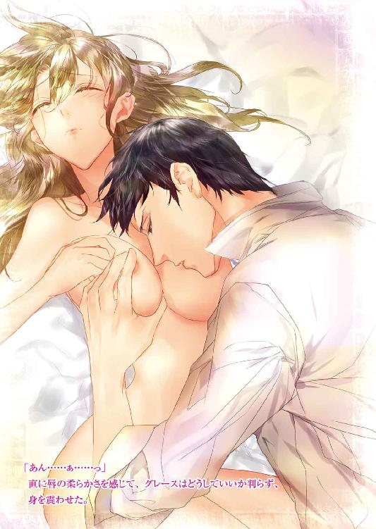
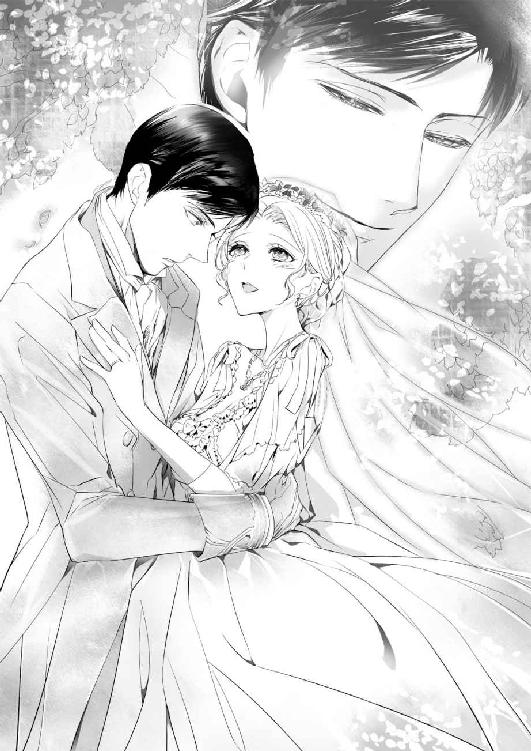

| 過保護伯爵に攫われた花嫁【SS付】【イラスト付】 (ロイヤルキス文庫) | |
| 水島忍 | |
| (2016) | |

この物語はフィクションであり、実在の人物・団体・事件等とは、いっさい関係ありません。
イラスト・ＫＲＮ
「まったく......もう、どうしたらいいの？」
地主の令嬢グレース・フレイザーは、厨房で夕食に使う玉ねぎの皮を剥きながら溜息をついた。
グレースの年齢は十八歳。金髪と緑の瞳を持ち、この近辺では、亡き母譲りの美貌の持ち主と噂されている。けれども、結婚など当分できそうにないし、それどころか社交界にデビューする予定もなかった。
何故なら、我が家が貧乏であるからだ。
父は小さな地所を所有しているものの、土地は痩せていて、借地料はあまり取れない。というのも、昔は広大な土地を持っていたらしいのだが、祖父が借金のために売ってしまったせいだ。そんなわけで、グレースはその美貌を謳われながらも、持参金がないために、今のところ求婚されたことがなかった。
ただし、グレースに興味を持つ男性は多い。
たとえば、そう......マイケル・オシェアみたいな奴のことよ。
グレースは今さっき家に訪ねてきたマイケルのことを思い出していた。
彼は近くの地主の息子だ。それも、甘やかされて育った最悪な男だと思う。顔つきにもそれがしっかり表れている。本人はそれなりの色男だと信じているらしかったが、あの意地悪そうな顔ときたら、嫌悪感しか湧かない。
オシェア家はこの近隣では一番大きな土地を持つ地主一家なのだ。そんなわけで、マイケルの態度も尊大で、居丈高だった。もっとも、マイケルは裕福な地主の息子として生まれただけで、何も成し遂げたわけではない。ただ、毎日ふらふら遊んでいる。それなのに、いつもそっくり返って、借地人に対して威張り散らしている最低な男だ。
もちろん、それだけなら、グレースが溜息をつくことはない。たとえ、夕食のスープに肉を入れられなくても。
彼はグレースに言い寄ってくる。求婚しているのではない。愛人になれと言っているのだ。
そんなこと......絶対にお断りよ！
グレースは何度も断った。どうして愛人にならなくてはいけないのだ。しかも、あんな嫌な男の愛人に。
確かにグレースには持参金がなく、今のところ結婚する当てはない。社交界にデビューもできないのだから、それなりの相手を探すこともできないし、そのことでマイケルがグレースを低く見ているのは判る。
けれど、彼が求めているのは愛人なのだ。
うら若き乙女に、なんてことを！
恥を知れと言いたい。
彼が求婚するのなら、少しは考えるだろう。グレースには弟ジョーと妹ジェニーがいる。二人に教育を受けさせたいし、ジェニーには持参金をつくってあげたい。父にも苦労させたくないという気持ちもある。
もし、結婚して、それが叶うのなら、グレースはマイケルが相手でも我慢したかもしれない。
しかし、たとえ結婚しても、マイケルのあの性格は変わらないだろうから、グレースの実家に援助などするとは思えない。
まして、愛人になどなったら、家族ともどもここにはいられない。
だが、残念ながらマイケルはそういったことを考える頭もないらしい。ただ、グレースを愛人にすればそれでいいのだ。
まったく......とんでもない人だわ！
絶対、愛人になどならないのだから、いい加減、諦めてくれればいいのに。
グレースは再び溜息をつく。すると、横にいた家政婦のマギーがクスッと笑う。彼女は昔からここで働いていて、未婚のまま年を取り、すでに家族同然だった。家も身寄りないので、ここで暮らす代わりに、給金なしで家事を手伝っている。
「お嬢様、そんなに玉ねぎがお嫌いですか？」
「え......いいえ！ 毎日これを食べているし、そんなに好きだとは言えないけど、玉ねぎがあるから、わたし達は生きていけるんだもの」
大げさかもしれないが、グレースはそんな気分だった。
「そうですね。たまには玉ねぎとじゃがいも以外のものも食べたいですけど。それで、畑を荒らした犯人は判ったんですか？」
グレースはまた溜息をつきそうになって、慌てて息を吸う。あまり貧乏なので、最近では畑で作物を育てたり、鶏を飼育して、卵を産ませたりしている。しかし、この間、その畑が荒らされてしまったのだ。
そんなわけで、保存しておいた玉ねぎとじゃがいもと卵ばかり食べる羽目になっている。ジョーとジェニーは双子で、共に十二歳だ。できれば育ち盛りの子供にもっと栄養のあるものを食べさせてやりたいが、どうにもならない。
「犯人は見当がついてるけど、証拠がないのよ」
「......やっぱり、あの人ですかねえ」
マギーだって判っているのだ。畑を荒らす嫌がらせをしたのはマイケルに違いない、と。
マイケル本人はやっていないだろうが、誰かに指示してやらせたのだ。食べ物もなくなれば、自分を頼ってくると思われているのかもしれない。もしくは、愛人になることを承諾しなければ、もっとひどい目に遭うぞと脅しているつもりだろうか。
「お嬢様はなんにも悪くないのに、どうしてあんな人に苦しめられなくてはならないんでしょう」
「どうしたら、判ってもらえるのかしらね。愛人になんかなりたくないってことを。それに、どうせ愛人になるなら、もっと素敵な男性がいいわ。優しくて、尊敬できて、決断力があって、頼りがいのある人。もちろん威張らない人がいいわね」
「そんな立派な人は愛人なんか欲しがりませんよ」
「それもそうね」
二人で笑っていると、裏口からジョーとジェニーが慌ただしく飛び込んできた。
「姉様！ 大変よ！」
「鶏が脱走してるよ！ 早く捕まえなくちゃ！」
グレースはすぐに玉ねぎを放り出して、外に飛び出した。鶏は鶏小屋にちゃんと入れて、鍵をかけたはずだ。鶏が鍵をこじ開けて、脱走したりするはずがない。
つまり、誰かが鍵を開けたってこと......？
これも嫌がらせなの？
鶏がいなければ、卵も食べられなくなってしまう。いくらなんでも、ひどすぎる。
グレースは泣きたくなったが、ぐっと我慢した。そんなことより、鶏を捕まえることが先だ。泣くことなんか、夜ベッドに入ってからだってできる。
それに、ジョーやジェニーに、自分が泣くところなんて見せたくなかった。
だって、わたしは彼らの母親代わりなんだから。
母が病気で亡くなったのは六年前だ。あれからずっと、グレースはマギーの手を借りて、二人の面倒を見てきたのだ。
日が暮れかけている。暗くなる前になんとかしなくちゃ！
グレースは必死で鶏を追いかけて、捕まえた。もちろんマギーもジョーもジェニーも同じように鶏を捕まえ、小屋の中に戻した。
「これで全部ね」
グレースはなんとか全部の鶏を捕まえられ、ほっとした。小屋の戸を閉めたものの、鍵が壊れているのを見て、顔をしかめる。
「どうしよう。鍵の代わりになるものがいるわ」
グレースが困っていると、ジョーが意見を言う。
「紐で結ぶのはどうかな」
「そうねえ」
鶏は出てこないだろうが、誰かがまたやってきて、戸を開け放たないとは限らない。しかし、それを阻止するためには、ここでずっと番をしているしかない。
そんなことは不可能だ。
ああ、どうしたらいいの？
「どうしたんだ、おまえ達」
後ろから声をかけられて、振り返ると、書斎にいたはずの父がそこに立っていた。格好だけは紳士のようだが、服は何年も前のものでくたびれている。
グレースは父に心配かけたくなかった。それでなくても、父はお金の心配をいつもしていたし、子供達にいい暮らしをさせてやれないことを気に病んでいた。
「なんでもないの。鶏小屋の鍵が壊れただけ」
そう言って、大したことがないように取り繕おうとしたのだが、横からジョーが怒ったように口を出した。
「姉様、なんで父様に何も言わないんだよ？ 誰かが鍵を壊したに決まってるじゃないか！」
父の顔色が変わった。
「なんだって？」
「僕達、逃げた鶏を捕まえたんだ。それだけじゃない。この間は畑が......」
「ジョー！ 黙ってなさい！」
グレースは弟を制したが、もう遅かった。
「畑がどうしたんだ？ ジョー、言いかけたことはちゃんと言いなさい」
ジョーはグレースの顔をちらりと見て、ふてくされたように説明した。
「畑が荒らされたんだよ」
「一体、誰がそんなことを......。私達は誰にも恨みを買うようなことはしてないはずだ」
確かに、父は貧乏なだけで、悪いことは何もしていない。小作人にも優しい。優しすぎて、借地料を値上げすることもできないくらいだ。
父はグレースに厳しい眼差しを向けてきた。
「どうして、おまえは私にそういったことを言わないんだ？ 悪戯か嫌がらせか知らないが、もしこの近所に住んでいる誰かがしているなら、犯人を突き止めなくてはならない」
「お父様......でも......危険だし」
マイケル自身は非力でも、彼の手下は、最近村の酒場をうろついている荒くれ者かもしれない。彼らはどこから来たのか知らないが、喧嘩をしたり汚い言葉を使ったりして、村人から嫌われ、避けられている。痩せた父がそんな男達に対抗できるはずがなかった。
「グレース......。あいつじゃないのか？ オシェアの息子がおまえに言い寄っているのは知っている」
グレースは目を見開いた。
「お父様がご存じだとは知らなかったわ」
「あいつが不埒なことを言い、おまえはそれをはねつけた。おまえ達は気づかなかっただろうが、偶然、私はその近くにいたんだ。あいつは黙って帰っていったから、諦めたのかと思っていたが......」
「ごめんなさい、お父様！」
「どうしておまえが謝る？ おまえは何も悪いことはしていない。汚らわしいことを言ったあの男が悪いんだ。いくら私達が裕福ではないからといって、あんなことを......」
父は拳をきつく握っている。マイケルはグレースだけでなく、父をも侮辱したのだ。普通に持参金がある令嬢であれば、マイケルもあんな屈辱的な申し出をするはずがない。
「すまない、グレース」
「お父様が悪いわけでもないわ！」
「私がもっと地所の経営に長けていたら......おまえ達に苦労をかけずに済んだのに」
「それはお父様のせいではないもの」
借金を作り、土地を売り払った祖父のせいだ。しかし、もう亡くなった人のことを悪く言ったところで、今更どうしようもない。
父は重い溜息をついた。
「とにかく......おまえはオシェアの息子と関わってはならない」
「でも、ここにいれば、きっとまたやってくるわ」
グレースは暗い顔になった。彼の申し出を受けなかったら、もっと嫌がらせをされるかもしれない。
だとしたら、我慢して、あの男の愛人になるしかないのだろうか。
でも、そんなの嫌！
結婚は半ば諦めてはいるが、それでも愛人なんて立場にはなりたくない。しかし、それしか家族を救う方法がないとしたら......。
「グレース、馬鹿なことは考えないでくれ」
父の悲しみをたたえた瞳を見て、グレースははっとした。自分が犠牲になっても、父は喜ばない。それに、こういったことはすぐに噂になる。父やジョー、ジェニーに恥をかかせることになってしまう。
「だけど、どうすればいいのかしら」
グレースには判らなかった。自分はただ真面目に生きているだけなのに、どうしてあんな男に目をつけられてしまったのだろう。
そのとき、ジェニーが躊躇いながら父の袖を引っ張った。
「あのね、お父様。わたし......昨日見たの。マイケルと怖そうな男の人達が笑いながら、うちの土地の中を歩いていたの。あの人達がひどいことをしたの？」
じゃあ、やっぱりマイケルが荒くれ者を雇って、嫌がらせしているんだわ！
フレイザー家の土地は広大なものではないが、かといって、誰も侵入してこないように見張れるほど狭くはない。誰が入ってくるか判らないのだ。
ああ、どうしよう......！
父は厳しい顔つきで、ジェニーとジョーに言い渡した。
「おまえ達、不審な男達を見つけたら、すぐに私に知らせるんだ。いいか。そいつらが悪いことをしていても、自分でどうにかしようと思ってはいけないぞ。危険だからな」
こんな小さい子達に危害を与えようとするだろうか。しかし、ああいう乱暴者は何をするか判らない。
父はグレースにも言った。
「おまえはしばらくよそへ行ったほうがいい。......そうだ、キャサリンのところはどうだろう？」
「叔母様のお屋敷に？」
グレースは叔母のことを思い出した。キャサリンは父の妹で、資産家と結婚して、今は未亡人になっている。年齢は三十五歳くらいで、まだ若々しく美しい。
彼女はグレースを子供のときから可愛がり、何度も屋敷に連れていってくれたことがあった。そのたびに、グレースはおいしいものを食べさせてもらい、可愛い人形や美しい服や靴を買ってもらった。
単純かもしれないが、そんなわけで、グレースは叔母のことが大好きだった。彼女の屋敷に行けるのなら、そんな嬉しいことはない。しかし、自分のせいで嫌がらせを受けているというときに、家族を置いてはいけない。
「でも、わたしだけここを離れるわけにはいかないわ！」
「いや、おまえがいるから、嫌がらせをされるんだ。あの男が訪ねてきたら、おまえはしばらく帰ってこないと言おう。何ヵ月かキャサリンのところにいれば、あの男も他の誰かを追いかけるはずだ。そうだろう？」
グレースは躊躇いながら、そっと頷いた。
確かに父の言うとおりかもしれない。自分がいるから、家族が困らされているのだ。それに、単なる嫌がらせだけならまだしも、家族に危害を加えられたりしたら......。
そんなことになったらと思うと、怖くてならない。そうならないように、自分が姿を消したほうがいい。自分の代わりに追いかけられる誰かは可哀想だが、こちらも切羽詰まっている。
「じゃあ、すぐに叔母様にお手紙を書いて......」
「いや、明日出かけるんだ。早いほうがいい。今は嫌がらせだけだが、もしこれ以上のことをおまえにしてくるようになったら......」
グレースは一人きりで、荷馬車で買い物に出かけたり、畑に出ていることが多い。そんなときに、荒くれ者達に遭遇したら一体どんなひどい目に遭うだろう。
そんなこと、考えたくもないわ。
荒くれ者に常識など通用しない。そしてマイケルにも。
「で、でも......わたしがいなくても大丈夫かしら？ 畑のことや鶏の世話や家事も......」
「なんとかなるさ。ジョーもジェニーももう十二歳だ。マギーもいてくれるし、私にだって、おまえがしてくれることの半分くらいできるさ」
「そうね......」
自分がいれば、なんでもしてしまうのだが、いなければいないなりに、彼らも頑張ることだろう。
わたしはもっと家族みんなを信じなくちゃ！
「でも......叔母様はお屋敷にいらっしゃるかしら。旅に出るのがお好きだって聞いたことがあるわ」
「とにかく行ってみればいい。キャサリンはおまえを可愛がっているから、追い返したりしないはずさ」
もし叔母がいなかったとしても、使用人が留守番をしているはずだ。執事や家政婦とは小さい頃から顔見知りだし、理由を言えば、叔母がいない間だって自分を屋敷に泊めてくれるだろう。
「判ったわ。わたし、お父様の言うとおりにする。向こうに着いたら手紙を書くから、みんなも様子を知らせてね」
危険が去ったら、早くここに帰りたい。それに、できるだけ叔母の邪魔はしたくなかった。長く滞在して、叔母に嫌われたくないからだ。
グレースはマイケルが早く自分のことを忘れてしまうようにと祈った。
彼もロンドンへ行けばいいのだ。こんな田舎にいるから、退屈しのぎに近隣の娘を追いかけようなどと思いつくのだろう。ロンドンなら刺激的なことがたくさんあるだろうに。
これがはっきりマイケルの嫌がらせだと判っているなら、父からマイケルの父親にちゃんと言ってもらえるのだが......。
仕方ない。確かな証拠もないのに、文句を言いに行くわけにはいかないからだ。
それに、オシェア家を怒らせると大変なことになる。この近辺で一番裕福な家には、逆らえないし、恥などかかせられない。
結局、世の中、お金なのかもしれない。
日頃はそう思わないグレースも、嫌がらせに遭ってから、少しはそんなふうに考えるようになっていた。
でも......わたしには家族がいるんだから。
それに、もっと貧しい人はいる。少なくともうちの家族には病人はいない。裕福でなかったとしても、元気で仲良く生きている。
わたし達は全然不幸じゃないわ！
「さあ、とにかく夕食の用意をしなくちゃ。ジェニー、手伝って」
「はーい、姉様」
グレースはジェニーを連れて、厨房に戻っていく。一足先にマギーが戻っていて、せっせとじゃがいもの皮を剥いていた。じゃがいもと玉ねぎばかり食べていても、何も食べるものがない暮らしよりはいい。
これ以上、この生活をマイケルに荒らされたくない。
グレースは明日できるだけ早く、この家を発つつもりだった。
翌朝、グレースは叔母の屋敷へと馬車で向かった。
昨夜のうちに父が村に行き、馬車を借り、御者を雇う手はずをつけてくれていた。フレイザー家にも馬はいるが、一頭だけだ。馬車はあるものの荷馬車だ。しかし、我が家の唯一の移動手段をグレース一人が使うわけにはいかない。
馬車を借りたり、御者を雇うのも、お金がかかる。できれば避けたいところだったが、緊急事態だから仕方ない。幸い御者のモーガンは父が子供の頃からの顔見知りだ。料金は安くしてくれた。
「ありがとう、モーガンさん。我が家がお金持ちになったら、倍にして返すわね」
「期待してないで待っているよ、お嬢ちゃん」
六十歳に近い彼は気のいい笑顔を見せて、グレースの手を取り、馬車に乗せてくれた。よそ行きのドレスを着ているから、彼も紳士ぶった態度を取っているのかもしれない。着替えを詰めたトランクも載せてもらい、グレースは馬車の中から家族に手を振った。
「それじゃ、行ってくるわね。ジョー、ジェニー、お父様とマギーの言うことを聞くのよ」
「判ってるよ、姉様」
「姉様、わたしだって......大丈夫よ」
二人は手を振り返した。父もマギーも見送りをしてくれている。
少し心配だが、やはり自分はいないほうがいいのだ。これで、マイケルが諦めてくれることを、グレースは祈った。
馬車は動きだし、叔母の屋敷に向かう。叔母の住むところは馬車で何日もかかるところではない。朝に出て、明日の午後に着く。しかし、それくらい距離があれば、マイケルはわざわざ追いかけてこないだろう。もちろん荒くれ者もやってこない。そもそも、父が叔母の家がどこにあるか、教えたりしないはずだ。
万が一、彼がやってきたとしても、叔母が黙っていないだろう。それに、マイケルが嫌がらせするのは、我が家が貧しいからだ。叔母の立派な屋敷を見れば、裕福なことは判るだろうし、無茶はしないと思うのだ。
マイケルはとにかく俗物だ。お金のあるなしだけが、彼にとって重要なことで、すべての判断基準でもあるようだった。だから、叔母のところに逃げ込むのは正解というわけだ。
宿屋で一泊して、叔母の屋敷に着いたのは午後になろうかという時間だった。
叔母様がいらっしゃるといいんだけど......。
屋敷はとても立派だ。大きいだけでなく、その佇まいは堂々としていて、美しい。よく手入れされているのが判る。屋敷を取り巻く庭もきちんと剪定され、花々が咲いていた。グレースはここで過ごせるのだと思うと、それだけで幸せな気持ちになってくる。
もちろん、叔母様に会えるのが一番嬉しいことなんだけど。
フレイザー家の屋敷は大きいが、もうずいぶん傷んでいる。修復しようとすれば、莫大なお金がかかる。そのため、家族が使う部屋だけを綺麗にしておいて、後はただひたすらに放置しているだけだった。
父はいつかなんとかなると思っている。世間知らずなのか、そんなふうにわざと振る舞っているのか判らない。
けれども、父の気持ちも判らないでもない。将来は確かに暗いが、そのことだけに目を向けていても仕方ない。ただ、日々、懸命に生きていくしかないし、だとしたら、少しでも明るい気持ちで毎日を過ごしたい。
それに......わたし達は悪いことなど何もしていないのだから。真面目に生きているのだから、神様が見捨てるはずがないわ！
現実に目を向けたくないのではない。漠然と明るい未来が訪れるのを信じているだけだ。
グレースは自分の将来について、ある程度、覚悟していた。たとえば、とても素敵な紳士と出会い、結婚の申し込みをされるという夢はもう描いていない。子供の頃はそんなことを夢見たりしていたが、現実的でないことは判っている。
かといって、まったく結婚できないというわけではないだろう。誰かの後妻として結婚することになるかもしれない。グレースとしては、家族の暮らしも助けてくれる人と結婚したいと思っている。ジョーやジェニーには自分のような惨めな想いはさせたくないし、父も楽にさせてあげたい。
わたし達に優しい手を差し伸べてくれるなら誰でもいい......。
そう思いながらも、グレースは顔をしかめた。できれば、あまり年寄りではないほうがいいし、せめて尊敬できる人であってほしい。
わたしを愛してくれる人なら、もっといいわ。そうしたら、わたしもその人を愛せるように努力するから。
そして、子供を産んで、幸せな家庭を築くの。それくらいの夢は見ても許されるんじゃないかしら。
グレースは御者に手伝ってもらい、トランクを玄関の扉まで運んだ。御者にお礼を言うと、彼は前歯が抜けた顔でにっこり笑い、帰っていった。
さあ、叔母様がいてくれればいいんだけど......。
グレースが扉を叩くと、少しして、内側から開いた。初老の執事がグレースの顔を見て、少し驚いたように目を見開いたが、すぐに微笑んだ。
「グレース様ではありませんか。お元気そうで......」
「ええ、ありがとう。あなたもとても元気そうでよかったわ。突然だけど、叔母様はいらっしゃる？」
執事はにこやかにグレースを招き入れた。
「はい、ご在宅ですよ。どうぞこちらへ」
「あの......荷物があるのだけど......。叔母様はわたしをここに置いてくださるかしら」
緊急事態だったとはいえ、連絡もせずに押しかけたことが急に恥ずかしくなってくる。上流階級では普通こんな無作法な真似はしないものだ。
「奥様がグレース様を追い返したりなさいませんよ。ご心配なら、お荷物はお預かりしておきます」
「お願いするわ」
グレースは居間に通されて、ソファに腰かけた。小さい頃から何度もここを訪ねていたので、グレースには馴染みのある居間だった。
「すぐに奥様にグレース様のことをお伝えして参りますので、少しお待ちになっていてください」
執事が居間を出ていった。優しい叔母は怒ったりしないだろうが、内心迷惑かもしれない。そう思うと、グレースは落ち着かなかった。
しばらくして、やや小柄でほっそりとした体形の叔母が現れた。グレースと同じ金髪で緑の瞳をしている彼女は、三十代半ばという年齢よりずっと若く美しく見える。それだけでなく、ぱっと輝くような華やかさを持っていた。
「グレース！ 久しぶりね！」
「叔母様！」
グレースは立ち上がり、叔母に近づいた。叔母は微笑みながら、グレースを抱き締める。小さい頃から彼女はいつもこんなふうにグレースを可愛がってくれていたのだ。
とはいえ、こんなふうに押しかけてくるのは、甘えすぎだろうか。
グレースは身体を離すと、彼女を見つめた。
「叔母様、突然押しかけてきたりしてごめんなさい。これには、いろいろ事情があって......」
「お座りなさい。ゆっくり聞くわ」
グレースが座ると、メイドが紅茶とクッキーを持ってきた。叔母は優雅な手つきで紅茶のポットを持ち上げ、カップに注いでいく。
グレースは事情を叔母に話し始めた。地主の息子から愛人になれと言い寄られていること。彼が荒くれ者を使って、いろんな嫌がらせをしてくること。このままでは危険な目に遭うかもしれないと、父がここへ行くように勧められたことを話し、改めて胸の前で手を組み、叔母に懇願した。
「お願い、叔母様！ わたしをしばらくここに置いてほしいの。他に行き場所はないのよ。叔母様の邪魔にならないようにするから！」
「もちろんよ、グレース。わたしの可愛い姪ですもの」
「ありがとう、叔母様！」
グレースはほっとした。ここに置いてもらえなかったら、マイケルが待ち受ける場所へ、また帰らなくてはならないところだった。
「その地主の息子はとんでもない男よ。あなたみたいな若くて純真な美しい娘を、愛人にしようなんて......。もちろん結婚の申し込みなら別よ。裕福な地主の息子なら、絶対に捕まえておくべきだもの」
叔母はそう言うが、グレースはやはりマイケルと結婚することなんて考えられなかった。彼は決して太ってもおらず、醜くもないし、まだ若い。しかし、とても自惚れていて、粗野な乱暴者なのだ。荒くれ者を雇って、嫌がらせをするような男と結婚したら、絶対に不幸になるに決まっている。
けれども、叔母にはそうは言わなかった。叔母は実家が貧しいために、年寄りと結婚しなくてはならなかったのだ。もっとも、子供もいない裕福な年寄りだったから、こうして叔母が遺産を受け取り、何不自由ない暮らしができるようになったのだが。叔母に言わせれば、自分の亡き夫に比べれば、マイケルはまだいい条件の男であるように思うだろう。
叔母はグレースを見つめ、微笑んだ。
「大丈夫よ。あなたにはきっといい人が現れるわ。なるべく裕福な夫を選ぶのよ」
「でも、あまり選り好みはできないかもしれないわ......」
「そんなことはないわよ。まあ、それはともかく、実はわたし、明日からロンドンに行くことになっているの」
「えっ......」
それなら、自分はどうなるのだろう。だが、ここにいていいと言ってくれたと思うのだが。
「だから、あなたがここで留守番をしていてくれると助かるわ」
グレースはほっと胸を撫で下ろした。
「わたしも......留守番をしていると思えば、叔母様の役に立てているような気がするから、嬉しいわ。本当に、叔母様のためなら、なんでもしたいと思っているのよ」
「まあ、可愛いことを言ってくれるのね」
叔母は目を細めて、グレースを愛おしげに見つめてきた。
「だったら、ここに滞在している間、わたしのドレスを自由に着ても構わないわよ」
「本当？ いいの？」
グレースが着ているものは、恐らく叔母には我慢のならないものなのだろう。一応、一番上等なドレスのつもりだが、何度も繕っているから、少しくたびれている。生地も上等なものとは言いがたい。
叔母は子供の頃のグレースに可愛いドレスを着せてくれた。その延長で、成長したグレースに自分のドレスを着ていいと言ってくれているのだ。
「もちろん本当よ」
「ありがとう......！ 叔母様にはいくら感謝してもしきれないわ！」
「後であなたの部屋に何着か持っていかせるわね。疲れているだろうけど、今、お部屋を用意させているから」
グレースが泊まる部屋はいつも決まっている。ピンクを基調とした美しい部屋だ。壁紙は白地に花模様がついていた。
「突然押しかけてきたわたしが悪いんだもの」
「全然構わないわ。いたいだけ、いてもいいわよ」
「マイケルが違う誰かに夢中になってくれれば、すぐにでも帰るんだけど......。そうでなければ、ロンドンへ行ってくれればいいのに」
叔母は深く頷いた。
「そうよね。愛人になるような女は、ロンドンにはたくさんいるわよ。もっとも、あなたみたいに綺麗な娘はそんなにいないだろうけど」
「でも、わたしは単なる田舎娘よ......。普段着ているドレスはもっと地味でくたびれたものだし、髪だってくしゃくしゃで......」
「でも、田舎娘だからこそ、自分の言いなりになると思っているんじゃないかしら。ロンドンの淑女を前にしたら、きっと何も言えなくなるのかもしれないわ」
着飾った淑女に話しかけられず、もじもじしているマイケルを思い浮かべて、グレースは笑った。彼には不快な思いや恐ろしい思いをさせられた。彼がいないところで笑い者にしてもいいだろう。
しばらく叔母と歓談していたが、ようやくメイドがやってきて、グレースの部屋の用意ができたと告げた。
「夕食の時間まで、しばらく休んでいるといいわ」
「ありがとう、叔母様」
グレースは勧めに従って部屋へ行った。
フレイザー邸の自分の部屋とは大違いだ。壁紙は剥がれたところなんてないし、絨毯も擦り切れてない。ベッドは立派な彫刻が施してある美しいものだし、寝具はふかふかの羽毛が入っているようだ。
なんて素晴らしい部屋なのかしら......。
今夜、ここで寝るのが楽しみだと思った。が、すぐにフレイザー邸に残っている家族に想いを馳せる。自分だけがこんな部屋で楽しい休日を過ごすような気持ちになっていることに、罪悪感を覚えた。
どうぞ、すぐに嫌がらせがなくなりますように。
わたしがいない間に、家族が危険な目に遭いませんように。
グレースはそれだけを祈った。
翌日、叔母はロンドンに旅立った。
グレースは少し淋しかったが、置いてもらえるだけありがたい。それに、何をしてもいいし、叔母のドレスを着ていいと言われている。
とはいえ、いつも畑で作物の世話をしたり、家事をしているグレースは、何もしないでいい生活になると、逆に何をしていいか判らなくなっていた。最初の日こそ、一人で読書や散歩を楽しんだが、次の日になると少し飽きていた。
早朝、馬に乗った後、朝食を摂り、それから散歩に出かける。叔母のドレスを着ているから、いつもの自分より大人っぽく上品に見えるような気がする。普段着のドレスだが、グレースが持っているドレスの何倍も綺麗だ。
まるで上流階級の夫人になったみたい......。
花の香りが風に乗って、グレースにまとわりつく。優しい初春の日差しが暖かく感じられて、幸せな気分になってくる。
庭をぐるりと回ったところで、屋敷に向かう道へ馬車が入ってくるのが見えた。
誰かしら......。
当然、叔母を訪ねてきた客だ。叔母がいないことを知らせてあげなくてはと思い、グレースは屋敷の玄関へと向かった。
馬車が停まり、御者が扉を開いた。すると、中から黒髪の男性が降りてくる。
二十代後半くらいの年齢だろうか。長身で、姿勢がよく、均整の取れた身体つきをしている。彼が着ている黒いフロックコートはとても上質なもので、かなり裕福な男性のように見えた。彼は玄関へと続く石段を上ろうと足を踏み出そうとして、近くにいたグレースに気がつき、青い瞳をこちらに向けた。
目が合い、グレースは胸がときめいた。
彼は整った顔立ちをしている。鼻筋が通り、形のよい眉は男らしく、口元は引き締まっている。しかし、何よりも印象的な目に、グレースは見蕩れた。彼の瞳には強い意志が感じられる。自信に溢れていて、傲慢にも見えるが、それだけではない何かを感じた。
彼もまた大きく目を開いて、グレースをじっと見つめていたが、突然、表情を変える。きつい眼差しで、グレースを睨んできた。
え......どうして？
初対面なのに、どうしてわたしを睨むの？
グレースはその理由に思い当たった。自分が叔母のドレスを着ているからだ。彼は叔母がこのドレスを着ているところを見たことがあるに違いない。それで、グレースのことを何者なのかと怪しんでいるのだろう。
でも、彼こそ何者なのかしら？
もしかして、叔母様の恋人だとか......？
叔母の恋人にしては少し若いような気もしたが、恋に年齢は関係ない。それに、叔母はまだとても綺麗で、年齢よりはるかに若いように見えた。彼のような自信たっぷりの男性なら、叔母の恋人となってもおかしくない。
グレースは一目で彼に惹かれたので、少し気落ちした。叔母の恋人なら、自分などお呼びではないからだ。
それでも、一応尋ねてみた。
「あの......何か御用でしょうか？」
彼はこちらに向き直り、近づいてきた。
近くで見ると、あまりに素敵な男性なので、ドキドキしてくる。しかし、鋭い視線で見つめられて、グレースは言葉に詰まった。
「あなたが噂のレイシー夫人だな？」
えっ......？
グレースはようやく彼が叔母とは顔見知りでもなんでもないことに気がついた。そして、事もあろうに、グレースを叔母と間違えている。
やだ。わたしは十八歳なのに！
叔母とはずいぶん歳が離れている。いくら大人っぽいドレスを着ているからといって、まさか間違えられると思わなかった。自分は彼女の姪だと言おうとしたが、その前に彼が口を開いた。
「私はミドルフォース伯爵だ。そう言えば、私の用件は判ってもらえるだろう？」
まあ、彼は貴族なんだわ！
しかし、グレースがそれだけで用件が判るはずもない。もちろん叔母は判るのだろう。彼がこんなにも睨んでくる理由も。
でも、叔母様が何をしたっていうの？
だいたい、若い未亡人の家に押しかけてきて、脅すような真似をするなんて、紳士のすることではない。グレースは大好きな叔母を守るような気持ちになっていた。
「あいにく、全然判りませんけど。でも、わたしは......」
姪だと名乗る前に、伯爵は冷ややかな口調で言った。
「妹の夫を誘惑しないでほしいと言いにきた。手切れ金は払う。結局、それが目当てなんだろう？」
グレースは唖然として、ぽかんと口を開いてしまった。
叔母様が彼の妹の夫を誘惑してる、ですって？
そんなこと、あるはずないわ！
あの優しい叔母がそんな不道徳なことをするはずがない。彼の思い違いだ。というより、彼には偏見があるのではないだろうか。若い未亡人は男を誘惑するものだと、思い込んでいるに違いない。
十八歳のグレースが叔母のドレスを着て、少し大人っぽく見えていたとしても、叔母と間違えられるような年齢に見えるわけがない。彼が本気でそう思っているなら、人を見る目がまったくないということだ。
彼の言うことなんて一言も信じられない。グレースはますます叔母を守らなくてはならないという気持ちが高まっていった。
こんな男に、わざわざ人違いをしていると指摘することはない。グレースは叔母になりきって、彼を撃退することにした。
「言っておきますけど、わたしは誰も誘惑なんかしていません！ 何かのお間違えでしょう？」
伯爵の青い瞳に炎が宿った。彼を怒らせたようだが、彼もグレースを怒らせたのだ。いくら貴族だからといって、叔母の屋敷に馬車を乗りつけ、無礼なことを言う権利はないのだ。
「ほう。小切手は欲しくないと？」
「もちろんよ！ あなたって、本当に失礼な人ね！」
「ジェイソンが金を持っていると思っているかもしれないが、そうではない。彼より私のほうが裕福だ。私を味方につけておいたほうがいいと思わないか？」
ジェイソンというのは、彼の妹の夫の名前らしい。彼の基準は裕福かそうでないかなのだろうか。お金だけが判断の基準だなんて、ずいぶん可哀想な人だ。世の中にはもっと大事なものがあるだろう。
「とんでもないわ。わたしはお金に困っているわけではないのよ。それに、人の夫を奪うような真似だって絶対にしないわ！ 伯爵様、あなたは何か間違えているのよ。どうぞお帰りください」
グレースはきっぱりと言い放った。しかし、彼はなおも疑わしそうな声で尋ねてきた。
「本当にジェイソンを誘惑していないと言うのか？」
「そうよ。少しくらい話したとしても、それだけのことなんだから、誤解しないでほしいわ」
すると、彼は一瞬押し黙った。まだ何か文句をつけるつもりなのかと思ったが、急に微笑んだ。
突然の態度の変化に戸惑いながらも、グレースは自分の頬が赤くなるのを感じた。彼はとても尊大で嫌な奴のようだが、姿形はとても素敵だからだ。
「そこまで言うのなら、レイシー夫人、頼みがあるんだが」
彼の口調も柔らかくなってきた。最初からこんな態度で話してくれれば、グレースももう少し優しく主張したことだろう。自分はレイシー夫人の姪で、彼女はそんなことなど絶対にしない、と。
「頼みって......？」
「妹に、今の主張を聞かせて、納得させてほしいんだ。妹は身重なのに、夫が自分を裏切っていると思い悩んでいる。このままでは、お腹の子供に障りがあるかもしれない」
「まあ......そうなの」
彼の妹がきっと自分の夫が浮気していると思い込んだのだろう。そして、その相手が叔母なのだと。叔母は綺麗だから、男性と少し話しているだけで、そんなふうに思われるのも判らないでもない。特に、身ごもった女性の心は少し不安定になると聞いたことがある。
「わたしでよければ、妹さんにちゃんと話すわ」
彼の妹は、グレースが叔母とは別人だということにすぐに気がつくだろう。だが、それでも、叔母がどんな人物なのか、説明する機会が得られる。優しくて大好きな叔母が、誰かに悪く思われたままでいるのは嫌だった。
そうよ。絶対判ってもらわなくちゃ！
「それなら、すぐに用意してくれ。私の馬車で妹のところへ連れていこう」
「え......今から？ すぐに？」
グレースは戸惑った。そんなに急がなくてはならないことなのだろうか。だが、伯爵は断固とした口調で言った。
「そうだ。急いでくれ。妹をすぐにでも安心させてやりたい。もし、お腹の子に障りがあったりしたら......」
「そ、そうよね。でも、妹さんはどちらにいらっしゃるの？ 遠いところなら、着替えとか、それなりの用意をしなくちゃいけないし......」
「大丈夫だ。妹は私の別荘にいる。それほど遠くはないから、着替えはいらない。外出の用意だけすればいい」
「判ったわ......。では、中に入って、少しお待ちになって。用意をしてきますから」
「いや、私はここで構わない。できるだけ早く出かけたいんだ」
再びグレースは戸惑った。普通の貴族なら、屋敷の中で紅茶でも飲みながら、優雅に待つものではないだろうか。
いや、きっとそれほど急いでいるのだ。妹に対する愛情が深いのだろう。グレースは屋敷の中へ入ると、メイドを呼んで、自室に向かった。叔母の外出着に着替え、叔母の帽子をかぶり、叔母の手提げ袋を持つ。鏡の中の自分は、とても叔母と同年齢には見えない。
そうよね。いくらなんでも、彼は失礼よ。
彼の妹に会えば、すべて解決する。急いで階段を下りて、執事に告げた。
「出かけてくるわ。夜までには帰ってくるから」
執事は外に停まっている馬車とその前に立っている伯爵を見て、眉をひそめた。
「あの紳士は一体、何者なのですか？ お嬢様とお知り合いの方でしょうか？」
グレースは説明しようかと思ったが、叔母の名誉に関わることだ。叔母が他人の夫を誘惑しているという嫌疑をかけられているとは言えない。
「そうなの......。ミドルフォース伯爵という方なのよ。身元はしっかりしている紳士だから、心配しないで」
グレースはそう言いながら、ふと疑問に思った。彼が名乗った爵位名は本当のものなのだろうか。自称貴族など、世の中にはたくさんいると聞いたことがある。
だが、彼は叔母がミドルフォース伯爵という名を知っていると思い込んでいるようだった。だとしたら、叔母はそういう伯爵がいることは知っているのだろう。身元がしっかりしているとは言い切れないが、彼が嘘をついて叔母を連れ出す理由はないように思えた。
グレースが屋敷から出てきたのを見て、伯爵は扉を開けてくれた。御者は馬に水を飲ませている。水が入っている桶はここの厩舎から借りたものらしい。
「馬はもう少し休ませたほうがいいんじゃないのかしら」
「大丈夫だ。少し先の宿屋で、馬を替える手配をしているから」
用意は万端整えているというわけだ。叔母が手切れ金を受け取れば、すぐに帰れると思っていたに違いない。
伯爵はグレースの手を取り、馬車に乗る手助けをしてくれた。手袋越しだが、こんな若い男性と触れ合ったのは初めてで、胸がときめいた。
とても尊大な人だが、外見はとても素敵だから......。
そうよ。それだけよ。わたし、こんな人なんか好きでもなんでもないんだから。
叔母を疑うような人を好きになれるはずがない。もちろん、彼は叔母と会ったことすらなくて、妹の言葉をただ信じているだけなのかもしれないが。
それにしても、手切れ金なんてね......。
お金でなんでも片がつくと思っているんだわ。
その考え方は気に食わない。彼をマイケルと同類と考えるわけではないが、どこか似たところはあるのかもしれない。
グレースが座席に座ると、伯爵も馬車に乗り込み、向かい側に座った。
馬車の扉が閉まると、グレースは急に危機感を覚えた。こんな狭いところに二人きりで閉じ込められている。そもそも、男女はこういう場で二人きりになってはいけないのではないだろうか。
グレースは地主の令嬢とはいえ、社交界にデビューもできない身の上で、自分の暮らしぶりを思い出すと、とても上流階級にいるとは言えない。しかし、やはり年頃の娘なのだ。男性と二人きりでいることを強く意識してしまう。
「小間使いを連れてくるべきだったかしら」
「別にいいだろう？ 君は未亡人なんだから」
「......そうね」
本当に彼の目にはそんなふうに見えているのだろうか。いや、若くても未亡人になる人はいるが。彼は叔母が何歳なのか、よく知らないのかもしれない。いずれにしても、自分は世慣れた未亡人にはまったく見えないと思うのだ。
御者が水桶を返しにいき、また戻ってきた。
ようやく馬車が動き始める。叔母の屋敷を離れ、近くの村を通り、街道へと進んでいく。グレースは向かい側の伯爵を意識しながらも、まともに目を合わせるのが恥ずかしくて、窓の向こうの景色をずっと眺めていた。
突然、伯爵が話しかけてきた。
「そうしていると、まるで少女みたいに純真に見えるな」
「少女じゃないわ！」
十八歳は成人とは認めてもらえないかもしれないが、少女とは言えない。少なくとも、グレースはそう思っていた。
「判っている。ただ、不思議に思っただけだ。君は金目当てで年寄りの男と結婚し、未亡人になってからも、たくさんの男を誑かしたのに......」
グレースはキッと彼のほうを向くと、睨みつけた。
どうして彼はそこまで叔母を悪く言うのだろう。
「わたし、そんなことはしてないわ！ それに......あなたに貧しい暮らしの何が判るの？ 持参金もないのに求婚してくれた人と結婚して何が悪いの？」
グレースだって、他の誰も求婚してくれなければ、そういう相手と結婚する羽目になるかもしれない。それを、裕福そうな貴族にとやかく言われたくなかった。彼は叔母だけではなく、グレースも傷つけたのだ。
彼はグレースをじっと見つめてくる。
「しかし、結局、男を利用したんだろう？」
「あなたがそう解釈したいなら、それで構わないわ！」
彼の偏見はなかなか消えない。それはどうしようもなかった。ただ、彼の妹にはきちんと話をしよう。叔母は何も悪くないのだと。
伯爵は何故だか溜息をついた。
「君みたいに美しい容姿を持っているなら、他にいくらでも男が寄ってくるだろうに、どうして妹の夫など選んだんだろう」
「だから、妹さんの旦那様を誘惑なんかしていません！」
妹に説明してくれと言ったのに、彼はまだ叔母が妹の夫と関係があると信じているのだ。それならば、どうして自分を連れていくのだろう。
「その髪や瞳の色だけで、男は誰でも惹きつけられてしまうだろう。まったく罪作りなことだ」
彼はグレースの言葉を無視していた。グレースは腹立たしくて仕方ない。この髪や瞳の色だけで、マイケルは惹きつけられたのだろうか。しかも、そのせいで、彼に失礼なことを言われるのだとしたら、グレースにとっては迷惑でしかなかった。
こんなに嫌なことを言う彼の外見が、これほど素敵なのが惜しい。グレースは彼と話をしたくなくて、再び窓の向こうに目を向ける。すると、彼もまたグレースに話しかけてこなくなった。
しばらく馬車は走り続けたが、宿屋で停まった。ここで馬を替えるのだという。
「ついでに、ここで休憩しよう。何か軽く食べようか」
伯爵はそう言って、馬車から降りた。確かにずっと揺れる馬車の中で座り続けていたから、少し疲れている。とはいえ、夫婦でもない男女が宿屋で食事をするのは、あまりよくないことかもしれない。
考えすぎかしら。ただ食事をするだけなのに。
馬車から降りて、身体を伸ばすと気持ちがいい。伯爵はグレースを連れて宿屋に入り、紅茶とサンドイッチを頼んでくれた。
「あなたの別荘まで、あとどのくらいなのかしら」
グレースはサンドイッチを摘まみながら、彼に尋ねた。
「それほどかからないよ」
「妹さんに説明したら、わたしはすぐにお暇するわ。そうしないと、夜までには帰り着けないから」
彼の言葉を信じて、泊まる用意など何もしていない。それなのに、途中で宿屋に泊まる羽目になってしまったら最悪だ。
「大丈夫だ。私を信じてくれ」
彼はそう言うが、なんとなく信じきれないのは何故なのだろう。
もうすぐ着くと言われながら、ずっと遠くに連れていかれるような気がしてしまう。考えすぎだろうか。そもそも、彼の言動は最初から変だった。屋敷の中に入らず、外で待っていたし、彼の言葉はどこか曖昧だった。
だが、彼もグレースの言葉を信じてないのだから、お互い様だ。
「もし、妹さんがわたしの言うことを信じてくれなかったら......」
「信じさせるしかないだろう」
彼自身が信じてないのに、難しそうだ。しかし、女同士なら、話が通じやすいかもしれない。グレースは叔母の名誉のために、なんとか頑張るつもりだった。
サンドイッチを食べてしまうと、紅茶を飲み干し、宿屋を出た。そして、また馬車に乗り、彼の別荘へと向かった。
しかし、目的地へはなかなか着かなかった。
グレースははっと目を覚ました。
馬車が停まったようだ。ようやく目的地に着いたらしい。だが、窓の外を見て、グレースはギョッとした。
「もう日が暮れかけているじゃないの！」
夜までに叔母の屋敷に戻るつもりでいたのに、これでは無理だ。夜通し馬車を走らせたとしても、明日の朝になってしまうだろう。
もちろん、夜通し馬車を走らせるなんて現実的ではない。馬も休息が必要だし、自分の体力ももたない。御者だって、そんなこと頼まれたら嫌がるだろう。
でも、ちゃんと帰れるって、彼は言ったのに！
こんなに遠いと知っていたなら、グレースは泊まる用意をしてきた。彼はここがそんなに遠いと知らなかったのだろうか。それとも、嘘をついて、ここに連れてくることを悪いとも思わなかったのか。
薄闇の中、グレースは御者の助けを借りて、馬車を降りた。目の前には貴族の別荘というより、年老いた女性が一人で余生を過ごすようなコテージだった。だが、問題はそれがとても荒れ果てているように見えることだ。前庭も雑草が伸び、とても手入れされているようには見えない。
こんなところに伯爵の妹がいるの......？
「あの......」
伯爵はグレースの手を取り、自分の腕にかけた。そして、コテージの扉に向かう。鍵がかかっていないのか、彼は扉を開いた。
恐る恐る覗き込む。すると、中は外観と同じで、ずいぶん荒れている。だが、空気の入れ替えをしてあるようで、黴の匂いはしなかった。
馬車が動き出した音を聞いて、振り返る。空の馬車は向きを変えて、元来た道を引き返そうとしている。
「馬車はどこへ？ 厩舎が近くにあるのかしら」
「いや......そうじゃない」
グレースは戸惑った。眠っていたので、この近くに村があるのかどうか判らないが、馬車はそこに置いておくのかと思ったのだ。けれども、そうではないのだろうか。とにかく、このコテージに厩舎がないのは間違いなかった。
「妹さんはどこにいらっしゃるの？ 二階かしら」
気を取り直して、グレースはコテージの中に入った。しかし、そこはしんと静まり返っている。彼の妹どころか、誰の気配もしない。背後で玄関の扉が閉まり、グレースははっとして振り向いた。
伯爵は薄笑いを浮かべている。
「妹は私の屋敷にいる」
「え......じゃあ、どうしてわたしをここへ連れてきたの？ 妹さんに説明してほしいという話だったでしょう？」
意味が判らない。確かに、こんな荒れ果てたところに、身ごもった女性はふさわしくない。その女性が伯爵の妹なら尚更だ。だが、それなら、グレースが連れてこられた理由が判らないのだ。
しかも、彼は急いでグレースを連れていきたいと言っていたはずだ。
一体、どういうことなの？
彼はグレースの問いを無視して、右腕を広げて、コテージの内装を示した。
「君はここをどう思う？」
グレースは眉をひそめた。彼の考えていることがさっぱり判らない。
「......何年も放っておかれたように見えるわね。妹さんがいらっしゃらないのなら、わたしは早く帰りたいんだけど」
「でも、馬車は行ってしまった。一週間は戻ってこないよ」
「どういうこと？ あなたの言うことは嘘ばっかりね！ あなたの別荘は近くで、わたしは日帰りできるはずだったわ。そして、妹さんはここにいない。わたしをここに閉じ込めておくつもりなの？」
彼はニヤリと笑い、ゆっくりと拍手をした。
「そのとおり！」
グレースはさっと青ざめ、彼から離れようと後ずさった。
「心配しなくていい。君に危害を与えるつもりはないよ」
「でも、閉じ込めるつもりだって......」
「だからって、何も君を縛って、地下室に放り込むわけじゃない。私はこれから君の性根を叩き直すつもりだ。もう二度と、他人の夫に手を出さないようにね」
やっぱり、この人はわたしの言うことを信じてなかったんだわ！
悪質なのは、信じているふりをしながら、グレースを騙して、ここに連れてきたことだ。きっと最初からそのつもりでいたに違いない。手切れ金で納得しないなら、ここに連れてこようと。
彼は何をするつもりなの？ 危害を加えるわけではなく、部屋に放り込むわけでもないけど、性根を叩き直すって......。
「さあ、レイシー夫人、これから君は......」
「わたし、本当はレイシー夫人じゃないの。レイシー夫人はわたしの叔母なのよ！ わたしはグレース・フレイザーと言って、ただ叔母の留守を預かっていただけで......」
伯爵はグレースの言葉を鼻で笑った。
「グレースか......。そう呼んでもらいたければ、それでもいい。だが、見苦しい言い訳はやめるんだな」
「本当よ！ わたしを見てよ。未亡人に見える？」
「見えないな。レイシー夫人はとても若く見えるという噂どおりだ」
だからといって、まさか十代には見えないはずだ。この男は頭が固いのだろう。一度思い込んだら、それが間違いだとは考えられないのかもしれない。
彼はじっとグレースを見つめて、髪に手を触れる。
「黄金色の髪に緑色の瞳。若く美しい未亡人。噂に聞いたとおりだよ......」
髪を優しく撫でられて、グレースはドキンとする。そんな場合ではないとは判っている。いくら優しく触れても、彼は本心ではグレースをこらしめたいと思っているからだ。
「わ......わたしをどうする気なの......？」
か細い声で尋ねると、彼はふっと笑って、髪から手を離した。
「君の言うとおり、ここは荒れ果てている。だから、君の手で綺麗にしてもらいたいんだ。それが終わるまでは、いくら泣き喚いても、帰すつもりはない」
「綺麗に......？ ここを？」
彼はニヤリと笑う。
「そうだ。掃除をしてもらうんだ。水を汲んできて、雑巾であちこち拭いてもらう。料理も作ってもらおうか。庭の草むしりなんかもいいな」
グレースは彼の計画を聞いて呆れてしまった。
わたしが音を上げて、もう彼の妹の夫に手を出さないと誓うまで、メイド扱いするつもりなのね！
むらむらと腹が立ってきた。なんて傲慢な男だろう。そもそも叔母がそういった行動をしていると思い込んでいること自体が間違っているというのに。
いくらこちらが違うと言っても、まったく耳に入れない。人間違いであることさえ、そうなのだ。
そして、騙してまで、ここに連れてきた。グレースは眠っていたから、ここがどこかさえ知らない。この近くに村があるかどうかも判らなかった。
もし、叔母がまだロンドンに出かけていなかったとしたら、今ここにいるのは叔母だったのだ。あの上品で美しい叔母が、こんな男にメイド扱いされることを想像しただけで、頭に血が上りそうだった。
そんなこと、絶対許せないわ！
叔母も独身の頃は貧しい暮らしをしていたはずだ。けれども、今はすっかり裕福な未亡人だ。いきなり、こんな汚い場所を掃除しろと言われたら、きっと動揺しただろう。
でも、わたしは違う......。
今、グレースは貧しい暮らしをしているのだ。家事労働など、グレースにとってはそれほど苦痛ではない。
いいわ！ わたしが叔母様の身代わりになるわ！
グレースが苦もなく、いろんな家事をやり遂げれば、彼はこんな計画が無意味だということが判るだろう。彼が間違いを認めるときが来るのを、楽しみにしていよう。
「それで？ 掃除の道具はどこにあるの？」
落ち着き払って言うと、伯爵は一瞬驚いた顔をした。だが、すぐにその表情を隠す。
「まずは、食事の用意だ。すぐに日が暮れてしまう」
グレースはふとドレスに目をやった。叔母の綺麗な外出用のドレスが汚れてしまう。自分の手を汚すことなど慣れている。しかし、この綺麗なドレスが汚れるのは悲しかった。
だって、こんなドレス、わたしはもう着る機会がないかもしれないのに。
顔を上げると、伯爵はほくそ笑んでいた。ドレスが汚れることを悲しんでいるのを見て、彼は笑っているのだ。
なんて奴！
マイケルのことが嫌いでたまらなかったが、この伯爵も大嫌いだ。
「ここを綺麗にするには何日もかかるわ。あなたも......ここにずっといるの？」
「もちろんだ。だが、気にすることはない。ここは人里離れている。誰にも噂を立てられる心配はない。それに、私に手を出されるかもしれないという心配はしなくていい。私は他人の夫を誘惑するような女性は好みではないから」
蔑むように言われて、ムッとする。しかし、彼が手を出してこないのなら安心だ。噂を立てられたとしても、グレースのことを誰も知らないのならどうでもいいことだ。
グレースは肩をすくめた。
「何か食べられるものはあるのかしら」
「厨房に用意させている。君が食べられるものを作れなければ、飢えるか、生のまま齧るしかないな」
本気だろうか。それとも、彼は別に食べ物を隠し持っているのか。そんなふうには見えないが、彼がどんな用意をしているのかまでは判らない。
「寝室はどうなっているの？ ベッドは？ シーツはどうなっているの？」
ベッドがちゃんと寝られる状態なのかどうかは確かめておきたかった。汚い床に寝転がりたくはないし、ソファには埃が溜まっているようだ。とにかくベッドだけは今のうちに清潔にしておきたい。
「心配しなくていい。ベッドと厨房は綺麗にしてもらっているから」
それを聞いて安心した。そこまで彼はひどい男ではなかったようだ。もちろん感謝などするつもりはないが、助かったと思った。
「判ったわ。......では、料理を作ります、伯爵様」
わざと慇懃無礼に『伯爵様』と呼ぶと、彼は眉を上げた。
「私の名はブラッドだ、グレース」
「貴族は爵位名しか名乗らないと思っていたわ」
「そんなことはない。しばらく二人きりで過ごすことになるんだ。君を名前で呼ぶなら、私も名前のほうがいい。こんな汚いコテージで、嫌味たらしく『伯爵様』と呼ばれるよりはね」
嫌味はちゃんと通じていたらしい。メイドのように働かされるのなら、いっそメイドのつもりでいたほうがいいと思ったのだ。疲れていたが、泣き言など言いたくない。この嫌な男に弱みなんて絶対に見せたくなかった。
「では、ブラッド......」
名前を呼ぶと、彼は何故だか微笑んだ。それが薄暗い室内をぱっと明るくしたように思えて、ドキッとする。
「グレース......なんだろう？」
「灯りをつけてほしいの。もう日が暮れるから」
暗くなってしまう前につけておかなければ、困ることになる。ブラッドは頷き、部屋を見回して、ランプを手に取った。グレースは厨房へ行き、どういった状態なのかを確認した。
彼の言ったとおり、ここは綺麗にしてある。流しがあり、そこにはポンプがついている。動かしてみると、井戸から汲まれた冷たい水が出てきた。
貯蔵庫には野菜や他の食材も置いてある。はっきり言って、フレイザー家よりずっといいものを食べられそうだ。一度、ブラッドをフレイザー家に連れていってみたい。どういう暮らしをしているか判れば、こんな馬鹿なことは思いつかないに違いない。
でも、本物の貴婦人をここに連れてきたら、きっとショックを受けるわね。
それこそ、泣き喚いて、何もしないのではないだろうか。いや、貴婦人は何もしないのではなく、何もできないのだ。
グレースは帽子と手袋を取った。グレースの手は貧しい暮らしのわりにはあまり荒れていない。とはいえ、貴婦人の手とはずいぶん違うはずだ。それでも、こんなときには頼りになる手だ。
得意な料理は煮込み料理だ。気取った料理など、あまり知らない。幸い食材はたくさんある。ブラッドが用意したものだから、気前よく鍋の中に放り込む。塩漬け肉があるのがありがたい。じゃがいもと玉ねぎのスープより、ずっとおいしいものができあがりそうだ。
調理のための火を起こしていると、ブラッドがやってきた。彼は上着を脱いでいて、シャツを腕まくりしている。白いシャツに黒い煤が少しついていた。
「寝室の暖炉に石炭を入れておいた。暖炉の掃除はやってもらったが、石炭を入れるのは忘れていたみたいだな」
「夜や朝はまだ寒いときがあるものね」
「そうだな。日中は暖かいが......」
そんな会話をしながら、グレースはなんだか不思議な気持ちになってきた。
まるで、わたし達が貧しい夫婦で、協力し合って家事をしているような......。
もちろん、そんなわけはない。グレースは虜囚で、ブラッドは看守だ。ここに来たばかりで、彼もここに泊まるから、自分が居心地いいようにしているに過ぎない。
彼は鍋の中を覗いた。
「ほう。料理らしきものは作れるのか」
「わたしはやろうと思えば、なんだってできるのよ」
伊達に、貧しい暮らしはしていないのだ。彼こそ、貴族として生まれ育ったのだから、こんなところに泊まるのはぞっとするような経験なのではないだろうか。
「今日は煮込み料理だけで我慢してもらわないといけないわ」
「他にも、何かできるのか？」
彼は不思議そうにしている。ここでグレースが涙に暮れるとでも思っていたのだろう。冗談ではない。フレイザー家の屋敷はここまでひどくはないが、こんなに栄養のある食事を摂れるのだから、ありがたいくらいだ。
彼のほうが、ここでの暮らしに先に音を上げるかもしれないわ！
そう思うと、なんだか楽しくなってきた。それがついつい表情に出てしまい、彼は不審そうな顔つきになる。
「何か企んでいるんじゃないだろうな？」
「わたしが何を企むというの？ ここから逃げ出すとか？」
「いや、それは心配していない。逃げ出したところで、君は人里には近づけない。箒に乗って、飛んでいきでもしない限り無理だ」
自信満々にそう言われるくらいだから、ここは本当に人里離れた場所なのだろう。さっき窓からちらりと見たが、馬車がやってきた小道と、ここを取り囲む鬱蒼とした森しか見えなかった。
逃げ出すにしても、夜の森を通り抜けて、どこかに行こうとは思わない。それより、ここでおとなしく家事でもしていたほうがましだ。少なくとも、ここでは飢え死にはしないし、凍え死にもしないだろうから。
グレースは鍋を火にかけた。これをしばらく煮込んで、味つけをすればできあがりだ。次に、パンの生地を作り始める。粉をこねていると、グレースをじっと観察しているブラッドが声をかけてきた。
「何をしているのだ？」
「パンを作るのよ。一晩置いて、明日の早朝に焼くの。そうしたら、朝食にパンが食べられるでしょう？」
ここに置いてあるものは良質の小麦だ。こんな古ぼけたコテージでも、さすが貴族は違う。グレースは明日おいしいパンが食べられると思うと、それだけで幸せな気分になってくる。
「君は......本当にいろんなことができるようだな」
ちらりと目を向けると、ブラッドは唇を真一文字に引き結んでいる。きっと、こんな環境に置かれたグレースがちっとも堪えていないことが気に食わないのだろう。
グレースは微笑んだ。
「そうよ。ガッカリした？」
「いや......。つらいのはこれからだ。君は明日からここを隈なく掃除しなくてはならないんだからな」
確かにここのコテージを綺麗にするのは骨が折れるとは思う。しかし、グレースは働き者で、掃除は好きなほうだ。できるだけ楽しそうに掃除をして、彼を苛立たせてやろう。そうすれば、早く帰れることになる。
とりあえず、厨房は綺麗だし、食材もたっぷりある。おまけに、ベッドも清潔だそうだから、つらいことなど何もない。
「食事はどこでするの？ 食堂はまだ綺麗じゃないから......ここでいいかしら？」
調理台には椅子がついている。グレースはどこでも食べられればいいが、ブラッドは眉をひそめた。
「厨房で食べるのか？」
「文句があるなら、あなたは食堂で食べればいいわ。でも、わたしは今から掃除なんかしないわよ」
長い間、馬車に揺られて、すっかり疲れている。しかも、ランプをつけているとはいえ、もう暗いのだ。今から食堂を綺麗に磨き上げることはしたくない。
「......判った。ここでいい」
グレースはパン種ができると、それを容器の中に入れて、蓋をした。このまま貯蔵庫に一晩置いておけば、発酵するだろう。
調理台を拭き上げると、テーブルのセッティングをする。といっても、煮込み料理しかないのだから、大量のナイフやフォークを置いたりするわけではなかった。
彼は貯蔵庫からワインを取り出してきて、調理台に置く。
「君も食前酒はどうだ？」
日頃、ワインなど口にしないグレースも、今は何か飲みたい気分だった。グラスを持ってくると、彼はワインの栓を抜いていた。
彼は貴族だが、何もしないわけではないようだ。グラスにワインを注ぎ、グレースに差し出してくれる。
「ありがとう」
礼を言った後、グレースは顔をしかめる。自分を閉じ込めて、こき使っている彼に礼を言うのは、少しおかしいような気がしたからだ。
ふと、彼がこちらをじっと見つめながら、グラスに口をつけていることに気がついた。そんなに見つめられると、なんだか恥ずかしくなってきてしまう。だからといって、そんなに見つめないでとは言えない。まるで彼が自分に対して特別な感情を抱いていると誤解しているみたいだからだ。
自意識過剰よ。彼はわたしのことを、妹の夫を誘惑した悪女だと思っているんだから。
「君は本当に綺麗だな......」
グレースはぱっと顔を赤らめた。金色の髪と緑色の瞳は目立つようで、グレースは何度も美しいと言われたことがある。しかし、こんなにしみじみと綺麗だと褒められて、胸が弾んだ。
「綺麗だなんて......」
「いや、誰が見ても、君は美しいさ。だが、他人の夫にも気軽に手を出すような軽薄さを持っているのは、惜しいことだな」
結局、そこに話が戻るのね。
グレースはガッカリした。彼の頭の中には、妹を守ることしかないのだろう。そんなに心配してもらえる妹が羨ましい。グレースにも彼のように立派な兄がいてくれれば、いくら貧しくても、苦労することもなかっただろう。
父はなんだか頼りないし......。
最愛の父をそんなふうに思いたくはないが、三人の子供を残して妻に先立たれたことでショックを受け、どこか現実逃避をしているところがあったような気がする。その分、グレースは頑張って、母親代わりの仕事をこなしてきた。
だから、マイケルのことで、あんなに激怒してくれた父を頼もしく感じて、父の言うとおりに、叔母の屋敷へ行くことにしたのだ。父がいつもの父なら、自分だけ家を出ることなど考えられなかっただろう。
それにしても、まさかわたしがこんなところでこんな目に遭っているなんて、お父様は想像もしていないでしょうね。
彼の口車に乗せられた自分が悪いのだろうか。しかし、あのときは叔母の潔白を晴らさなくてはならないと思ったのだ。
だが、彼はまったく聞く耳を持たない。偏見に凝り固まっている。
もう一度、自分が叔母ではないことを言おうかと思ったが、やはりやめておく。本物の叔母を捜しにいかれては困る。叔母はロンドンに出かけたのだから、しばらく帰ってこないと思うが、彼のような男はロンドンまで追いかけていかないとも限らない。
こんなメイドみたいな生活は、叔母にはさせられない。だが、グレースなら耐えられる。
どうにかして、叔母様が無実だったことを、彼に判ってもらわなくては！
そのためには、やはりここで頑張ることだ。そうすれば、自分の言葉に重みが出るのではないだろうか。
そうよ。わたしが軽薄なんかじゃないってことを、判ってもらわなくちゃ。
グレースは深く息を吸うと、にっこり微笑んだ。
「わたしはあなたの頭の中に間違った考えが詰まっていることを、残念に思っているわ」
途端に、彼は険しい表情になった。
「ほう......。私とは意見が合わないようだな」
「でも、できれば、わたしのことを理解してくれるようになってくれれば嬉しいわね」
「理解だって？ 私は君のことなんて、とても理解できそうにない」
「いいえ。理解しようという気持ちがないだけよ。もっと柔軟に考えれば......」
「柔軟になったところで、私は結婚の誓いを破ることなど絶対に許せないし、既婚者に破らせようとそそのかすことも許せない」
グレースは溜息をついた。どうしたら、この頭の固い男に、叔母はそんなことをしないと信じさせられるのだろう。
「仮にあなたの妹さんの旦那様が浮気をしたとして......どうして女性のほうばかり責めるの？」
「妹の夫は真面目な男だ。よほど誘惑されなければ、心を惑わされたりしないだろう。それに、いくつも目撃証言がある。君がどんなふうに妹の夫に近づいたかという......」
「そんなはずないわ！」
叔母様に限って、そんなあさましい真似をするはずがない。その目撃した人達も偏見に凝り固まっているに違いない。
「君は図々しいな。よくそんなに嘘がつけるものだ」
「あなたこそ......！ あなただって嘘をついたじゃないの！」
「私の場合は正義の嘘だ」
「まあ......呆れた！ 嘘に正義も何もあるものですか！」
グレースはグラスを調理台に置くと、ぷいと背を向けた。腹が立ったが、いくら言い合いしても、これは決して解決できないことだ。彼は生半可なことでは納得しないだろう。とはいえ、今はもう彼と口を利きたくもない。
鍋の中を見ると、どうやらいい具合に煮込まれている。グレースは味つけをして、深皿に料理を注いだ。そして、黙ったまま、それを彼の前に置く。
「......いい匂いがする。おいしそうだな」
どうやら、彼もこれ以上、言い争っても無駄だと判断したようだ。
「当然でしょ。おいしいに決まってるわ」
二人は一時休戦することにして、夕食を食べ始めた。簡単な食事だが、肉やいろんな野菜が入っているのでボリュームはある。しかし、二人とも空腹だったので、鍋にある料理をすべてぺろりと食べ切った。
「なかなか......旨かった」
「ありがとう」
褒められたので礼を言ったが、やはり変だ。彼がグレースを騙して、ここに連れてきたので、仕方なく二人分の食事を作ったのだ。悪いのは彼なのに、自分が礼を言うのはおかしい。彼こそ、礼を言うべきなのではないだろうか。
しかし、彼は生まれながらの貴族で、相手に礼を言われることに慣れているのか、当たり前みたいな顔をしている。
本当に嫌な男なんだから！
グレースは立ち上がり、食器を片付けようとした。しかし、彼のほうが早く二人分の食器を持った。
「これはどこに置けばいいんだ？」
「えっ......えーと、こっちよ。桶の中に入れて」
まさか、伯爵が自ら片付けようとするとは思わず、グレースは戸惑った。彼は食器とスプーン、グラスを運んでくれる。大した作業ではないものの、何故だかとても嬉しくなってきてしまって、自分のその感情にもグレースは戸惑った。
本当に彼に雇われているわけではないのだから、グレースは彼と対等の立場にある。だから、それくらいのことはしても当然だ。だが、彼はメイド扱いすると決めているのに、わざわざ手伝いをしてくれるなんて不思議だった。
もしかして、本当は優しい人なのかもしれない......。
いや、これが彼の手なのだろう。油断させておいて、また騙すつもりなのかもしれなかった。
グレースは礼を言わないように気をつけながら、ポンプで桶に水を入れて、ブラシで食器を洗い始めた。鍋もごしごし洗い、厨房での作業がすべて終わると、さすがにあくびが出てきた。やはり馬車にずっと乗っていた疲れが出ているのだろう。
「君の部屋に案内しようか」
グレースはランプを持つ彼に連れられて、二階へ向かう。彼が扉を開けると、そこは狭い部屋だった。ちゃんとしたベッドがあり、清潔なシーツがつけられていて、ほっとする。それに、この部屋は階下の居間などに比べれば、綺麗に掃除がされていた。
「衣装戸棚に、着替えが入っている。この中にあるものは君のものだ」
「わたしの着替えですって？」
「そうだ。明日から掃除をしなきゃならない。そんなドレスでできるわけがないだろう？ 料理しただけで、もう汚れているのに」
はっとして、グレースは自分のドレスに目をやる。気をつけていたつもりだが、ドレスの裾が黒く汚れていた。床が汚れていたから、それがついたのだ。
すごく綺麗なドレスなのに......。
叔母にドレスを着ていいと言われて、とても嬉しかった。まるで自分が貴婦人になったような気分だったのに、それがすべて汚されてしまったような気がした。
勘違いしていることにも気づかない傲慢な男に。
少しでも彼を優しいなんて思った自分が恥ずかしい。グレースはドレスを見ながら、涙ぐんでしまった。
「それくらいで泣くとは思わなかったな。君はいくらだってドレスを持っているだろう？」
「あなたには......わたしの気持ちなんて判らないわ！」
「判るはずがないさ。まったく理解できない。たった一枚のドレスで大騒ぎするなんて」
「わたしにとっては大事なドレスなのよ」
疲れもあって、大声で泣きたい気分だったが、そんなことをすればまた嘲られるに決まっている。
「まったく......。とにかく、もう寝ることだな。明日は掃除で忙しいぞ」
彼は部屋にあったランプの灯りをつけると、さっさと出ていった。力強い足音が遠ざかり、扉が開いて、また閉まる音がした。ここから一番遠い部屋が彼の寝室のようだが、コテージは狭いのだから、大して離れてはいない。
グレースはようやく衣装戸棚を開けた。そこに入っていたのはメイドが着るような制服とエプロンだった。明日からこれを着て、仕事をしろということだ。
なんてひどい......。
あんな人なんて大嫌い！
グレースはドレスを一人で脱いだ。貴婦人は小間使いがいなければなんにもできないらしいが、自分は違う。つくづく、ここに連れてこられたのが自分でよかったと思う。叔母がこんなことを強いられたら、とても耐えられないのではないだろうか。
昔はどうあれ、今は裕福なのだから。
わたしなら......平気よ。
ただ、ブラッドのことが腹立たしいだけ。
グレースはコルセットを外して、ペチコートを脱ぐと、下着姿でベッドに入った。
どうか、少しでも早く彼がわたしを解放してくれますように。
グレースはそう祈りながら眠りについた。
ブラッドは寝室に入り、ドアを閉めた途端、溜息をついた。
すべては計画どおりのはずだったが、いつの間にか歯車がおかしくなっていた。思い返してみて、こんなはずではなかったという場面がいくつもある。
妹のヴィクトリアがブラッドの屋敷にやってきて、夫のジェイソンが浮気をしていると泣きついたのは、ついこの間のことだ。
レイシー夫人の噂は聞いたことがあった。年齢よりはるかに若く見え、金髪と緑の瞳を持つ美しい未亡人が、社交界で最新の愛人とあちこちに出没しているという噂だ。ブラッドはまだ彼女と会ったことはなかったが、噂だけはよく聞いていたのだ。
しかし、その愛人というのが、まさかジェイソンのことだったとは......！
噂によると、レイシー夫人は金目当てに年寄りと結婚し、夫が亡くなる前から愛人を持っていたという。そして、今までも何人もの愛人がいたのだ。彼女がどんな悪女で、どんな男と遊ぼうがまったくどうでもいいのだが、その愛人が妹の夫であれば話は別だ。
ブラッドはヴィクトリアを可愛がってきた。彼女が子供の頃とても病弱だったせいかもしれない。しかし、ブラッドは彼女が健康な大人になり、結婚した今でも、何かと彼女には気を配っていた。
その大事な妹が自分に助けを求めている。レイシー夫人の魔の手からジェイソンを救わなくてはならない。とりあえず、ブラッドはジェイソンが仕事でロンドンに出かけている間に、レイシー夫人を説得するつもりだった。彼女が説得に応じないことは想定していたので、そのときにはこのコテージに連れてきて、性根を叩き直そうと計画を練り、用意をしておいた。
すべて上手くいくはずだったのだが......。
ブラッドは浮かない顔で、ベッドに腰を下ろした。ここはグレースの寝室よりは広い。ベッドも大きい。しかし、それだけだ。彼女の部屋同様、飾り気も何もない。ただ清潔にはしてあった。
グレースに初めて会ったとき、まるで少女のように見えた。ドレスは年相応だが、顔は若く見えたのだ。しかし、噂では、彼女はとても若く見えると聞いていた。それに、金髪に緑色の瞳をした美女がそんなに何人もいるわけがない。だから、すぐに彼女がレイシー夫人だと判った。
同時に、腹が立った。彼女は既婚者を誘惑する悪女だ。しかも、妹の夫の愛人だ。なのに、ブラッドは初めて彼女に会ったとき、見蕩れてしまったのだ。
たかが、顔が綺麗なだけじゃないか。中身は薄汚い女に違いないのに。
そう思いながらも、柄にもなく胸がときめいてしまった。
彼女は悪女ではなく、魔女なのかもしれないと思ったくらいだ。魔法をかけられたかのように、彼女に心を奪われそうになったが、なんとか踏みとどまった。そして、手切れ金と引き換えにジェイソンと別れてほしいと言ったが、彼女は断った。
いや、正確には、誘惑なんかしていないし、愛人ではないと言ったのだが。
まったく白々しい話だ。妹が嘘を言うはずがない。だいたい、彼女は容易く自分の目を引きつけた。彼女に対して嫌悪感を持っている自分でさえも、そんな状態になったのだから、誘惑されたジェイソンは抵抗できなかっただろう。
それなのに、グレースが少女のような純粋さも漂わせ、自分が無実だと主張しているのが、腹立たしくて仕方なかった。
だから、方針を替えて、ここに連れてこようと決めた。社交界を飛び回る女性なら絶対に嫌がることをさせて、観念してもらおうと思った。ジェイソンに近づけば碌なことはないと、彼女に思ってもらうことが目的だ。
ところが、彼女はここへ着くなり、急に自分はレイシー夫人の姪だと言い出した。
なんて嘘つきな女だろう。メイドをやらされると思った途端、別の人間になりきろうとし始めたのだ。
だが、一旦腹をくくると、彼女はおとなしく料理を始めた。思いがけなく手際がよく、彼女は貧しい暮らしをしていたと言ったが、それは本当のことだったのだろう。彼女の作った料理はなかなかおいしかった。
ブラッドは彼女を見蕩れてはいけないと思っていたのに、気がつけばいつも見つめていた。綺麗なだけではなく、その心に強さのようなものが見えるような気がして......。
いや、そんなはずはない。私は彼女の魔力の虜になりそうになっていただけだ。
実際、彼女を少し見直しかけていたのに、ドレスに少しくらい汚れがついていただけで涙ぐんだ。やはり、彼女は見栄っ張りで軽薄な人間なのだ。ただ、そう思い続けるのが、とても難しかった。
今も彼女のことが頭から離れない。
私は一体どうしたんだろう。
自分のことが自分で理解できなかった。何度も何度も、ブラッドは頭に叩き込まなくてはならなかった。グレースは悪女だ。だから、男の気を引くのが上手いだけだ、と。
明日は朝から彼女に掃除をさせよう。彼女がジェイソンから手を引くとさえ誓えば、このコテージから出ていける。そうすれば、自分もこんな落ち着かない気分から逃れられる。
そうだ。一刻も早く、彼女が音を上げますように。
ブラッドはそう願いながら、服を脱ぐと、ベッドで横になった。
翌朝早く、グレースは目を覚ました。
まだ眠いが、グレースはいつも早起きなのだ。その習慣は叔母の屋敷に滞在しても抜けなかった。まして、メイドも料理人もいないこのコテージでは、自分で動かなければ朝食を摂ることもできないだろう。
もちろん、ブラッドなど当てにはできない。
グレースはベッドから出た。今朝は寒い。ちらりと暖炉を見たが、わざわざつけるほどではないかもしれない。それに、寝室でグズグズしている時間はない。
衣装戸棚を開ける。紺色のメイド服がかけてあるが、ふと思いついて、戸棚の下にある引き出しを開けてみる。そこには真新しい下着が何枚も入っていた。
これって......わたしが身につけていいもの？
確かブラッドはここにあるのはグレースのものだと言っていた。それに、この荒れ果てたコテージの中に真新しい下着が残されているわけがない。自分のためにわざわざ入れられたものに違いない。
下着を着替えて、紺色のメイド服を着てから、エプロンをつけた。古ぼけた化粧台の上には、ブラシが置いてある。それを手に取り、曇った鏡に向かい、髪を梳いた。
髪をまとめるものはあるだろうか。昨日は叔母のメイドが大量のピンを使って、綺麗な髪形に仕上げてくれていたが、あんなふうには自分ではできない。唯一持ってきた手提げ袋を探ってみると、いつもグレースが使っているリボンが見つかった。
これがあれば、どんな仕事でもこの長い髪が邪魔にならない。グレースはリボンで髪を結び、寝室から階下へ向かった。
寒々とした厨房で、グレースは火を起こした。貯蔵庫からパン種を取り出して、それを焼く準備をしていく。同時にお湯を沸かし、紅茶を淹れた。それを調理台に持っていって、ゆっくり飲む。
今日は間違いなくここを掃除させられるのだから、朝食はきちんと食べておきたい。昼には何を食べよう。余ったパンにハムや野菜を挟んで食べようか。夜は何がいいだろう。幸い食材はたくさんある。何を作るか考えていると、楽しくなってきた。
ふと、食べ盛りのジョーやジェニー、父のことを思い浮かべる。彼らにも同じように食べさせてあげたい。このコテージの掃除をする代わりに、ここにある食材を全部食べていいと言われたら、みんな、喜んで掃除をすることだろう。
マイケルはもう嫌がらせをやめただろうか。これ以上、畑を荒らされては困る。鶏小屋のことも、一日中見張っているわけにはいかないのだ。ジョーもジェニーも、荒くれ者に何かされていなければいいのだが。
グレースが叔母のところにいれば、手紙のやり取りができるのに、ここにいては、何が起こったとしても判らない。
いっそ危険を承知でここから逃げ出そうか。そう思ったものの、ブラッドが階段を下りてくる足音がした。
こんなに早起きをされたら、こっそり出ていくこともできないわ。
かといって、夜中に暗い小道を一人で歩いていく勇気はない。知っている場所ならともかく、この近くに何かあるのかさえ知らないのだから、無謀な真似はやめよう。荒くれ者に出会うより怖いことに遭遇しないとも限らない。
「ずいぶん早起きなんだな。私が起こさないとダメかと思っていたのに」
ブラッドにそう言われたが、グレースはまったく同じことを彼に対して考えていた。思わずクスッと笑うと、彼は怪訝そうな顔をした。
「紅茶を飲んでいるんだな。私にも一杯注いでくれ」
「いいわ。どうぞ座って」
居丈高に命令されたらムッとしたかもしれないが、そうではなかったので、快く紅茶をもう一杯淹れた。二人で紅茶を飲みながら、またもやグレースは貧しい夫婦になったような気がして、変な気分になってくる。
もし、彼が本当にわたしの夫だったら......。
あり得ないことだが、少し想像してみた。
二人は力を合わせて、このコテージを自分達の家として綺麗に掃除をするだろう。掃除が終わったら、壁紙を張り替えて、カーテンを縫うのだ。それから、可愛いクッションを作りたい。古ぼけたソファには綺麗な布をかけておけばいい。
夜は二人で暖炉の傍で寄り添って......。
グレースははっと我に返った。ブラッドが奇妙な表情でこちらを見つめている。
「......何かおっしゃりたいことでも？」
彼は咳払いをした。
「いや......。ずいぶん楽しそうだな」
彼にしてみれば、グレースがこの状況で楽しそうにしていることは意外でしかないだろう。そもそも、グレースを苦しめるために、ここに連れてきたのだから。
「朝食に何を作ろうか考えていたのよ」
「そうか......。まあ、たくさん食べておかないとな。ここを掃除するのは重労働だろうから」
グレースは顔をしかめた。掃除をしている間、彼はそれをじっと眺めているつもりなのだろうか。メイド扱いされることも理不尽だが、それはあんまりだと思う。
「君が朝食を作っている間、私は居間の暖炉に火を入れておく。昼間は必要ないと思うが、少し部屋を暖めておいたほうがいいだろう。石炭は裏の小屋に置いてある。少し持ってきておいたほうがいいかな」
どうやら、彼も何かしら作業をする気はあるらしい。貴族は働かないものと思っていたが、彼は違うのだ。そういえば、昨日も寝室の暖炉に石炭を入れておいてくれたのは彼だ。
こんなところに騙して連れてきて、メイド扱いして働かせようとしているくせに、不思議なことに彼は自分でできることをしようとしている。
グレースがレイシー夫人ではないと言っても聞いてくれないが、その頑固さを除けば、案外いい人なのかもしれない。少なくとも、とても妹想いだ。妹のために、誘拐までしてしまうのだから。
わたしにとっては、とんでもなく迷惑なんだけど......。
グレースは紅茶を飲み干し、席を立った。彼をいい人だとはあまり思いたくない。彼は叔母を悪女だと疑い、グレースを誘拐したひどい男のままでいてほしい。自由を奪われ、労働をさせられているのに、彼を許したくはなかった。
そうよ。彼の外見がとても素敵でも。
グレースはオーブンの扉を開き、さっき丸めたパン種を焼き始める。そうして、貯蔵庫から食材を取り出した。目玉焼きを作り、それにベーコン、ソーセージ、炒めたトマトやマッシュルーム、魚の燻製を添える。それをひとつの皿に盛ると、ボリュームのある朝食になる。
それに、焼けた丸パンを小さな籠に入れて、食卓に出した。パンに塗るジャムやバターもある。叔母の屋敷の食事もこんな感じだったが、何故だか今のほうが贅沢をしている気分になってくる。自分で作ったものだからこそ、フレイザー家の朝食と比べてしまうからだろうか。
そこへ、一仕事終えたブラッドがやってきた。彼はまるで働き者の夫のようだった。
「おいしそうだな」
彼はそう言うと、席に着く。二人で朝食を食べ始めると、やはりグレースは自分の置かれた立場を忘れてしまいそうになってきてしまった。
だって、あまりにも平和な雰囲気の朝食なんだもの。
「君の掃除用具も小屋にあったから、持ってきたよ」
「......そう」
結局そこに戻るのか。しかし、グレースが掃除している間も、彼は彼で何か作業をしているような気がする。
「貴族って、自分の遊び以外には身体を動かさないと思っていたんだけど、あなたは違うみたい」
疑問をぶつけてみると、彼は肩をすくめた。
「貴族にもいろいろ事情があるということだ。父が生きていた頃は......あまり財政状態がよくなくて大変だった」
「まあ......そうなの」
それがどの程度なのかは判らなかったが、少なくとも今は立派な馬車に乗っている。こんなくだらない企みのために、たくさんの食材をこのコテージに置いておくくらいだから、今はさぞかし裕福なのだろう。
「土地をずいぶん手放し、使用人も少なかった。私は寄宿学校に入ったが、そこは貴族の子弟が来るような学校ではなかったから、かなりのことを自分達でしなければならない決まりだった。さすがに料理までは作れないが、石炭を運ぶくらいは苦にならない」
「わたし、あなたは貧しい暮らしを知らないと思っていたわ......。お高くとまった貴族なんだって......」
ブラッドはふっと笑った。
「確かにお高くとまっているかもしれない。伯爵という爵位に特別なものを感じる人間が多いから。だが、寄宿学校ではいろんな友人ができて、今も付き合いがあるんだ。彼らが私を普通の人間だと判らせてくれる。伯爵なんて言っても、中身は大して変わらない、と」
それでは、彼は雲の上の人間というわけではないのだ。なんだか親近感が湧いてきたが、グレースは慌ててそれを頭の中で打ち消した。
彼に気を許してはいけない。こんな理不尽な仕打ちを受けているのだから、いい人だと思うのは理屈に合わない。それに、叔母のこともある。グレースが大好きな叔母を、彼は悪人呼ばわりしているのだ。
いくら妹を大切に思うあまりの言動だとしても、やはりそれは許せなかった。
グレースは食事を終えると、後片付けをしようと席を立った。
「それは私がやるから、君は早く掃除に取りかかるといい」
「ええっ？ あなたが後片付けを？」
「昨夜、君がしていたとおりのことをすればいいんだろう？ それくらい、私にもできる」
彼があっさりと雑用を引き受けてくれた。驚いたものの、彼にとっては当たり前のことなのだろう。
それにしても、彼はわたしをこき使うつもりだったのでは......？
もちろん楽なほうがいいに決まっているが、これでいいのかという気がした。
グレースは言われたとおり、居間のほうへ行き、部屋の隅に置かれた掃除用具を手に取った。まずは埃を落とそう。それから、箒で掃き、いろんなものを拭くことにする。床磨きは最後だ。
やり始めると、グレースはすぐに掃除に夢中になった。汚いものが綺麗になっていくところが好きなのだ。その間、ブラッドは食器を片付けた後、外に出ていった。ちらりと窓から外を覗くと、彼はコテージの周りの草を刈っていた。
ひょっとして、彼も自分の豪華な屋敷に早く帰りたくなってきたのかもしれないわ。
だからといって、中途半端のまま帰るとなったら、グレースの性根を叩き直すという最初の目的を果たせないことになる。いや、グレースの性根はともかくとして、一応、このコテージが綺麗になれば、彼にとっては目的を果たしたことになるのではないだろうか。
だから、早く帰るために、早く綺麗にしてしまおうとしているに違いない。何しろ、このコテージは不便だ。使用人はいないし、グレース一人でやれることは限られている。
彼だって、いつもの生活に戻りたいだろうし......。
本音を言えば、グレースもそうだ。いくらたくさんの食材を使って、自由に料理ができたとしても、強制されてここに滞在しなくてはならないのは嫌だ。言いがかりをつけられているのが叔母でなく、グレース本人であるのなら、とっくに彼の妹の夫を誘惑しないと誓いを立てていたところだ。
しかし、叔母が悪女でないことを証明しなくてはならない。ここに残って、懸命に掃除をすることで、それを彼に判ってもらわなくてはならなかった。
グレースは午後までに、居間と食堂のだいたいの掃除を終えていた。床はモップで拭いたものの、まだ磨いていない。だが、清潔な印象の部屋にはなってきた。
ランチには、朝に焼いたパンにハムやチーズなどを挟み、紅茶を淹れる。なんとなくスコーンやクッキーも焼きたくなってきたが、そこまですることはないと思い直す。どのみち、ここに長く住むわけではないのだ。
窓を開けて、外で作業しているブラッドを呼ぶと、彼は振り返った。
「ランチを作ったのよ。大したものじゃないけど、少し休憩して食べたら？」
彼はそれを聞いて、にっこり微笑んだ。
その笑顔に、グレースはドキンと胸を高鳴らせる。いつものように二人が貧しい夫婦であるような妄想が頭を過ぎった。
彼はただお腹が空いてただけよ、きっと。だから、あんな素敵な笑顔を見せてくれたんだわ。
そう思いながらも、グレースは動揺してしまう。彼はコテージの裏手に回り、井戸で手と顔を洗うと、ハンカチで拭きながら玄関から入ってきた。だが、居間に入ろうとして、床が綺麗になっているのを見て、足を止める。彼は泥だらけの靴を脱いで、居間のほうへと入ってきた。
彼が泥だらけのまま入ってくれば、また床掃除をしなくてはならないところだった。だが、まさか靴を脱いで入ってくるとは思わなくて、グレースは嬉しくなってくる。
彼を嫌な男だと思いたいが、だんだん思えなくなってきてしまう。本質的には優しいし、気配りをしてくれるし、働き者だ。もちろん世の中には働く必要がない者もいる。だが、自分で動かなくてはならないときに、何もできない男より、率先して動いてくれる男のほうがいい。
いや、たとえ彼がいい人であっても、グレースには関係ない。叔母に対する誤解を認めない限り、彼なんかを好きになったりしないだろう。
そう。いくら笑顔がはっとするくらい素敵な人でも。
彼は居間の古ぼけたソファに腰を下ろした。古ぼけてはいても、埃が出なくなるまで叩き、肘掛けの木の部分は綺麗に拭き上げている。テーブルの上にパンを並べた。ハムやチーズなどを挟んだものもあれば、ジャムやバターをつけて食べられるようにもしてある。グレースは彼の向かい側の椅子に腰かけ、ポットからカップに紅茶を注いだ。
「君は料理が上手いんだな」
「料理なんて言えるほどのものは全然作ってないのに。でも、お腹が空いていれば、なんだっておいしく感じるものよ」
家族はおいしいと言ってくれるものの、彼が雇っている料理人ほど上手くはないはずだ。ここにいるから、こんなものでもおいしいと思うのだろう。
「不思議だな......」
彼はじっとグレースを熱心に見つめている。その眼差しがとても熱く感じられて、グレースはなんだか恥ずかしくなってしまい、視線を逸らした。
「何が不思議なの？」
「褒めても、君はすぐに謙遜する。私が抱いていた君のイメージは、美しくても派手好きな見栄っ張りだった。しかし、料理はできるし、掃除も真面目にやっているようだ」
「そうよ。わたしは派手好きな見栄っ張りじゃないわ。メイド扱いされたくらいで泣き崩れたりもしない。いい加減、判ってもよさそうなものだけど......。あなたの妹さんの旦那様を誘惑してないって」
急に、彼の眼差しが疑わしそうなものに変わり、グレースはガッカリする。彼はやはり偏見に凝り固まっているのだ。
「派手好きな見栄っ張りでなかったとしても、同じことだ。私がしなくてはならないのは、妹を悲しませないことなんだ」
「わたしは身重の妹さんを悲しませないわ」
「それが真実だと、どうして判る？ いっそ小切手を受け取ってもらえれば信用できるのに。もちろん誓約書を書いてもらうが」
「冗談じゃないわ！」
叔母の名前を勝手に騙って、サインなどできない。グレースがすべきことは、叔母に成り代わって謝ることではなく、叔母の潔白を主張し続けることだ。
「君も強情だな」
「あなたこそ！」
二人はいつまで経っても平行線なのだろうか。だが、いつかは彼も間違いに気づくだろう。というより、彼のほうが早く屋敷に帰りたくなるに違いない。
でも、その日まで待たなくてはならないのかしら。
「わたしがいなくなったことで、屋敷のみんながきっとわたしを捜しているわ。わたし、ミドルフォース伯爵という名前を出したから、きっと執事があなたの屋敷へわたしを迎えにいっているかも......」
「行ったところで門前払いだ。それに、女主人が男と出かけて数日帰ってこなくても、君の使用人は気にはしないんじゃないか？」
そんなはずはない。グレースは夕食までには戻ると言ったし、荷物も持っていかなかった。執事や家政婦は自分の子供のように思ってくれているから、さぞかし心配していることだろう。
とはいえ、ブラッドはグレースを叔母と勘違いしている。何より、叔母を男たらしの悪女だと思い込んでいるのだ。
「ひどいことばかり言うのね......」
唇を噛んでうつむいた。
グレースは深窓の令嬢という柄でもないし、それほど世間知らずというわけではない。地主の娘でありながら、貧しさを嘲られたことは何度もある。綺麗なドレスを作れず、惨めな気持ちになったこともある。持参金もないからきっと碌な結婚もできないだろうと噂されているのを聞いたこともあった。
けれども、ブラッドにひどいことを言われると、悲しくなってきてしまう。自分が言われているのではなく、本当は叔母が言われているのだが。
「......すまない。言いすぎた」
目を上げると、彼は心配そうに見ている。
「君は噂で聞いていたとおりの容姿だが、性格はそこまで悪くはないようだ」
それでも、彼は心の底からグレースを信用してはくれない。それが一番悲しいのだと、グレースは思った。
もっと彼に信じてもらいたい。できれば、わたしという人間を好きになってもらいたい。
グレースはそう考えてしまい、もっと悲しくなった。彼がグレースをレイシー夫人ではないと気づいたとしても、叔母のことを悪女と思っている限り、姪である自分を好きになどなってくれるはずがない。
それにしても、こんなにひどいことを言われたり、騙されてここに連れてこられ、メイド扱いされているというのに、どうして彼にそんな感情を抱いているのだろう。自分でもおかしいと思うが、気持ちは止められなかった。
結局のところ、わたしは彼に惹かれているんだわ......。
理不尽だが、どうしようもない。自分で感情をコントロールできるなら、こんな気持ちには絶対ならなかった。
だって、好きになってもどうしようもない相手だもの。
百歩譲って、彼がグレースを好きになってくれたとしても、結婚なんて考えられない。叔母のことがあるし、それ以前にグレースには持参金がない。ついてくるのは、貧しい家族だ。地主の娘であっても、裕福な伯爵とは身分違いだ。
グレースは溜息をついた。
「いいの。わたし、もうあなたには何も期待しないことにしたわ。どうせあなたは噂ばっかり信じているのよ」
「グレース......」
「もういいってば。さあ、これを片付けて、また掃除をするわ。こんなことに意味があるとも思えないけど、さっさと終わらせれば、あなたも気が済むでしょう？」
叩き直すべき性根などどこにもないから、グレースにとっては、これはまったく無駄な作業だった。
とにかく、ブラッドに対する気持ちは抑えよう。抑えられないかもしれないが、他に方法はない。それより、心配してくれているだろう執事や家政婦、それから家に残してきた家族のことを考えよう。
ここでいつまでも貧しい夫婦ごっこをするのではなく、早く帰れるように頑張ろう。
グレースは立ち上がり、ランチの後片付けをする。
ブラッドは何か言いたげだったが、諦めたように外に出ていった。
三日経ち、掃除は進んでいき、どんどんコテージは綺麗になっている。
一階の床はピカピカになるまで磨いた。結局、擦り切れた絨毯は捨てることになり、外してしまったのだ。今、グレースは二階の掃除をしている。コテージ内の掃除が終わるまでには、もうそんなに時間はかからないだろう。
ブラッドはコテージ周辺の草を刈り、玄関の前の石の階段を綺麗にし、今は窓を拭き上げている。他に、彼は暖炉の掃除もしてくれていた。燃え残りを始末して、新しい石炭を入れてくれるのだ。
二人はやはり貧しい夫婦のような感じで、一緒にコテージを綺麗にしていた。彼はいつしか妹の夫のことを持ち出さなくなっていたから、余計に仲良くやれたのかもしれない。
二日目の夜に、彼は納戸から浴槽を出してきた。彼は居間の暖炉の前にそれを置くと、沸かした湯を持ってきてくれ、二人で交替して身体を洗った。彼は紳士的で、グレースが浴槽に入るときには、二階の寝室へ行った。逆に、彼が浴槽に入るときには、グレースは二階の寝室へ行く。掃除ばかりしているからこそ、身体を洗えることは嬉しかった。
三日目の今夜もまた、同じように風呂を使い、身体を清潔にした。
そして、夕食を摂る。今夜はミートパイとシチューを作った。パンも焼いている。そんなに手の込んだ料理ではないが、これで充分だろう。お腹はいっぱいになったし、彼も満足しているようだった。
今夜はやけに強い風が吹いている。もしかしたら嵐が来るかもしれないが、彼はここに来る前に屋根を手直しさせていたらしく、雨漏りはしないと言っていたから安心だ。
でも、雷が鳴ったら怖いから、早く寝たほうがいいかしら。
そう思ったとき、彼が言った。
「ワインがまだある。後片付けが終わったら、居間で一緒に飲もうか」
彼が誘ってくれたことが嬉しい。いつもは彼が一人で残ったものを飲み干していたからだ。
もしかして、彼はわたしとまだ一緒にいたいのかしら。
一瞬、また碌でもない想像をしてしまった。こうした空想はやめようと思うのに、彼のことをつい意識してしまうのだ。
グレースは期待など抱かないように自分を戒めて、頷いた。雷が遠くに聞こえたら、すぐに寝室に行って、ベッドに入ればいい。
後片付けを終えて居間に入ると、ブラッドが暖炉の前に直に座り、寛いでいた。ここに敷いていたものは汚くなっていたので撤去したが、その代わり床はピカピカに磨いていて綺麗だ。その努力を彼に認めてもらったような気がして、グレースは嬉しくなる。
彼が手招きをするので、グレースも隣に座った。なんだかピクニックでもしているみたいだ。
ワインがグラスに注がれる。そのグラスを手渡され、グレースは何故だか胸のときめきを覚えた。床に座っているせいか、彼がいつもより近くにいるような気がしてくる。
「今日も頑張ったな」
彼はそう言って、微笑み、グラスを合わせた。
二人の間に親密な雰囲気が流れる。目が合い、じっと見つめられると、グレースは恥ずかしくなって目を逸らした。
「君はすぐ目を逸らすんだな」
自分の行動を指摘されて、グレースはぱっと顔を赤らめる。
「だって......見られると恥ずかしいから」
「君が見栄っ張りでないことは判ったが、恥ずかしがり屋だというのは......」
とても信じられないと言いたいのだろうか。彼はまだグレースがレイシー夫人でないことも、既婚者を奪う悪女でないことも認めようとしない。もう三日目だというのに、そろそろ判ってもいい頃だと思う。
「どう説明したら納得してもらえるのかしら。わたしはあなたが思っているような人間じゃないわ」
「確かに、君はとても真面目に掃除をしている。汚れ仕事も厭わない」
「だとしたら、わたしは正直な人間じゃないかとは思わないの？」
彼は黙っている。じっと考えているようだが、彼の頭がどんな理論が形成されているかは判らない。
「君は......正直に見える。純真で、人を騙すようには見えない。そうすると......」
グレースが期待して、彼を見る。目が合うと、彼は眉をギュッと寄せた。
「もしかして、誘惑したのはジェイソンのほうだったのか？」
ジェイソンというのは、彼の妹の夫の名前らしい。もちろん、グレースはそんな人とはまったく面識がない。
「いや、あいつはとても真面目な男だ。自ら浮気するような奴ではない。だが、相手が君みたいな美しい女性なら、ふらふらと恋に落ちることも判らないでもない」
そのとき、ブラッドの瞳がきらりと光った。熱い眼差しで見つめられて、グレースはドキドキしてくる。恋に落ちる気持ちが判らないでもないということは、同じような気持ちを彼も少しは抱いているということなのだろうか。
「わ、わたし......」
「君のことをもっと知りたい。話してくれないか？」
それはまるで殺し文句のように、グレースの心に響いた。
そうよ。彼にわたしのことを判ってもらいたい。悪女ではないし、正直に生きている純真な娘だと判ってほしい。
何もかも話せば、自分がレイシー夫人でないことも理解してもらえるかもしれない。
「わたしのこと......？」
「ああ。君の生い立ちが知りたいんだ。どういう暮らしをしてきたのか......」
グレースは頷いた。
彼に何もかも話そう。そうしたら、きっと......。
「わたしの父は地主なの。でも、祖父が金遣いが荒い人で、いい土地をどんどん売ってしまって、今は痩せた土地しかないわ。だから、小作人から借地料をあまり払ってもらえなくて......。自分達で畑を作って、作物を育てているのよ」
「自分達で？ 君が畑仕事をしていたのか？」
「わたしだけじゃないわ。弟と妹がいるから......。それに、父も時間があるときは、いろんな作業をしてくれるの」
「母親はどうしてるんだ？」
「わたしが十二歳の頃に亡くなったの」
彼ははっとしたように目を見開き、それから静かに伏せた。
「......気の毒に。君は子供の頃から家事をしていたのか？」
「家政婦が一人いたから、二人でずっと協力してやってきたわ。その頃、弟や妹も小さかったし。二人は双子なのよ」
「双子か......。それは大変だったに違いない」
「でも、楽しいこともたくさんあったわ。苦しいことだけじゃない。弟や妹というより、まるで自分の子供のように成長を見守ってきたから」
「それは......判る」
彼は深く頷いた。
「私にとっての妹もそんな存在だ。妹は小さいときは身体が弱かったんだ。真夜中に馬車を走らせ、医者を呼びにいったり、薬をもらいにいったものだ」
だから、彼は妹がとても大事で、間違った情報をそのまま信じ込んでしまうに違いない。
「そういえば、あなたも以前は財政的に苦しかったって......」
「ああ。私の父も......君の祖父と似ている。父はだらしない男だった。遊んでばかりで、浮気もしたし、ギャンブルでさんざん金を遣った。それこそ、売れる土地はみんな売り払って、自分の遊びのためにだけ生きていた。家族のことなど、まったく顧みる気はなくて......。母はなんとか寄宿学校の費用を捻出してくれたが、苦労したのは間違いない」
彼にとって、父親はいなくてもいい存在だったのだろう。いや、いないほうがよかったと彼は思っているのかもしれない。彼は父親に対して反抗的な思いを抱きながら、虐げられている母と病弱な妹を守ろうと考えていたのだろう。
グレースはブラッドの少年時代を思い描き、胸がキュンと締めつけられるような気がした。
そのときの彼を守ってあげたかったと思ってしまったのだ。そんなことは無理なのに。
「でも、今はそういう苦労はしてないのでしょう？」
「そうだ。父が亡くなり、爵位を継いだのは私が二十二歳のときだ。やっと肩の荷が下りたと思ったし、これからは母と妹を守って、できる限り二人にいい暮らしをさせてやりたいと考えた。幸い、二十一歳のときに母方の親戚から遺産をもらっていたから、それを元手に投資を行い、資産を増やしていった。父が手放した土地もできるだけ買い戻したよ」
彼は自分の才覚で裕福な暮らしができるようになったのだ。だが、それは誰にでもできることではない。たとえば、グレースの父には無理だと思うが、だからといって父が彼に劣るわけではない。
だって、お金のあるなしがすべてではないから。
もちろん、できれば裕福なほうがいいのは判っている。事実、グレースは持参金がないために、結婚相手は限られている。それどころか、マイケルのような輩に、愛人になれとまで言われていた。だから、彼の妹が自分と同じような目に遭わなかったことを羨ましく思った。
「ご家族はあなたのおかげで幸せになれたのね......」
「そう。だが、今、その幸せが脅かされている」
グレースははっとした。また彼が妹のために、グレースを説得しようとしていた。ジェイソンに近づくな、と。
もう......どうしてわたしを信じてくれないの？
彼はとんでもなく頑固で、自分の考えを変えようとはしない。呆れながらも、それほど妹を愛しているのだと思うと、彼の頑固さもなんだか好ましいものに思えてきてしまう。
責められているのは、わたし自身なのに。
「母に言わせると、私は家族だけでなく、『弱き者』を助け、守ろうとしてしまう習性があるらしい。だから、君が意外に真面目で、今まで苦労してきたと知って、同情する気持ちになってきている」
「え......本当に？」
だとしたら、わたしの言うことも少しは信じてくれるつもりがあるのかしら。
グレースは期待に胸をふくらませた。
「グレース......君の少女時代は私の少年時代と少し似ている。だから、なんとなく判るんだ。君は弟や妹を守ろうとしてきた。そして、頼る者もおらず、身を売るようにして年寄りの男と結婚しなくてはならなかった」
結婚のくだりは違うから、そう言いたかったのだが、グレースがレイシー夫人だと思い込んでいる彼の耳には入らないだろう。
ブラッドは静かに話を続けた。
「君は......淋しいんじゃないか？」
「そんなこと......」
「君は愛されたいと願っていた。だから、ジェイソンが近づいてきたときに拒めなかった。そうだろう？」
「違うわ......。わたしは......」
「だが、君にだって良心はあるだろう？ 掃除をさぼらず真面目にやっている君なら判るはずだ。結婚している男に恋しても無駄だ。ジェイソンがいくら甘い約束をしたとしても、それは実現しない。結局は妹の許に戻るんだ」
彼の口調は次第に熱を帯びてきた。グレースは彼の妄想をどう止めたらいいのか判らなくなって、戸惑うしかなかった。
ああ、どうすればいいの？
何もかも間違っているのに、彼の言葉に優しさのようなものを感じてしまった。まるで、グレースのことを真剣に考えてくれているような気がしてしまう。
「君にはもっとふさわしい男がいる」
グレースはブラッドに手を握られて、飛び上がりそうになった。彼の眼差しは火傷するくらい熱くなっているのが判った。
グレースはドキドキしてきた。胸の鼓動が鎮まらない。
「あの......ブラッド......」
「そうだ。私がいる。私なら、君を守ってやれる。何があったとしても」
わたしを......守ってくれるの？
何があったとしても？
グレースは目を見開いた。彼の瞳がまっすぐに自分を見つめている。
その瞬間、グレースの胸に熱い想いが湧き上がってきた。
彼の言ったことは恐らく正しい。父はあまりに頼りなかった。だから、グレースは自分が強くならければならないと思ったし、実際、弟と妹を守るためにそうなった。そして、心の底では淋しさがあったのだ。
誰かに頼りたいという気持ちがあり、自分の重荷を誰かが肩代わりしてくれることを、本当は望んでいた。
もし、彼がわたしを守ってくれるなら......。
グレースはブラッドから視線を離せなかった。
彼は静かに言葉を続けた。
「......私の愛人にならないか？」
それを聞いたとき、グレースの期待は儚くも崩れ去った。
彼が望んでいるのはマイケルと同じことだ。ただ、グレースを自分のものにしたいだけだ。確かに愛人になれば、守ってくれるだろうが、それはグレースが望んでいることではない。
でも......現実を見なさいよ。
グレースは自分を嘲った。
彼は裕福な伯爵で、自分は貧しい地主の娘だ。いや、それどころか、彼はグレースを誤解している。叔母と勘違いし、妹の夫の愛人だと思っているのだ。
だとしたら、彼は最大限の好意をグレースに示していることになる。最初から結婚などできないのだから、愛人にしたいと言っている。それのどこがおかしいのだろう。
ええ。おかしくなんかないわ。当たり前のことよ。たとえ、わたしをレイシー夫人の姪だと判っていたとしても、同じことだわ。
愛する妹を苦しめる女の姪ということになる。どのみち、彼はグレースを日陰の存在にするしかない。家族の前に出せないからだ。
それに、何より持参金もない。貧しい家族が後ろに控えている。
こんなわたしを、彼が花嫁にするはずがないわ。
しかし、それが判っていても、グレースは傷ついていた。マイケルに同じことを言われたときは、ただ腹が立っただけだった。だが、今は胸が抉られるように、悲しくてたまらない。
彼はグレースの肩を抱き寄せ、囁いた。
「私は結婚していない。だから、誰も悲しむ者はいないんだ。私は君を大事にする。君を傷つけるものから守ってあげよう」
彼こそ、甘い約束をしている。誰も悲しむ者はいないと言うが、彼もいつかは結婚する。そのときはどうなるのだろう。彼の道徳基準からすれば、既婚者に愛人がいてはいけないのだ。もし、彼の誘惑に乗って、彼の愛人になったとしたら......。
つまり、そのとき、わたしは捨てられるということだわ。
それなのに、彼はグレースを守ると言う。大事にする、と。
だが、彼の愛人になった挙句に、結婚するからと捨てられたら、傷つくに決まっている。彼はグレースのことを判ってくれたような気がしていたが、根本的に判っていない。彼はグレースをそういう扱いされても平気な人間として考えているのだ。
グレースはこの時点ですでに傷ついていた。
結局、彼は甘い言葉で釣って、ジェイソンから引き離そうとしているだけだ。愛する妹のために。
彼もわたしのことを好きになってくれたのかと思っていたのに。
「グレース......」
ぐいと肩を引き寄せられたかと思うと、唇が押しつけられていた。
グレースは身体を強張らせた。
だって、これは初めてのキスだから。
慌てて身を引こうとしたが、すぐにまた抱き締められて唇が重ねられた。いや、ただ重ねられただけではない。思わず開いた唇の中に、彼の舌がするりと侵入してきた。
「ん......」
グレースは驚き、混乱していた。
こんなキスをされるなんて......。どうしたらいいの？
まったく判らなかった。マイケルにキスされそうになったときは、素早く逃げた。彼にキスされるなんて、嫌でたまらないと思ったからだ。しかし、ブラッドは違う。彼にキスされて、グレースは驚きながらも、うっとりする気持ちがあった。
彼のことが好きなのだ。報われない恋だとしても、恋に落ちた以上、この気持ちをどうすることもできない。
彼はこんなにひどい男なのに。
いや、本性はとても優しい人だ。頼りがいがあり、家族に思いやりを持っている。けれども、グレースに対してはあまりにもひどい態度を取ってきた。その態度が和らいだと思ったら、今度は愛人になれと言う。
このキスも......妹のためなの？
それとも、少しくらいわたしのことを好きなのかしら。
グレースには男性の気持ちが判らなかった。好きでもない相手にキスするなんて無理だ。まして、愛人にするなんて。だが、男性はそうではないのだろうか。
彼の舌がグレースの舌に絡みついてきて、ドキッとする。舌と舌が触れ合っていても、嫌悪感はない。それどころか、ふわふわとした気分になってきてしまう。
これも、わたしが彼を好きだから......。
好きではない相手とは絶対にこんなことはできない。グレースは好きな人とキスする喜びを感じた。
彼の手がグレースの背中に当てられている。その手がゆっくりと愛撫するように動いている。グレースはこのまま身を任せたい気持ちになってきていた。そうしたら、きっと新しい何かが得られることだろう。
結婚した男女が何をするのか、おぼろげながら知っている。村での噂話で聞いたことがあるからだ。詳しいことは判らないのだが、裸でベッドに入るらしい。きっとそこでこんなふうにキスをしたり、愛撫するのだろう。
グレースは彼と裸でベッドに入ることを想像してみた。
身体の内部が何故だか熱くなり、頭がぼんやりしてきた。このまま彼の言いなりになってしまいたい。彼と抱き合いたい。
もっともっとキスをして、それから......。
そのとき、急に雨が激しく降り出す音が聞こえてきて、グレースは我に返った。
彼に身を任せるなんて、とんでもないことだわ！
もちろん愛人になることなんてできない。彼はグレースのことを未亡人だと思っている。しかし、本当は若い未婚の娘なのだ。結婚する夢はまだ捨てていない。それなのに、未婚のまま男性とベッドに入るわけにはいかなかった。
それに、彼はわたしを愛しているわけではないんだから......。
グレースの胸は張り裂けそうに痛んだ。
やっとグレースは気がついた。
わたしは彼を愛しているんだわ......。
愛しているからこそ、身を捧げたいとまで思ってしまった。愛しているからこそ、愛されていないことがつらい。愛しているからこそ、彼が結婚するときに捨てられたら、傷ついてしまうのだ。
ああ、どうして彼なんかを愛してしまったの？
思い込みが強くて、頑固で、愛する者を守るためには、どんなことでもする人を......。
グレースはどんなに自分という人間を示しても、彼は本心から信じてはくれなかった。未だに叔母と勘違いしていて、妹の夫から引き離そうと画策している。
そんな人を愛しているなんて......。
グレースは強い悲しみに襲われ、彼の腕から逃れようともがいた。
「やめて！」
唇が離れた途端、悲鳴のような声を上げた。すると、彼がすっと身を引く。
一瞬、温もりや支えを失ったような気がして、ひどく頼りない気分になった。だが、それは間違っている。このまま突き進んではいけない。
「グレース......無理強いはしない。だが......」
「ダメよ。わたしはあなたの愛人にはなれないの」
震える声でそう告げると、なんとか立ち上がった。いつの間にかグラスが倒れていて、ワインが床に広がっていた。けれども、慌てて掃除する気にもなれない。
遠くで雷の音が聞こえる。
グレースは黙って、その場を離れた。そうして、自分の寝室に逃げ込んだ。
雷の音から逃れるために。ブラッドの誘惑から逃げるために。
ブラッドはグレースが立ち去った後も、しばらくそこに座り込んでいた。
彼女の身体の柔らかさと、唇や舌の感触が、まだ自分の感覚に残っているような気がしていた。
ブラッドは彼女が欲しかった。ジェイソンの愛人だと思うと、もちろん怯む気持ちがある。けれども、彼女を奪う名目はあった。彼女を自分の愛人にすれば、ジェイソンから離れるわけだし、結果的に妹のためになる。だから、自分は正しいことをしているのだと思った。
だが、それはただの言い訳に過ぎない。
ブラッドは彼女に惹かれていた。
最初見たときからだ。美しいだけではない、はっとするような清純な魅力があった。しかし、結婚しているジェイソンを誘惑するような女なのだから、悪女に違いないと決めつけた。だから、彼女の魅力に惑わされかけた自分に腹が立ち、余計につらく当たったのだった。
だが、彼女をここに連れてきて、家事を嫌がらずに真面目にする姿を見たら、憎めなくなっていた。
彼女は家事なんかしないとは言わなかった。こんな惨めなことをするくらいなら、小切手をもらってジェイソンと別れたほうがいいとも言わなかった。
ただ言われたとおりに黙々と料理を作り、掃除をした。彼女はジェイソンのためにそうしているのだ。彼と別れたくないからなのだろう。そもそも、彼女は彼の愛人であることさえ否定している。ジェイソンのために喜んで日陰の身になっているのだ。
つまり、グレースはそれほどまでジェイソンを愛しているということになる。
ブラッドの胸に焼けつくような痛みが走った。
これは嫉妬だ。判っている。
私は彼女が欲しい。自分のものにしたくてたまらない。彼女の目が他の男に向いているなんて、考えたくもなかった。
彼女の生い立ちは自分に少し似ている。ブラッドは彼女の気持ちが判った。だからこそ、彼女を守りたいと本気で思っている。それはジェイソンにはできないことだ。けれども、彼女には判ってもらえない。
もどかしくてたまらなかった。彼女が振り向いてくれたなら、いくらでも甘やかしてやれるのに。
もちろん、いつかは自分も結婚するだろう。貴族には跡取りが必要だからだ。しかし、今はまったくそんなことは考えていないし、ずっと先のことだ。そのときが来るまでは、彼女を大切にし続けるだろう。愛人として。
彼女を妻にはできないからだ。妹の夫の愛人と結婚できるはずがない。
もし、ジェイソンとの関係がないなら、ひょっとしたら結婚という選択肢もあったかもしれない。しかし、実際はそうなのだから、どうしようもなかった。それに、ジェイソンとのことがなければ、ブラッドはグレースと出会えなかっただろう。
できる限りのことはしたいと思っている。彼女を自分のものにするためには、なんでもする。
ブラッドは自分の情熱をもはや抑えつけられなかった。
キスをしたら反応があった。あれは嫌がっているわけではなかった。身を任せかけていたのに、激しい雨の音が彼女を我に返らせてしまったのだ。
私はジェイソンより、ずっとましな男だ。彼女にそれを判らせてやらなくてはならない。
ここへ来た目的がすでにすり替わっている。いや、本質的には同じだ。彼女とジェイソンの仲を裂く。そして、自分は美しい愛人を得る。二つの目的が一つになっているが、それのどこが悪いのだろう。
ブラッドは溜息をついた。
まずは、彼女を口説かなくてはいけない。誘惑を仕掛けるのだ。だが、あのキスの様子からすると、すぐにでもまた機会が訪れそうだった。
ブラッドは残りのワインを飲み干すと、立ち上がり、雑巾を持ってきた。そして、彼女が零したワインを拭き取った。
雨に混じって、雷の音が大きくなっていく。寝室へ行こうと階段を上がっているとき、バリバリという大きな音が鳴った。
同時に、グレースの悲鳴がコテージの中に響き渡った。
「グレース！」
ブラッドは階段を上がり切ると、すぐに彼女の寝室へ直行した。
彼女を助けなくてはならない。彼女を守らなければいけない。
ブラッドはその一心で、扉を開いた。
グレースはエプロンを外しただけのドレス姿のまま寝具をかぶって、震えていた。
雷なんて大嫌い！
寝具の下で丸くなっていれば、いつか雷は通り過ぎる。いつまでも鳴っているわけではないことは判っているが、怖くて仕方なかった。
「グレース！ 大丈夫か？」
ブラッドの声が聞こえてきて、グレースは仰天した。いつの間に寝室に入ってきたのだろう。まったく気づかなかった。
自分が雷をこんなに怖がっていることを、彼に知られたくなかった。まるで子供みたいだからだ。
「グレース......聞こえているのか？」
ブラッドが寝具に手をかけて、引き剥がした。グレースは驚いて、彼を見つめる。
彼の顔を見ると、さっきのキスのことがまざまざと思い出される。彼もまた同様だったようで、グレースの唇を見つめていた。
二人の間に特別な何かが生まれたような気がして、身体の芯が熱くなってきた。
そのとき、雷が鳴った。コテージ全体が震えるほど大きな音がして、グレースは悲鳴を上げて、ブラッドにしがみつく。
「いやぁ！」
雷は本当に苦手なのだ。特に、頭上に落ちてきたかのような大きな音を聞くと、血が凍るくらいの恐怖を覚える。
「大丈夫だ、グレース。雷なんてすぐ通り過ぎる」
ブラッドの声が優しく響いた。彼はグレースの背中を撫で、落ち着かせようとしてくれる。それでも、グレースは怖くて仕方なくて、彼にしっかりとしがみついた。
彼の鼓動と体温が伝わってくる。彼の傍にいれば、何も怖くない。グレースはそう思い、ますます彼に身を寄せていった。
また雷が鳴り、身を竦ませる。彼はグレースをギュッと抱き締めてきた。グレースのほうも震えながら彼の背中に手を回す。今は彼から離れられない。傍にいてほしい。グレースの頭の中はそんな考えでいっぱいになっていた。
「私が守ってあげよう。だから、何も怖くないよ......」
髪を何度も撫でられているうちに、徐々にグレースの気持ちは落ち着いてきた。いつの間にか、髪を結んでいたリボンが解かれている。だが、それも気にならなかった。
しばらくして、雷は遠ざかり、激しい雨音だけが聞こえるようになる。グレースはようやく我に返り、自分のしていることに気がつき、彼から離れようとした。だが、彼のほうはまだグレースが怖がっていると思っているのか、宥めるように髪や額にキスをしてきた。
「大丈夫だ。私の傍にいれば......」
優しい声音で囁かれ、瞼や頬にもキスをされているうちに、グレースは彼の慰めをもっと受け入れたい気持ちになってくる。
だって......とても気分がいいんだもの。
愛する人に優しくされて、嫌な気分にはなれない。
さっきのキスとは違う。彼はただわたしを慰めてくれているだけだから。
グレースは自分にそう言い訳をして、彼と一緒にいる時間を長引かせようとしていた。よくないことだと判っている。雷も遠くなったし、もう礼を言って、彼に出ていってもらわなくてはならない。
でも......。
彼の腕の中にいると、こんなにも安心できる。髪を撫でられ、顔中にキスをされていると、幸せな気分になってきてしまう。
彼のことを好きだから。愛しているから。離れがたい気持ちが募ってくる。
頬や額や鼻の上にキスをされるだけでは、次第に物足りなくなってきてしまう。
ああ......もう一度だけ。もう一度だけ唇にキスをしてほしいの。
グレースは切望した。自分から逃れたのに、またキスをしてほしいと願っている。どうしようもなく身体が疼き、彼を求める気持ちがふくらんできた。
「グレース......」
彼もまた自分と同じ気持ちであることが、なんとなく判った。彼はグレースの頭に手を当て、顔を傾けてきた。
唇が触れる。
その途端、身体に燻っていたものが一気に燃え上がってきたような気がした。
いつしかグレースは彼のキスに夢中になっていた。彼の唇や舌の動きに魅せられ、うっとりしてくる。まるで自分の奥深い何かに触れられたようだった。彼にだけ、大事な秘密を打ち明けるみたいな気持ちがしてくる。
しかし、それに対して嫌悪感はない。それどころか、自分の舌が彼の舌にからめとられて、身体が熱くなってきた。同時に、このままずっとキスしていたいとも思ってしまう。
彼のキスを拒絶したのは、ついさっきのことだったのに......。
もちろん拒絶する理由はあった。いや、あのときもキスしていたかったが、理性に促されて、身体を離したのだ。
今、その理性が働かなくなっていた。
きっと雷のせいだ。そうに違いない。雷に対する恐怖心のせいで、彼にしがみつき、それからおかしくなってしまった。
でも......そうよ。今だって彼を拒絶しなくてはならないわ。彼はわたしを愛人にしようと考えているのよ。それも、わたしを愛しているからではなく、妹のために。
頭の隅でそう思ったものの、身体がまったく言うことを聞いてくれない。
グレースの身体は彼を求めていた。もっとキスしてもらいたいし、抱き締めて、髪を撫でてもらいたい。愛する人から身体に触れられる喜びを感じていたい。
ふと、首筋に彼の手を感じた。彼がドレスの後ろのホックを外そうとしているのに気づき、グレースははっと身を強張らせる。
「ん......やっ......」
唇が離れて、グレースは首を振った。しかし、背中に彼の手の温もりを感じて、ドキッとする。布越しではなく、直に肌同士が触れていた。
「ブ、ブラッド......わたし......」
やめてと伝えようとしたのに、彼から首元にキスされると、何も言えなくなってしまう。このまま続けてはいけないことが判っていても、どうしようもなかった。彼を跳ね除けることはできない。グレースのほうがもっと彼に触れられたくなってきたからだ。
ああ、でも......。
心が揺れる。しかし、身体が熱くなり、揺れる心もそちらに傾いていく。
ブラッドのことが嫌いなら、こんな気持ちにはならない。彼のことを愛しているから、触れられることが喜びになってくるのだ。
彼がこんなことをしているのは理由があった。それは......。
理性的にものを考えようとしても、頭に霞がかかったように働かない。次第に、何も考えられなくなってくる。
グレースの中で、原始的な欲求が頭をもたげてきた。
わたしが今欲しいものは......。
結婚した男女は裸でベッドに入ることまでは知っている。けれども、その先のことになると、よく判らないのだ。
自分達はまるで夫婦のようにここで一緒に過ごしていたが、結婚しているわけではない。まして、愛し合っているわけではないのだ。しかし、彼にキスをされたり、触れられていると、本当に結婚しているような気がしてきて......。
こうすることが、自然なことだと思ってしまうのだ。
それが間違いだと判っているのに、グレースは何故だかこの先に進みたくて仕方なかった。
気がつくと、ホックはずいぶん外されていて、背中はほとんど開いてしまっている。シュミーズやコルセットを着けているから、素肌がそれほど露出しているわけではないが、自分がそんな姿を晒しているかと思うと、何故だか淫らな気持ちになってしまう。
恥ずかしいのに、身体が火照ってくる。
「ドレスの下の君が見たいんだ......」
耳元で囁かれると、グレースはビクンと身体を揺らした。
彼は袖から腕を引き抜き、露わになった胸元にもキスをしてきた。
「あ......」
胸のふくらみの上部は露出している。コルセットで押し上げられているから、乳房が盛り上がって見えていた。彼はそこにも唇を這わせる。
「あん......っ」
グレースの淫らな気持ちに拍車がかかる。
こんなことをしてはいけないと思うのに、もう止められなくて......。
コルセットを外されると、薄いシュミーズ越しに胸の頂が見えた。ブラッドはそこをじっと見つめると、そっと手を伸ばし、触れてくる。
乳房全体を掌に包まれ、グレースの頬は熱くなった。
恥ずかしい......。
でも、彼の手に触れられていることに、喜びを感じる。他の誰でもない。愛している相手の手に包まれているのだ。
彼の手はゆっくりと動くと、柔らかい乳房が形を変えていく。グレースは抵抗もせずに、ただじっとしていた。彼の手の感触がひどく心地いい。
そのとき、指が乳首に触れた。
「あぁっ......」
身体がビクンと揺れる。
「......敏感なんだな」
そうなのかもしれない。今まで自分のそこが敏感だなんて考えたこともなかったが、彼の指に触れられると、甘い疼きを感じてしまった。
触られている部分だけでなく、何故か身体の奥が熱くなってきて......。
わたし、一体どうしたのかしら。
思わず腰をもぞもぞと動かした。そうせずにはいられなかったのだ。身体の奥から何かが湧き出てきたような気がする。
なんだかひどくもどかしい。シュミーズの布越しではなく、直接触れてほしかった。直に触れられたら、もっと気持ちよくなってくるのではないだろうか。
そんなことを考えていることがとても恥ずかしいのだが、グレースは自分の妄想を止めることができなかった。
そう。もし、シュミーズを脱がされたら......。
考えてはいけないと思うのに、どうしても想像してしまう。
想像上のグレースは裸でベッドに横たわっていた。直に乳房に触れらたら、自分はどうなるのだろう。その先のことはよく判らないが、グレースは想像だけでドキドキしてくる。
現実のブラッドはそのまま頭を下げて、シュミーズの上から乳首にキスをしてきた。
「や......ぁ......っ」
グレースは頭を横に振った。
まさか、そこにキスされるとは思わなかったのだ。けれども、キスされてみて、本当は自分がこれを望んでいたことに気がついた。
羞恥が込み上げてくるものの、同時に快感も身体から溢れ出てくる。
彼の舌の感触がシュミーズ越しに判る。彼はキスだけでなく、その部分を口に含み、舌を動かしている。
グレースはギュッと目を閉じた。
このまま彼に身を任せてしまいたい。そんな衝動が湧き起こってきた。
それはいけないことだと判っている。しかし、自分の欲求が徐々にふくらんでいって、どうしようもなくなっていた。
もう、このまま進むしかない。
いいえ、やっぱり止めなくては。彼を押しやり、こんなことはしないと言えばいい。けれども、グレースはそれができなかった。
身体が彼を求めている。いや、それ以前に、心も彼を求めていた。
愛しているからこそ、止められないものがあるのだ。
グレースは初めてそれを知った。
いつの間にか、グレースは彼の頭をかき抱いていた。まるで自分から乳房を彼に押しつけているようで、慌てて手を離す。
彼は顔を上げ、グレースの目を見つめてきた。彼の眼差しはとても熱を帯びていて、グレースは圧倒され、動けなくなる。
「グレース......」
彼の囁く声を聞いて、グレースは眩暈のような興奮を覚えた。
だって、他の誰もわたしをこんな声で呼んだ人はいないわ......。
二人の間には特別な何かがある。グレースにはそう思えた。そうでなければ、どうして彼がこんな目をするのだろう。ただ、ジェイソンから引き離したいだけならば、こんな眼差しで見つめたり、こんな声で囁いたりするはずがない。
彼もまたグレースと同じようにベッドに裸で入ることを想像しているのかもしれない。
二人とも、その妄想に取りつかれているのだ。だが、そのほうがいい。少なくとも、欲望は本物だからだ。グレースを愛人にしたいが故の芝居ではない。
「グレース......君は綺麗だ。とても......」
彼は掠れた声で囁き、グレースの半分脱がされたドレスに手をかけた。彼の手によって、それを脱がされていく。グレースはドキドキしながらも、抵抗しなかった。何かに操られたかのように、彼のすることを受け入れてしまっている。
でも、わたしにはそうするしかないの......。
だって、彼をもう拒絶できない。
二人とも、同じ欲望を抱いている。彼が欲しがっているのが自分だと思うと、誇らしい気分にもなってくる。
傲慢で、思い込みが強くて、間違いを認めることができない人。
けれども、家族には優しく、思いやりも深くて、行動力のある人。
ブラッドを愛してる......！
その彼とベッドでもつれ合うところが、グレースの頭に浮かんだ。その先のことは判らないが、もうそうするしかないような気がする。グレースの身も心もそうすることを望んでいた。
「君が......見たいんだ。君のすべてを」
彼の手がペチコートの紐に手がかかる。何枚ものペチコートがあるから、すべての紐を解き、それらを脱がせていった。
今、グレースはシュミーズとドロワーズ、そしてガーターで留めたストッキングしか身につけていない。恥ずかしい格好なのに、彼はそれをまじまじ見つめてくる。
「そんなに......見ないで」
「いや......もっと見たい」
ブラッドはグレースの身体を静かにベッドに横たえた。グレースは彼を見つめる。彼もグレースを見下ろして、指で唇に触れてきた。
ドキン。
何気ない仕草なのに、グレースはときめいた。キスするでもなく、撫でるわけでもない。ただ触れられただけなのに、身体が震える。
彼はそのまま唇から顎、喉、胸元へと指先を滑らせた。
ああ、彼は何をする気なの？
グレースは大きく息を吸った。そうせずにはいられないほど、とても興奮していたからだ。彼は胸の中央に指を滑り込ませていく。しかし、シュミーズの中に潜り込むことなく、お腹へと移動していき、ドロワーズに触れた。
「あ......やだ」
他のどこに触れられるより、ドロワーズに触れられたときが一番緊張した。そこは乙女の大事な部分を守っているものだからだ。
彼はドロワーズの紐を解いた。
「やめて......」
小さな声で訴えたが、彼は聞こえないふりをして、ドロワーズを下ろし、足首から引き抜いてしまった。
大事なところを守るものがない。グレースは必死に脚を擦り合わせた。しっかり閉じないと、あまりにも無防備だからだ。
ストッキングをひとつずつ脱がされると、残るは薄いシュミーズだけだ。白く清潔なもので、これは彼がここに用意していたものだった。もちろん彼が自分でここに持ち込んだわけではなく、誰か女性にここに置くように指示したものだろう。それでも最初は少し抵抗があったが、汚れたものをいつまでも着るのはもっと嫌だ。だから、グレースは新しい下着を身につけることを選んだのだ。
そのシュミーズの裾に、彼は触れて、持ち上げた。グレースは大きく目を見開く。
「そんな......！」
「君が見たいんだ」
彼は低い声で囁きながら、裾を更に持ち上げていく。グレースはどうすることもできずに、ただギュッと目を閉じる。彼はとうとうシュミーズを脱がせてしまった。
恥ずかしくて目が開けられない。今、生まれたままの姿を彼の目の前に晒していた。
ああ、わたし、なんてことをしたのかしら......！
結婚する相手にしか見せてはいけないものだ。ブラッドはグレースと結婚する気などさらさらない。グレースに欲望は覚えているようだが、愛してはいない。そんな彼に、こんな姿を見せてしまった。
後悔がグレースを襲う。思わず胸を隠そうとすると、彼がそっと止める。
「こんなに綺麗な身体を隠すのはもったいない」
「もったいない......？」
グレースは驚いて、目を見開いた。彼はグレースの目の前でにっこりと笑う。
「そうだ。君はまさか......知らないのか？ 自分の裸を鏡で見たことはないのか？」
「そんなこと......しないわ」
「なるほど。だから、知らないんだな。君の身体......こんなに美しいのに」
彼はグレースの胸の下から腰へと身体に沿って両手を這わせた。直に触れられている。彼の手が肌に感じられて、グレースははっと息を呑んだ。
「落ち着いて。力を抜いて」
「だって......」
グレースの身体の緊張を宥めるように、ゆっくりと撫でていく。次第に彼の手が自分に馴染んでくるのを感じる。
このままわたしは彼のものになってしまうの？
怖いという気持ちもあるが、何かを期待する気持ちもある。自分が何を期待しているのかもよく判らない。だが、呼吸をするたびに胸が大きく上下していて、ドキドキしていた。
彼の手は腰からまた上に上がっていって、胸に触れてきた。
両手で乳房が覆われる。こんなことを許している自分は、すでに彼のものと言えるかもしれない。彼の体温を両方の胸に感じながら、グレースはそう思った。
「ドキドキしているね？」
グレースは顔を赤らめた。彼は微笑んでいるが、内心はどう思っているのだろう。
「嬉しいよ。私に触れられて......君がこんなに感じているなんて......」
「わ、わたし、何もそんなふうに......」
「いや、否定しなくていい。だけど、不思議だな。君はまるで......」
ブラッドは何か言いかけたが、途中でやめて、またにっこり微笑んだ。そして、グレースに覆いかぶさるように身体を重ねてきた。
彼の衣服がグレースの肌を擦っていく。グレースの身体はすっかり敏感になっていて、その感触にドキッとする。
もし、これが彼の温かい肌だったら......。
彼が裸になっているところを想像して、胸が熱くなった。そうなったらとても恥ずかしいが、同時にどんなに気持ちいいだろうと思ってしまう。自分でも何かよく判らない衝動が胸に湧き起こり、グレースは彼の背中にそっと手を伸ばした。
「そうだ。......それでいいんだ」
グレースがシャツの背中を撫でると、彼はそう囁いた。
唇が重なり、うっとりしてくる。愛する人とのキスがこんなに気持ちいいものだとは知らなかった。唇を単に合わせるだけではないということも初めて知ったが、舌が絡み合う快感も初めて知った。
ああ、ブラッド......。
グレースは彼との触れ合いが深まっていくにつれ、どんどん愛情がふくらんでくるのを感じていた。
身体と心は繋がっているんだわ。少なくとも、わたしは切り離せない。
グレースは夢中で彼の舌に自分の舌を絡め、快感を貪っていた。彼はしばらくして顔を上げ、それから耳元で囁く。
「君は......キスが上手いな」
「そ、そう......？」
「最初はまるで戸惑っているみたいだったのに。キスだけで......淫らな気持ちになってしまう」
グレースはドキッとした。
彼もわたしと同じように淫らな気持ちになっているの？
「あの......」
「だが、まだ早い。そうだろう？」
何が早いのか、よく判らなかったが、グレースは頷いた。耳に彼の息がかかって、何も考えられない。
「君を乱れさせてやりたい。こんな快感があったのかと教えてあげたいんだ」
「ブラッド......」
突然、彼は耳に舌を這わせてきた。途端に、グレースの身体がビクンと大きく揺れた。
「あ......」
グレースは首を竦ませた。耳を舐められているだけなのに、どうして気持ちよくなるのだろう。
これが彼の言う『こんな快感があったのか』なのだろうか。実際、グレースはそんな気分だった。キスさえ初めてだったから、どんな快感だろうが、グレースは初めてなのだ。
耳を愛撫された後、首筋を撫でられ、そこに唇を這わされる。彼の手は胸のふくらみに触れ、唇もその後を追うように乳房にキスをしてきた。
「あん......ぁ......っ」
シュミーズ越しの感覚とはやはり違う。直に唇の柔らかさを感じて、グレースはどうしていいか判らず、身を震わせた。
彼はもう片方の乳房に手を伸ばし、そちらを撫で回しながら、こちらにキスをしてくる。彼の唇が乳首を捉えたとき、グレースはギュッと目を閉じた。乳首が彼の舌で転がされている。身体の奥にまで、その快感が伝わってきて、グレースの手はシーツを握った。
「やぁ......あぁぁ...んっ......」
胸がそんなに敏感だとは、自分でも知らなかった。いや、自分が敏感というより、彼の愛撫がグレースをこんなにも感じさせているだけなのかもしれない。
鼓動が速くなり、息が乱れる。
何より身体が熱くて......。
彼はお腹に手を伸ばしてきた。もちろん唇もその後を追う。そして、腰を撫でられ、太腿へ移っていく。
グレースは腰骨の内側にキスされたとき、はっと我に返った。
彼は......何をしているの？
乙女の秘密の部分に近づいている。グレースは両脚に力を入れようとしたが、その前に彼の手が内腿へと滑り込んできた。
「いやっ......！」
思わず叫んだが、彼はまったく無視して、秘部に触れてきた。
「あ......。や、やめて......」
秘裂を撫でられ、グレースは身体を震わせた。こんなところに触れられてはいけないはずだ。しかし、撫でられて、気持ちよさしか感じられない。
「やめてほしいなんて......本当は思っていないくせに。ほら......」
彼は指先をそっと動かしてきた。
「あっ......」
「こんなにぐっしょり濡れているから、恥ずかしいのか？」
グレースは指を見せられ、何も言えなくなった。確かにそこは濡れている。
どうして......？
気持ちよくなると、そうなってしまうの？
彼はグレースの目の前でその指を口に入れた。
「な、何をするの？」
わざと見せつけるように、指を舐めている。自分の体液が舐められている。そう思うと、顔から火が噴き出そうだった。
「君も......こんなふうに舐めてあげようか？」
彼は微笑んでいる。
意味が判らない。彼は何を舐めると言っているのだろう。戸惑っていると、彼はグレースの両脚を開いていく。
「い......いやぁ......っ」
必死で彼の手から逃れようとするが、上手くいかない。体重をかけられ、押し開かれてしまった。
ひどい......。こんなことをするなんて！
グレースはブルブルと身を震わせた。隠しておかなくてはならない乙女の秘密を、彼の目の前に晒してしまった。涙が零れそうになったが、彼がその部分に顔を近づけたのを見て、凍りつく。
秘裂を舐められている。まさかそんなところを舐められるとは思わず、グレースは目を疑った。
温かい舌の感触が敏感な部分を刺激していき、グレースは別の意味でまた身体を震わせる。
こんな快感は初めてだった。
わたし......わたし、どうなっちゃうの？
今までの愛撫とは比べものならない。蜜がとろりと溢れ出し、秘部が蕩けそうになってしまっている。身体全体が熱っぽい何かに囚われていた。
「あぁ......はぁ......っ」
グレースは気持ちいいのに、何故か苦しくて、頭を左右に振った。髪の毛がシーツに当たり、音を立てる。
こんなに恥ずかしいのに、気持ちよすぎる。
彼から逃れたいと思っているのに、このまま愛撫を続けてほしくてたまらない。
彼は一旦、顔を上げ、それから秘裂を指でなぞった。そして、その指をゆっくり内部に侵入させていく。
「ああっ......ぁ......そんな......」
そんな場所に指を入れられるなんて思わなかった。グレースは驚いてしまって、口元に拳を押し当てた。
自分の中に彼の指がある。
そう思うと、その部分がじんと熱く痺れてきた。
わたし......どうしてらいいのか判らない。
けれども、身体がこの続きを求めている。どんなに理性はやめるべきだと言い張っても、身体はもう一直線に他の方向へ走ろうとしていた。
身体だけでなく、頭の中も熱い。淫らな気持ちが先に立って、グレースは抵抗もできなかった。
ただ、彼の愛撫が欲しくて......。
ひとりでに腰を揺らしていた。
彼の指が出たり入ったりしている。指が動くと、内部が擦られるような感覚があった。甘い疼きが感じられて、まるで痒いところに手が届かないようなもどかしい気持ちになってくる。
もう少し......もう少し......。何かが足りない。
そのとき、彼は指を出し入れしながら、敏感な部分に舌を這わせた。
「んっ...や...んぁぁっ......」
あまりにも感じすぎる。グレースは髪を振り乱しながら頭を振る。彼の愛撫から逃れたいけれど、もっとしてほしい気持ちもある。本当はどちらなのか、自分でも判らない。
気持ちいいのに、このまま続けるのが苦しいのだ。
だが、やがてその快感が嵐のように身体の内部を渦巻きだしてきた。熱いものが溢れだす感覚で、グレースは戸惑いながらそれに身を任せていく。
わたし......おかしくなりそう。
熱が一気に身体の奥からせり上がっていって、頭の天辺まで貫いていった。
「あぁぁっ......！」
グレースは全身を強張らせて、ギュッと目を閉じる。
鋭い快感がグレースを満たし、一瞬、宙に浮いたような感覚を覚えた。
わたし......どうなったの？
甘い余韻の中で、グレースはふわふわとした気分になっていた。まだ身体に熱は残っているが、さっきまでの苦しいほどのものではない。
ブラッドが身を起こした。目が合うと、グレースは上気した頬を両手で押さえた。広げられた両脚を慌てて閉じる。
彼はそれを見て、ふっと微笑んだ。
「隠さなくていいんだよ」
確かに今更隠しても仕方がない気がする。脚を広げて、快感に悶える一番恥ずかしい姿を彼に見られてしまったのだ。
それに......。
見られてはいけない箇所も見られた。それどころか、キスまでされてしまった。
ブラッドはシャツのボタンを外し始める。筋肉がつき引き締まった上半身が現れ、グレースは思わず見蕩れた。
男性のそんな姿を見るのは初めてだった。
この身体に抱き締められていたのかと思うと、なんだか急にドキドキしてくる。だが、彼は上半身だけでなく、ズボンや下穿きまで脱いでいく。
どうしよう......！
グレースはどこを見ていいか判らなくなっていた。じろじろ見るのは恥ずかしい。けれども、少し気になる。ちらりと視線を向けると、股間が目に入った。そこに見慣れぬものがあるのを見て、動揺した。
ジョーが小さいときに世話をしていたから、それを目にしたことがある。しかし、小さな男の子と大人の彼とではまったく違う。
彼は全部脱ぐと、ベッドに横たわるグレースに身体を重ねてきた。正確には、グレースの両脚の間に入ってきた。
グレースははっとして、彼を見つめる。彼もグレースを見つめると、微笑んでキスをしてくる。
温かい肌が触れ合って、さっきよりもっとドキドキする。これはグレースが望んだことだった。二人は何も隠していない。裸で抱き合って、互いの体温を感じている。
それに、自分だけが裸なのは嫌だ。彼も同じようにしてほしい。それで二人は対等な人間になれるような気がしていたからだ。
頭の隅で、これは結婚した二人がすることではないかと思う。だが、そんな考えも、彼と触れ合っていると、どこかへ飛んでいってしまった。
身体を重ね、グレースはうっとりして彼の口づけを受けた。キスに夢中になり、手を伸ばして、彼の身体に触れてみる。滑らかな肌の下には、硬い筋肉が感じられた。その手触りが気持ちよくて、グレースはキスしながら、何度もそれを撫でていく。
ふと、秘部に彼の硬い股間が押しつけられた。思わず身体を強張らせる。しかし、彼はそれに構わず、己のものを秘部に擦りつけていく。
「ん......んっ......」
さっき治まったはずの快感が、その刺激によって、また目覚めてくる。その部分が容易く蕩けてきて、グレースは淫らな気持ちになってきた。
気がつくと、自分から腰を揺らし、彼のものに秘部を擦りつけていた。
ブラッドは顔を上げると、また微笑んだ。
「君は私を煽るのが上手いな」
どういう意味か、グレースにはよく判らなかった。
「煽るって......？」
「私が欲しいんだろう？ 欲しくてたまらないんだ。そうだろう？」
正確な意味は判らないが、なんとなくニュアンスは判った。グレースはまさにそんな気分だった。彼ともっと触れ合いたいし、愛撫もしてほしい。とても貪欲な気持ちになっていた。
「ええ......」
グレースは頷いた。
「欲しいって口で言ってくれ。私が欲しいと」
熱っぽく請われて、グレースは小さく囁いた。
「あなたが欲しいわ......」
「ああ、グレース......！ 私も君が欲しい。我慢できないくらいだ」
ブラッドはグレースの両脚を押し広げた。秘裂に彼のものがぐいと押し当てられた瞬間、グレースは切り裂かれるような痛みを感じた。
そこで、自分が何をされているかにやっと気づいた。結婚した夫婦が何を行うのかということも。
彼はわたしの中に入ろうとしているんだわ！
グレースは想像して、ぞっとした。あんな大きなものが入るわけがない。
「いやぁっ......！」
抵抗しようとしたが、遅すぎた。彼はぐっと腰を落とし、奥まで押し入ってくる。
彼ははっとしたように目を開き、痛みのあまり涙を溜めたグレースを見つめてきた。
「君は......まさか......」
彼は何を言うつもりなのだろう。しかし、結局、何も言わず、グレースの強張った身体を宥めるみたいにそっと撫でていく。
「まだ痛むかい？」
しばらくして、そう訊かれた。彼に身体を撫でられているうちに、グレースは少し落ち着いていて、痛みがあるかどうか考えてみる。
「もう......平気」
「よし」
彼はそろりと腰を動かした。彼のものがギリギリまで引き出され、そしてまた奥のほうまで入っていく。痛みがあるかと身構えたが、もう痛くはなかった。
次第に彼の動きは速くなっていく。それに従って、彼のものが内部を擦っていく。それが刺激となって、グレースはあの熱い痺れを感じていた。
「はぁ......あぁん......っ......」
自分の声が徐々に艶を帯びたものに変化していく。
また感じているなんて......。
恥ずかしくてたまらない。しかし、どうにも止められなかった。気がつけば、グレースは彼の動きに合わせて、自分の腰まで振っていた。
だって、気持ちよくてたまらなくて......。
もう、どうしようもないの！
グレースは彼にしがみついた。敏感になっている胸を、彼の硬い胸板に擦りつけると、新たな快感が生まれる。
もう、何がなんだか判らない。
頭の中が熱くて、何も考えられない。ただ、めくるめく快感がグレースを支配していた。
「も......ダメ......ぇ...っ！」
とうとうグレースは彼にしがみついたまま、二度目の絶頂へと押し上げられた。
ほぼ同時に、ブラッドは身体を強張らせる。彼もまたグレースを抱き締めたまま、昇りつめたのだ。
ああ、わたし達......ひとつになったのね......。
嬉しい反面、グレースは恐ろしかった。自分達はどうなってしまうのだろう。二人は夫婦ではなく、婚約者でもない。恋人同士でもなく、それどころか反目し合っている。
彼に抱かれている間、そんなことをひとつも思い出さなかった。
ただ、彼に抱かれたくて仕方がなかったのだ。
彼の温もりや優しさが欲しかった。肌と肌で触れ合い、何か確かなものが欲しかった。
わたし......。
後悔しないとは言わない。それでも、愛する人とひとつになれたことに対しては、喜びを感じていた。
少しして、ブラッドはグレースから身体を離した。そして、上半身を起こすと、ベッドに横たわるグレースをじっと見下ろしてくる。グレースは初めての体験に胸がいっぱいだったが、彼に見つめられると、後ろめたい思いがしてきて目を逸らした。
彼は苦々しげに呟いた。
「君は......処女だ」
グレースはなんとなく両手で胸を隠して、頷いた。
処女という言葉の意味も、グレースは単に未婚の乙女のことだと思っていた。だが、そうではないことを、今知った。
「わ、わたし......」
「君はレイシー夫人ではない。未亡人ではないし、社交界で浮名を流す女性では絶対あり得ない」
「......そうよ」
最初は自ら叔母のふりをしていたが、ここに連れてこられて、本当のことを話した。それを信じなかったのは、彼のほうなのだ。
ブラッドはカッと目を見開いた。
「私は大変なことをしてしまった......！」
「そんな......大げさな......」
「大げさなんかじゃない。私はとんだ間抜けだ。君の言うことを信じなかった！」
彼は自分の髪に指を差し入れ、ぐしゃぐしゃとかき回した。ひどく苦悩しているらしい。ジェイソンの浮気相手を監禁して、性根を叩き直すつもりだったのに、なんにもならなかったからだろうか。それとも、誘惑作戦も意味がなかったからかもしれない。
確かにそういう意味では、彼の努力は徒労に終わったのだ。そのことで、今、二人の間に起こったことを後悔しているのだろう。
そう思うと、胸に冷たい重りが入れられたような気がした。
今さっきまで幸せだと思っていたのに、今はそうではない。グレースも後悔していた。愛されてもいないのに、どうして身を捧げたりしたのか。キスや愛撫をされただけで、簡単に彼の手に堕ちてしまった。
でも......わたしは彼を愛しているんだもの。
愛されていないことなんて、初めから判っていたわ......。
グレースは上半身を起こし、胸を隠しながら尋ねた。
「わたしが......レイシー夫人じゃなかったから......間違った相手を誘惑したから悔しいの？」
「なんだって？ どういう意味だ？」
「妹のご主人から叔母を引き離すために......誘惑したんでしょう？」
彼は大きく溜息をついた。
「いや......。君にキスしたときは、もうそんなことも忘れていたよ」
それを聞いて、グレースは少しほっとした。身代わりで誘惑されて、処女を失ったなんて最悪でしかないからだ。だが、最初は、やはりグレースが指摘した理由で誘惑してきたはずだ。
処女を捧げたことについて、彼の苦悩する姿を見るまでは、よかったと思っていた。いつかは自分も結婚するだろうが、結局、持参金がないのだから、誰かの後妻だとか、条件のよくない結婚をすることだろう。そんな結婚で、相手を愛せるとは思えない。だから、愛する人に抱かれて嬉しかった。
誰よりも求めている人だから......。
幸せのままでいたかった。魔法のようなひとときをもっと味わっていたかった。
けれども、もう魔法は解けてしまったような気がする。
ブラッドは再び溜息をついた。
「最初から話してくれないか？ 今度は正直に全部話してほしい」
裸で真面目な話をするのは、できれば避けたいところだったが、彼がここを動かない以上、グレースもこのままでいるしかない。彼の目の前で起き上がって、下着や服を身につける気にはなれなかった。
彼のほうは堂々と裸のままでいる。グレースは微妙に視線を逸らしながら、話し始めた。
「わたしが語った身の上は本当のことよ。グレース・フレイザーという名前で、レイシー夫人はわたしの父方の叔母なの」
「年はいくつだ？」
「十八よ」
「十八だって！」
彼が唸り声のようなものを発したので、グレースは驚いた。
「いや、いいんだ。先を続けてくれ」
「あの......フレイザー家では少し問題が持ち上がっていて......それはわたしが原因だから、しばらく叔母の家へ行くように父に言われたの」
「問題とは？ 何が起こったんだ？」
それはこの話に関係ないような気もしたが、グレースは彼にマイケルに言い寄られ、断ったら嫌がらせをされた話をした。
「なんて奴だ！ 女を怖がらせて、意を通そうとするなんて......」
ブラッドは非難したが、グレースにしてみれば、彼もあまり変わらない。グレースを騙して、ここに連れてきて、軟禁したうえに、メイドのように働けと言ってきたのだ。
「それで？ どうしてあんな刺激的なドレスを着ていたんだ？ あれは......君のドレスではない？」
刺激的なドレス......？
グレースは眉をひそめた。
そうだったかしら。胸は確かに開いていたし、派手で大人っぽかったけれど、そんなに刺激的なドレスではなかったような気がするわ。だいたい、刺激的なドレスって、どういうものを指すのか判らない。
「ええ、わたしのドレスはもっと地味で古いものよ。叔母は用事で出かけるから、その代わりに衣装戸棚にあるドレスを着ていいと言ったの。わたしは喜んで留守番を引き受けて、綺麗なドレスを着たわ。そこへ、あなたが来た......」
「そして、君は何故だかレイシー夫人のふりをした」
「だって、あなたが叔母を侮辱したから。叔母はその場にいなくて、反論できないでしょう？ だから、わたしが反論したのよ。叔母に成り代わって」
「どうして、そんなことを......」
「叔母はあなたの言うような悪女じゃないからよ！ 優しい人なんだから。わたしが子供のときからずっと可愛がってくれたわ。突然訪ねていったのに、嫌な顔ひとつせずに受け入れてくれて......」
彼は呆れたように首を振った。
「君は彼女をいいように考えすぎなんじゃないかな」
「そんなことないわ！ 叔母様は絶対、既婚者を誘惑なんかしません！」
「本当に？ 叔母さんには君には見せない顔を持っていたかもしれないとは思わないのか？ そんなに頻繁に行き来していたわけではないんだろう？」
「それは......そうだけど......。でも......」
彼はもっともらしいことを言っているが、彼のほうこそまったく勘違いしている可能性がある。だいたい、グレースを叔母と間違えるような人間が、正しい判断していると言い切れるのだろうか。
「まあ、それはいい。君がレイシー夫人になりきろうとしていた理由は判った。そして、君が本当のことを言っていたのに、信じなかった私が間抜けだったのは認める。いくら大人っぽいドレスを着ていても、確かに君はレイシー夫人にしては若すぎた」
それはそのとおりなので、グレースは頷いた。
「だが、どうして私にされるままになっていたんだ？ 君は裸にされても、それほど抵抗していたようには見えなかった」
グレースは頬を染めた。その理由について尋ねられるとは思わなかったからだ。
わたしが彼に身を任せたのは、誘惑に負けたのと、もうひとつ......。
彼を愛しているから。だから、彼のものになりたかったのだ。
しかし、今ここでそんなことを口にはできない。彼はグレースをレイシー夫人だと思っていて、ジェイソンから引き離すために、自分の愛人にしようと誘惑しただけなのに、愛していると言われたら困ってしまうだろう。それどころか、笑い飛ばすかもしれない。
そんなの......嫌。
自分の純情な心を弄ばれたくない。その一心で、グレースはもうひとつの理由を口にした。
「だ、だって......キスされたら、もう......判らなくなってきて......」
うつむきながら、小さな声でそう言うと、彼はふっと笑って、グレースの胸に触れてきた。
「や......ん」
「こんなに敏感だからな」
「笑わないで......」
「いや、おかしくて笑ったんじゃない。なんというか......敏感なのはいいことだ」
「そうかしら」
グレースの身体が敏感だから、こんなことになったとしか思えない。触られて気持ちよくならなかったら、とっくに彼を押しのけていただろう。
「君がとても純情に見えたのは、演技じゃなかったんだな」
「......そうよ」
ずいぶん淫らな振る舞いをしてしまったが、彼の目には純情に見えていたのだろう。
「そういえば、どうしてわたしが処女だったって判ったの？」
「それは......違うものなんだよ」
彼は優しくそう言うと、グレースの太腿に触れてきた。途端に、グレースはビクンは跳ね上がった。
「わ、わたし、もう......」
「判っている。初めてなのに、これ以上はしない。ただ、痛かったんじゃないかと思ったんだ。大丈夫か？ もう......痛まないか？」
グレースは真っ赤になりながら頷いた。
「......大丈夫よ」
「身体を拭く水と布を持ってきてやろう。待っているといい」
彼はベッドから下りると、自分の衣服を身につけた。そして、ちらりとグレースのほうを振り向いてから、部屋を出ていった。
グレースは急に身体が冷えてきたような気がして、上掛けに包まった。シーツに血がついていることに気づいて、ギョッとする。
あの痛みのせいだわ......。
なんだか急に胸が締めつけられ、悲しくなってきてしまう。
わたしは彼に大事なものをあげたつもりだったのに......。
きっと、彼にとってはなんでもないことだったに違いない。それどころか、彼の計画をめちゃめちゃにしてしまったのだ。彼は優しくしてくれるが、それはきっとグレースが処女だったからだ。
そう。それだけのこと......。
明日には、叔母の家に帰してくれるだろう。しかし、その代わり、夫婦のように力を合わせて、このコテージを綺麗にしようとしていたのも終わるということだ。
せめて、このコテージが生まれ変わったところを見たかったのに。
だが、それどころか、もう彼にも会えない。
グレースは涙ぐみ、震える手で自分の顔を覆った。
ブラッドは階段を下りながら、自己嫌悪に陥っていた。
あまりにも傲慢だったせいだ。自分に間違いなどあるはずがないと思っていた。それくらい自信がないと、若くして爵位を継ぎ、世の中を渡っていけなかったからだ。
それにしても......あまりにも間抜けだ。
今にして思えば、グレースは確かに最初からとても若いという印象だった。だが、一目で彼女に惹かれてしまい、ブラッドはそのことで動揺してしまった。名うての男たらしだから、自分の心を奪うのも簡単なのだろうと考え、若すぎるという心の声を無視したのだ。
それに、彼女をどうしてもこのコテージに連れてきたかったのかもしれない。人違いなら、連れてはこられない。未亡人でないなら、こんな人里離れたコテージで二人きりにはなれない。まして、まるで夫婦のようにここで生活できなかった。
最初はレイシー夫人という女に偏見があったが、やがて彼女が高慢な性格でもなく、どちらかというと純情なところがあることも判った。そして、いつしか彼女に惹かれる気持ちが抑えられなくなっていた。
だからといって、私は許されないことをした。
彼女がいくら敏感だからといって、処女だということに気づかなかったなんて......。
身体を重ねて初めて、それに気づいた。
本当のところを言えば、ブラッドは彼女が性悪な未亡人でなくて嬉しかった。それどころか、純情可憐な娘だった。貧しい暮らしをしていると言っていたから、社交界にもデビューしていないのだろう。まったく擦れていない十八歳の無垢な娘だ。
しかも、家族思いで、優しい。働き者で、掃除も料理も洗濯もまったく嫌がらなかった。
彼女に対する気持ちが胸に溢れてくる。
あまりにも愛しくて......。
彼女を抱いた喜びが甦る。しかし、同時に罪悪感が湧き起こってきた。
自分の勘違いと頑固な思い込みで、彼女をつらい目に遭わせてしまった。騙してここへ連れてきたこと、メイドのようにこき使ったことだけでも罪深いのに、処女まで奪ってしまった。
どうやって、罪を償えばいいんだ。
彼女をレイシー夫人の屋敷に戻すだけでは、不充分だ。彼女に対して何かしなくてはならない。
それに......。
彼女は私の子供を身ごもるかもしれない！
今まで結婚を考えたこともなかった。いや、いずれしなくてはならないことは判っていたが、ずっと先のことだと思っていた。父のようにならないつもりだったものの、本当に自分がいい夫や父親になれるかどうか自信がなかったからだ。
だが、子供ができるかもしれないと思ったときに、急に喜びが湧き上がってきた。
自分がグレースにできる償いは、ただひとつだ。
結婚......。
それしかない。結婚すれば、彼女に嫌がらせをする輩からも守ってやれる。彼女の家族を貧しさから助けてあげられるだろう。
しかし、償いといっても、それは嫌なことではないような気がする。それどころか、喜びにもなるだろう。
グレース......。
彼女を手放すことはできない。必ず手に入れよう。
何故なら、彼女を愛しているから......。
彼女がレイシー夫人でなかったことで、今は素直に愛していることを認められる。ただ、問題は彼女の叔母のことだ。彼女はレイシー夫人のことを庇うが、ジェイソンに言い寄っていたのは確かだ。二人の付き合いは社交界の噂にもなっているし、実際、妹のヴィクトリアにも聞いた。性悪な女なのだ。
グレースを妻にすることを、ヴィクトリアはなんと思うだろう。
なんとか判ってもらうしかない。必要とあれば、自分の失敗を話してもいい。ヴィクトリアは意地の悪い女ではない。必ずグレースを受け入れてくれるはずだ。
ブラッドは厨房のポンプから水を出し、洗面用の桶に溜めた。身体を拭く布をそれに添えて、階段を上っていく。
彼女の身体を綺麗に拭いて、それから......。
いきなりプロポーズをするのは早いだろうか。だいたい、さんざん彼女に嫌がらせしておいて、今更、愛していると言って、信じてもらえるのか。
ここは慎重にいこう。なんとしてでも、彼女を花嫁にするのだ。
そして、彼女に愛されるようになり、子供を産んでもらう。
ブラッドの頭の中には、二人で幸せな家庭を築くところが浮かんだ。
彼女の部屋の前に着いた。にやける顔を引き締めてノックをすると、中に入っていった。
翌朝、グレースはいつもより遅く目が覚めた。
寝坊する気はなかったのだが、昨夜は遅くまで寝つけなかったからだ。急いで飛び起きて、身支度をすると、一階へと下りていった。
だが、コテージの中はしんとしている。ブラッドも寝坊しているのだろうか。いつもこの時間には起きていて、何かしら作業をしているのに。
グレースは厨房に向かいながら、ふと顔をしかめた。もうこのコテージを離れるのだから、彼は作業をしなくてもいいのだ。自分も朝食を作らなくてもいいのかもしれないが、どのみち何か食べなくてはならない。
いつものように朝食の用意をしながら、グレースは溜息をついた。
昨夜のことを思い出す度に、胸が苦しくなってくる。水と布を持ってきたブラッドは、グレースが固辞するのも聞かずに、てきぱきと身体を拭いてくれた。まるで病人を看護しているみたいな態度だった。恋人に対するような態度では決してなかった。
彼に愛されていないことは判っている。それでも少しくらい夢を見ていたかった。彼は身体を拭いた後、優しく言った。
『ゆっくり休むといい。また明日』
そして、すぐに部屋を出ていったのだ。
彼の気持ちは明白だ。罪悪感があり、優しくするが、二人の間に愛があるなどと勘違いされては困るということだろう。
勘違いなんてするはずがないじゃないの。彼のような貴族がわたしみたいな貧しい地主の娘に、心惹かれたりしないものよ。
それに、グレースは彼にとって性悪な未亡人の姪なのだ。その時点で、愛情なんて持てるわけがないのだ。つまり、この件が終わったら、グレースはすぐに彼に忘れられる存在なのだろう。二度と会うこともない。
グレースは溜息をついた。
仕方ないと思うしかない。いくら愛していても、一方通行なのだから、どうしようもなかった。叶わぬ恋に落ちた自分が悪いのだろう。
それにしても、彼はまだ起きていないのだろうか。朝食はできたのに、コテージの中は静かなままだ。自分の他に誰かがいるような気配はない。
まさか......わたしを置いて、出ていってしまったの？
そんなことないわ！
彼は頑固で傲慢だが、優しい面もあるし、真面目でもある。グレースをこんなところに置いてきぼりにはしないだろう。
そう思いながらも、不安になってくる。
グレースは階段を上がり、彼の部屋をそっとノックする。返答はない。扉を開けてみたが、ベッドには誰もいなかった。
つまり、彼はとっくに起きていて、どこかへ行ってしまったということだ。慌てて階段を下り、玄関の扉を開けた。コテージの周りをぐるりと回ってみたが、誰もいない。グレースは一人きりで途方に暮れた。
わたし......どうしたらいいの？
とにかく、ブラッドが帰ってこないと決まったわけではない。何かの用事でどこかへ出かけたのかもしれない。
でも、この近くには人里なんてないって......。
いや、そう言ったのは彼だ。彼が言ったことがすべて正しいとは限らない。確かに人里から少し離れているかもしれないが、まったく歩いていけない距離ではないのだろう。だいたい、歩いてもなかなか着かない距離だったら、帰るときはどうするのか。
グレースは落ち着くことにして、紅茶を淹れた。そして、それを居間に運び、ソファで寛いで飲んだ。熱い紅茶が喉を通り、胸まで温かくさせていく。
そのとき、外で馬車の音が聞こえてきた。
グレースは立ち上がり、窓から外を覗いた。すると、森の中の小道から箱型馬車が現れ、コテージの前で停まった。
そこからブラッドが出てきて、コテージの中へ入ってきた。彼は居間にいるグレースを見ると、足を止めた。それからおもむろに笑顔になる。
「おはよう、グレース」
「おはようございます......」
どこへ行っていたのと訊きたかったが、何も言わなかった。人里離れたコテージだと思わされていたが、結局のところ、彼が歩いていける距離に彼の馬車と御者が待機する場所があったのだ。
もっとも、わたしが頼んだところで、御者は馬車を動かしてはくれなかっただろうけど。
それに、最初はともかく、ここに滞在している間、それほど出ていきたいとは思っていなかった。彼といろんなやり取りをしたし、いがみ合ったりもしたが、今にしてみればここにいて楽しかったのだ。
わたし、帰りたくない......。もっと彼と一緒にいたい。
そう思ってみても、彼はグレースを帰らせるつもりだろう。グレースがレイシー夫人でない以上、彼にはここに置いておく意味がない。まして、彼もここにいる意味がなかった。
特に、昨夜のことを考えたら、早く追い返したくて仕方ないのかもしれない。
グレースは彼から目を逸らして、厨房のほうを見た。
「あの......朝食ができてるから......」
「今朝は作らなくてもよかったのに」
グレースの胸がズキンと痛んだ。もう帰るから必要なかったということだろうか。今まで二人でそれなりに仲良く過ごしていたことも、彼にとってはどうでもいいことなのだろう。
「だが、もうできているなら、早速食べようか。食べ終えたら、ここを出ることにする」
彼の言葉を聞いて、なんだか淋しい気持ちになってくる。彼と一緒にいた時間が楽しかったこともあるが、せっかくここまで綺麗にしたのに、中途半端なままで出ていきたくなかった。できるなら、完全に掃除を終えて、出ていきたかったのに。
しかし、彼が出ていくと言う以上、どうしようもない。一人でここにいることはできないのだから。
それでも、グレースは訊いてみずにはいられなかった。
「ここはどうなるのかしら？」
彼は顔をしかめた。
「君が気にすることはない」
そうかもしれないが、気になるのだ。
「人違いをしているとは知らず、君をこき使って悪かったと思っている。許してくれ」
急に謝られて、グレースは頬を染めた。謝ってほしくて言ったのではないのだが、彼はどう受け止めたのだろう。
「いいのよ。別に......。その......案外、楽しかったし」
「楽しかった？ 本当に？」
まじまじと見られてしまった。そんなに信じられないことだろうか。
わたしにとってはそうでも、彼は全然楽しくなかったのかしら。
彼はやはり貴族だから、その辺りの感覚が違うのかもしれない。
「わたしは貧しい暮らしには慣れているから。もちろん、家はここまで荒れてないけど、わたしの家族はもっと質素なものを食べているのよ。ここにはいろんな食材があって、嬉しかったわ」
「そうか......」
彼はきっと自分達の生活があまりに違うことにショックを受けているのだろう。だが、貧しい暮らしを恥じるつもりはない。自分達家族は一生懸命に生きているのだ。たとえ貧しくても、後ろ指を差されるようなことをしたことはなかった。
「そういえば、御者の方は何か召し上がらなくても大丈夫なのかしら」
「ああ。私が行く前に朝食を済ませていたようだ。さあ、私達も早く食べてしまおう」
「そうね。あまりお待たせしてもよくないから」
御者の仕事の半分は待つことだろうが、グレースは誰かを待たせることには慣れていなかった。そんな些細なことでも、ブラッドとはやはり身分違いなのだという意識が強くなる。
どっちにしても、彼はわたしなんかに関わりたくないだろうから、身分違いだろうがなんだろうが関係ないわ。
ここを出ていき、叔母の家に帰してもらったら、それで終わりだ。彼と二度と会うこともないだろう。悲しいけれど、それが現実だ。グレースが愛していても、彼のほうではそうではないのだから。
グレースは少し冷めてしまった食事を居間まで持ってきた。昨日の残りのパンも出したが、紅茶はブラッドが注いでくれる。
二人で最後の朝食を食べ始める。ふと目を上げると、向かい側に座っている彼がじっとこちらを見ていた。
さっきから視線を感じるとは思っていたが、こんなに見つめられているとは思いもしなかった。
「......何か？」
「いや......。そのドレスではなく、最初に着ていたドレスを着るといい」
「そういえば......そうね。このまま帰ったら、執事がビックリするわ」
彼は何故だか目を見開いたが、すぐに口元には笑みを漂わせた。
なんだか......何か企んでいそうな顔だわ。
そう思ったが、今更、彼が何かを企むことはないはずだ。きっとグレースがメイド姿のままで帰って、執事が驚くところでも想像したのだろう。
でも、笑うことはないでしょうに。
グレースは執事に言い訳しなくてはならないのだ。未婚の若い娘が男に連れていかれて、三日......いや、今日も含めて四日も帰ってこなかった。執事や家政婦は心配していたはずだし、どんな理由なら納得してもらえるのか判らない。
若い娘には守るべき評判というものがある。男性と二人きりでいてはいけないし、まして男性と外泊したとなると、どんなふうに周囲に思われるだろうか。考えると、頭が痛くなってくる。
どのみち、グレースは自分によい縁談など来ないことが判っている。持参金はないし、実家は貧しく、その上、処女でもなくなってしまった。いっそ家庭教師かコンパニオンにでもなったほうがいいのかもしれないとさえ思えてくる。
「君が今着ているものや衣装棚に入っているものは、トランクに詰めてくれないか？」
「判ったわ」
トランクも衣装戸棚の隅に置かれていた。あれをどうするのだろう。古着として売るつもりなのだろうか。自分のものではないが、一度身につけたものなので気になってしまう。
食事が終わり、後片付けをしようとすると、彼はグレースに用意をしてくるように言った。
「もう、ここのことは何もしなくていいんだ」
つまり、この後片付けは誰かがしてくれるということなのだろう。前もって厨房と寝室を綺麗にしてくれて、食材を置いていってくれた誰かが。
グレースは寝室へ行き、身支度を整え、トランクに衣類を詰めた。
ここへ持ってきたのは手提げ袋一つだけ。だが、グレースはここに大切な思い出を置いていくことになる。
最後に寝室の扉を閉めるとき、悲しみが込み上げてくる。
もう少しでブラッドとも別れなくてはならない。そう思うと、涙ぐんでしまった。
でも......わたしは平気よ。
グレースはいつでも困難に立ち向かってきた。今度もそうだ。どんなに悲しいことがあっても、どんなに心が折れそうになったときでも、何度でも立ち上がってきた。
そうよ。今度だって、なんとかなるわ。
グレースはトランクを持ち、ブラッドの待つ階下へ下りていった。
馬車に乗り込み、しばらく経ってから、グレースはようやく自分達が叔母の屋敷へ向かっているのではないことに気づいた。
「ねえ、ブラッド......叔母の屋敷はこの方向ではないわ。どこかで道を間違えたんじゃないかしら」
ブラッドは肩をすくめた。
「いや、道は間違ってないよ。目的地にはもうすぐ着く」
「でも......」
「ほら、見えてきた」
彼の指差す方向には、立派な建物があった。馬車は緩く曲がっている道を走り、そちらに向かっているようだ。しかし、あれは叔母の屋敷ではない。
グレースはやっと気づいた。彼は最初から叔母の屋敷へと向かっていたのではないのだ。それでは、あそこはどこだろう。
「あれはどなたのお屋敷......？」
「私の屋敷に決まっているだろう。心配しなくてもいい。妹もあそこに滞在しているから」
「えっ、だけど......わたしは叔母のところに戻らなくては......」
「明日、ちゃんと送っていく。今日は滞在してくれ」
グレースは戸惑った。彼が自分の屋敷にグレースを滞在させようとしている理由が判らない。確かに最初はここに来るはずだった。グレースが叔母のふりをして、ジェイソンと関係ないことを彼の妹のヴィクトリアに訴えるために。
結局、別のところへ連れていかれてしまったのだが、今になって、やはり妹を説得してくれということなのだろうか。
でも、彼は叔母の潔白を信じてないみたいなのに......？
グレースは首をかしげて尋ねた。
「あの......妹さんに叔母のことを説明させるために行くの？」
「まさか！ 君はレイシー夫人が何もしていないと思っているようだが、妹も私もそうは思っていない。余計なことを言って、妹を動揺させないでくれ」
そこまで疑われるようなことを、叔母はしたのだろうか。とはいえ、彼は思い込みが激しい。グレースと叔母を間違えて、なおかつ正体を明かした後も間違ったことを信じていたのだ。叔母がジェイソンを誘惑したというのも、間違っているのではないかと思ってしまう。
「それなら、どうしてわたしをあなたの屋敷に連れていくの？」
「連れていきたいからだ」
「え......それはどういう意味なの？」
グレースには見当もつかなかった。あのコテージを出るときに、もう彼とは会えないと思っていたのに、そうではないのは嬉しい。彼の屋敷にいれば、彼と会うのは簡単だ。とはいえ、どうして連れていかれるのか、まったく判らない。
彼は苛々したようにグレースを見た。
「本当に判らないのか？」
「ええ......」
グレースは頷きかけて、急にあることを思い出した。
「まさか......わたしを愛人にするつもりなの？」
彼はグレースをレイシー夫人だと思い込んでいるときに、そんな申し出をしていた。あのときは拒絶したが、あの後、彼に抱かれてしまった。だから、彼はグレースを愛人にするつもりなのかもしれない。
「グレース、私は......」
「わたしは愛人なんかにならないわ！ 絶対に！ なんて卑劣な人なの！」
いくら彼を愛していても、愛人にはなれない。彼はいずれ結婚するのだ。もちろん、彼は不実な真似はしないだろうが、そのときになって捨てられてしまうだろう。そんな悲しい思いをするくらいなら、いっそ彼の噂など聞かない場所で一生を過ごしたかった。
「ひどいわ......。愛人なんて......」
「グレース、落ち着いてくれ。私はそういうつもりではないんだ」
彼は困ったような声で、そう言った。
「じゃあ、なんのために......？」
「着いてから、きちんと説明する。だから、今は勝手な結論に飛びつかないでほしい」
「......判ったわ」
彼の意図はまったく判らないが、自分を愛人にしたいとは思っていないことだけはよく伝わってきた。
変ね......。ほっとしていいはずなのに......。
何故だか、心のどこかで落胆している自分がいた。
ブラッドの屋敷は素晴らしいものだった。
堂々とした宮殿のような佇まいで、グレースは馬車から降りて、圧倒された。庭もかなり広くて、きちんと手入れされている。たくさんの花が咲いていて、散歩をするとさぞかし楽しいだろう。
玄関の前には石段があり、そこを上ると、重厚な扉がある。初老の厳めしい顔をした執事がそこに立ち、扉を開いて、ブラッドを待っていた。
「お帰りなさいませ、伯爵様」
「ああ、ただいま、スティーブンス。こちらはミス・フレイザーだ」
「ミス・フレイザー......？ あの、実は二日ほど前に、ここへミス・フレイザーが滞在しているのではないかと訪ねてきた男がおりまして......。心当たりがないもので、追い返してしまいましたが......」
レイシー夫人の執事だ。やはりグレースを心配して、ここへ訪ねてきてくれたのだ。ここを追い返されて、きっと今頃、途方に暮れているに違いない。やはり、まっすぐ叔母の屋敷に戻してもらえばよかった。
とはいえ、グレースには決める権利さえなかった。ブラッドが決めてしまい、勝手にここに連れてきたのだ。
ブラッドは顔をしかめた。
「そうか。行き違いがあったんだ。心配しないでくれ」
「承知しました」
「それから、彼女は明日まで滞在するから、部屋を用意するように言いつけておいてくれ。荷物は御者が持ってくるから、丁重に扱うように」
つまり、あのトランクが自分の荷物ということなのだ。下着は綺麗なものだったが、他にはメイド服のようなものしか入ってない。あれを開けたメイドは驚くことだろう。
「かしこまりました。他に御用は？」
「母とヴィクトリアはどこにいる？」
「居間のほうでお茶を飲んでいらっしゃいます」
「判った。......グレース、こちらへ」
グレースはブラッドに招かれ、屋敷の中へと足を踏み入れた。玄関ホールは吹き抜けで、高い天井には絵が描かれている。グレースにしてみれば、これは屋敷というより、やはり宮殿のようだった。
玄関から真正面に階段があり、それが踊り場のところで左右に分かれている。屋敷の内部も美しく立派なので、グレースは気後れしていた。自分は場違いだという気がしてくる。こんな裕福な伯爵と馴れ馴れしく話していてもいいのだろうか。
とはいえ、連れてきたのはブラッドのほうだ。自分一人では帰れないのだから、場違いであっても、どうしようもなかった。
居間では、二人の女性が楽しそうに話していた。彼の母親と妹だろう。彼女達はブラッドによく似ている。髪の色や瞳の色も同じだ。妹のほうはお腹が大きく、身ごもっているのがすぐに判った。
彼の妹はブラッドに気づいて、にっこり微笑んだ。
「ブラッド、帰ってきたのね！ あら、その方はどなた？」
彼女はグレースにも微笑みかけてきた。グレースは何故だか心苦しかった。叔母が彼女の夫と関係があるなんてデタラメだと思っているが、そのことによって彼女が傷ついているのかと思うと、何故だか申し訳ない気分になってくるのだ。
でも、叔母様はなんの関係もないのよね......？
ブラッドは二人にグレースを紹介した。
「彼女はミス・フレイザーだ。明日まで滞在してもらうことになっている」
「......そうなの？ その......どういうお知り合いなのかしら」
突然やってきたグレースが怪しい人間に見えているのだろう。だが、確かに自分でもそんな気がしていた。
「それは......後で話すよ」
そんな後ろめたそうな表情で言うと、ますます怪しく見えてくるはずだ。グレースは困った立場になったことを自覚した。
「グレース、私の母と妹のヴィクトリアだ」
ヴィクトリアは立ち上がり、にっこり笑った。愛らしい顔立ちで、彼女の夫が浮気しているとは、グレースには思えなかった。
「初めまして、ミス・フレイザー。兄が女性をここに連れてくるのは初めてだから、とても驚いてしまって......。無作法な真似をしてしまって、ごめんなさい」
「いいえ......あの、初めまして。わたしのことはグレースと呼んでください」
「それなら、わたしのことはヴィクトリアと呼んで。母は......」
ブラッドの母も上品に微笑んでいる。若い頃はとても美しい人だったのだろうが、今もその美しさは残っていた。
「わたしはオリヴィアよ、グレース。ヴィクトリアが言ったとおり、ブラッドは女性をここへ連れてきたことはないし、わたし達に紹介したこともなかったのよ。さあ、ここへお座りなさい。ブラッド、あなたも。ヴィクトリア、メイドを呼んで。お茶とお菓子を持ってこさせましょう」
ブラッドに生い立ちを聞いたときには、彼の母親は夫に苦しめられた女性で、大変な結婚生活を送ったはずだが、今はとても穏やかで落ち着いた雰囲気を持っている。グレースの勝手なイメージでは、悲しげな目をした女性だったが、現実の彼女はとても朗らかで優しい女性に見えた。
グレースはブラッドと共にソファに腰を下ろし、礼儀正しく彼女達と話し始めた。
「お腹に赤ちゃんがいらっしゃるんですね。おめでとうございます」
「ありがとう。七月に生まれる予定なのよ。残念だけど、今年はロンドンに行けないみたい」
彼女は本当に残念そうに言った。ロンドンの社交界は今から本格的にシーズンが始まるのだが、夏にはみんなそれぞれの領地に去っていくのだ。産んでからロンドンへ行っても遅いし、生まれる前ではお腹が大きいので、なかなか楽しめないということだろう。
「きっととても可愛い赤ちゃんでしょうね。わたし、子供が大好きなんです。双子の弟と妹がいるんですけど、母が早くに亡くなったものだから、小さいときから面倒を見てきて、まるで自分の子供みたいな気がしています」
オリヴィアは双子と聞いて、目を丸くしていた。
「双子は可愛いけど、産むのも育てるのも大変だったでしょうね。お母様が亡くなられたのはいつなの？」
「六年前です。双子はそのとき六歳で......。でも、我が家には乳母も子守りもいませんでしたから、双子が赤ちゃんのときから世話をしていました」
「あら、あなた、何歳なの？」
「十八歳です」
「まあ、十八。それじゃ、お母様が亡くなったのは十二歳のときね。それは大変だったでしょう」
オリヴィアが愁いを帯びた口調でそう言ってくれて、グレースは彼女の優しさを感じた。ブラッドの優しいところや家族思いのところは彼女に似たに違いない。
「いろいろ大変なこともありましたが、父も双子も元気でいてくれますから。わたしの家はあまり裕福ではありませんけど、双子のおかげでいつも家の中は明るく楽しい雰囲気なんですよ」
「羨ましいわ、グレース。子供がいれば、そういうふうになるかしら」
ヴィクトリアに尋ねられて、グレースは一瞬言葉に詰まった。彼女の家庭はいい雰囲気でないのだろうか。だとしたら、それは叔母のせいなのかもしれない。だが、叔母に限って、そんなことはしないだろう。グレースはやはり自分を可愛がってくれた人を疑うことはできなかった。
「きっとそうなりますよ」
「でも、わたし、赤ん坊のことなんて何も判らないの。乳母にはいてもらうけど、できるだけ自分の手で育てたいのよ。だって、自分の子供ですもの」
グレースはにっこり笑った。
最初、ロンドンに行けないと彼女が言ったときには、子供より遊びのほうが大事なのかと思った。だが、それは勘違いで、グレースの考え方と似ている。自分が遊ぶより、子供のほうがずっと大切なのだ。
ヴィクトリアと会うまで、グレースには彼女に対して少し偏見があった。『レイシー夫人が夫を誘惑している』と、ヒステリックに兄に訴えるところを想像していたからだ。だから、ブラッドがそれを聞いて、レイシー夫人を脅かそうと計画を始めたのだろうと思っていた。
なんだか、とてもいい人みたいじゃないの......。
伯爵令嬢だったのに、気取りがない。どこの誰とも判らないグレースを相手に、きちんと礼儀を守って、親しみのこもる笑顔を見せてくれる。
グレースは彼女を好きになっていた。もちろんオリヴィアもだ。
しかし、彼女達がグレースを心から受け入れることはないだろう。何しろ、グレースはレイシー夫人の姪だからだ。叔母の潔白を話しても、証拠があるわけではない。信じてもらえず、それどころかグレース自身も嫌われてしまうかもしれなかった。
やがてメイドが紅茶とお菓子を持ってきた。寛いだ雰囲気で歓談していると、家政婦がやってきて、客用寝室の用意が整ったことを告げにきた。
それまであまり喋らなかったブラッドが、グレースのほうを向いた。
「君は馬車に乗っていて、疲れただろう？ 部屋に行って、少し休むといい」
「......ええ。ありがとう」
確かに疲れている。それは身体の疲れというより、気疲れのほうだった。オリヴィアとヴィクトリアはとても優しい人達だが、後ろめたい気持ちが邪魔をして、普通に話すだけでとても疲れてしまっていた。
グレースは三人に礼を言い、家政婦の案内で二階の客用寝室へと向かった。そこは落ち着いた深紅とクリーム色を基調とした部屋で、大人っぽい印象がある。昨夜まで寝ていたあのコテージの簡素な部屋とはずいぶん違う。自分の家にある少女の頃のままの部屋とも違っていた。
メイドがやってきて、旅の疲れを癒すようにと風呂を用意してくれた。グレースは喜んで身体を綺麗にして、元のドレスを身につける。この一着しかないのがつらい。だが、他にはメイド服だけなのだから仕方ない。
グレースは髪を梳いた後、眠くなってきて、座り心地のいい一人掛けのソファに腰かけた。
急に疲れがどっと襲ってくる。
グレースは目を閉じると、そのまま眠ってしまった。
ブラッドは母と妹に自分の失敗を正直に話した。
隠していても、グレースがレイシー夫人の姪だという事実はいずれ判るだろう。彼女を妻にするには、隠してはおけない。できれば自分の愚かさを曝け出したくなかったが仕方なかった。
案の定、ヴィクトリアはブラッドを軽蔑したような眼差しで見つめた。
「お兄様、彼女はどう見ても、純情な若い娘じゃないの。大人っぽいドレスだけで未亡人と間違うなんて......！ レイシー夫人はもう三十は越えているのよ」
「そうなのか！ いや、若い未亡人だとは思ったが、彼女は人違いだと言わずに、レイシー夫人のふりをしたんだ。叔母に成り代わって弁護しなくてはならないと思ったらしい」
母はそれを聞いて、頷いた。
「そうね。そういう家族思いで優しい人みたいね。あなたはいつものように居丈高に振る舞ったんでしょう？」
「母上、ひどいな。私は別にそれほど居丈高じゃありませんよ」
「いいえ、気に入らない相手にはそういう態度を取るわ。だから、グレースも反感を持ったことでしょうね。しかし、あなたのしたことは許されることではありませんよ。人違いをしたからといって、若い未婚の娘を古いコテージに攫って、料理や掃除をさせるなんて」
ブラッドはひたすら恥じ入るしかなかった。
「高慢な未亡人だと思い込んでいたんですよ。そうでないことはすぐに判りましたが、どうしてもジェイソンから手を引くと言わないので、つい三日も......」
「お兄様......わたしのことを心配してくれるのは判るけど、そんなことまでしなくてもよかったのよ」
ヴィクトリアは呆れているが、兄が自分のためにしてくれたことが少しは嬉しいようだ。
「レイシー夫人は男を誘惑して回っているという話じゃないか。それも金がある男だ。彼女は見かけほど裕福ではないのかもしれないな。そして、今はジェイソンを狙っている。だとしたら、小切手さえ彼女の前で振ってやれば解決すると思ったんだ」
「でも、ダメだったんでしょう？」
「それはレイシー夫人ではなく、グレースだったからだ。とにかく、私は小切手作戦がダメだったときのために、コテージ作戦を開始したんだ」
母は眉をひそめた。
「若い娘と二人きりだなんて......。でも、何も間違いはなかったのでしょう？」
ブラッドは言葉に詰まった。自分が紳士らしくないことをしたと、母と妹の前で告白するのは、あまりにも体裁が悪い。だが、ここで嘘をついても、グレースが結婚前に身ごもったりすれば、後からばれてしまうだろう。
「いや、その......実は......」
「ブラッド！ あなたはなんてことをしてしまったの！」
母に頭ごなしに叱られたのは久しぶりだ。しかし、母の言うとおりなのだ。彼女を未亡人だと思うあまり、純情そうに見えることに目を瞑って、誘惑してしまった自分が悪い。
「判っています。だから、彼女と結婚するつもりです」
ブラッドはきっぱりと言った。母はそれを聞いて、怒りを鎮めて頷いた。
「もちろんそれが正しいことよ。それに、グレースはあなたにふさわしい女性なんじゃないかしら。しっかりしているし、子供好きだし、優しそうで気立てがよさそうに見えるわ」
母の賛同を得て、ブラッドは勢いづいた。
「そうなんです！ 彼女は古いコテージでも嫌がらずに働いたんですよ。どんな困難があっても、きっと切り抜けられる女性なのではないかと思うんです」
母はヴィクトリアと顔を見合わせて、クスクス笑い出した。
「こんなに熱く女性を語るあなたを見たのは初めてよ。よかったわね。あなたは素晴らしい女性に出会ったのね」
ブラッドは母の意見に頷いた。彼女のことになると、胸が熱くなってくる。こんなにも誰かのことを想ったことはない。だが、問題は自分が彼女に愛されていないことだ。
いや、なんとか振り向かせてみせる。彼女は優しい性格だ。傍にいて、愛情を注いでいるうちに、きっと応えてくれるに違いない。
「彼女は貧しいようですが、地主の娘です。これからプロポーズして、明日、彼女の家へ行き、改めて父親に結婚の申し込みをするつもりですが......。ヴィクトリア、それでも構わないか？」
ヴィクトリアは目をしばたたかせて、こちらを見た。
「もちろんよ。どうしてわたしに訊くの？」
「彼女がレイシー夫人の姪だからだ。これからあの女とも親戚ということになってしまう。私はおまえに嫌な思いをさせたくないんだ」
「ありがとう、お兄様......。でも、わたしはお兄様が愛する人と幸せになることを望んでいるのよ。レイシー夫人とは親戚付き合いなんてできないけど、それは判ってね」
「ああ......もちろんだ。ヴィクトリア、ありがとう」
ヴィクトリアは微笑み、祝福してくれる。ブラッドは自分がこれほどいい家族に恵まれたこを嬉しく思った。もちろん死んだ父親は別だ。いや、父親があんな男だったからこそ、それ以外の家族には強い結びつきが生まれたとも言えるが。
グレースと結婚したら......。
私は彼女を幸せにし、素晴らしい家庭を築きたい。
ブラッドの頭の中に、それはすでにできあがっていた。あの古いコテージで、二人は貧しい夫婦のように働いた。実際の生活で、あんなことをすることはないだろうが、それでもあの場所で、二人の間には何か絆のようなものが生まれたと思っている。
私はそれを大事にしたい。
そのためには、まずグレースにプロポーズして、承諾の返事をもらわなくてはならない。
すべては、それからだった。
グレースはふと目を覚ました。
自分は見慣れぬ部屋の中にいる。そういえば、ブラッドの屋敷に連れてこられたのだった。ソファから起き上がろうとして、窓際にブラッドが立っていることに気づいた。
「ブラッド！ 驚いたわ......」
ここは彼の屋敷の客用寝室であって、あのコテージではない。気軽に部屋を訪ねられると、困ったことになってしまう。
「ノックしてから、入ってほしかったんだけど。というより、わたしとあなた、二人きりでいてはいけないのよ」
それが世間の常識だ。男女が二人きりで同じ部屋にいてはいけない。もちろん親子や兄妹、夫婦など家族は違う。だが、ブラッドと自分はそうではないし、使用人にそういったことを知られるのもよくないことなのだ。
ブラッドは平気かもしれないけど、わたしは困るわ！
しかし、ブラッドはグレースの言葉を無視している。
「君に話があるんだ」「......判ったわ。では、どうぞ」
早く話して、早く出ていってほしい。そう言いたかったのだが、彼がグレースの座るソファの前に跪くと、何も言えなくなってしまった。
「ブラッド......」
彼はポケットから小さなビロード張りの小箱を出し、グレースの目の前で開く。そこには、美しいデザインのエメラルドの指輪が収まっていた。
「グレース、私と結婚してほしい」
いきなりのプロポーズで、グレースは一瞬頭が真っ白になった。
驚いて、彼の顔をじっと見つめる。本気で結婚の申し込みをしているのかどうか、知りたかったからだ。
もちろん、プロポーズを冗談でする人がいるとは思えない。彼は真面目な顔をして、グレースの返事を待っていた。
徐々に嬉しさが込み上げてくる。
彼はわたしと結婚したがっているんだわ！
グレースは舞い上がりそうになったが、ふと何かが引っかかった。彼は愛しているとも言わなかった。愛していないのなら、どうして貧しい娘と結婚しようとしているのだろう。彼なら、どんな相手だろうと結婚できるはずだ。
それなのに、どうして彼が嫌っているレイシー夫人の姪を花嫁にしようと考えたのか。舞い上がりかけたグレースの心は、すぐに急降下していった。
とにかく、プロポーズの理由を訊かなくては......。
「わたし......判らないわ。どうして、あなたがわたしなんかに結婚を申し込むのか......」
か細い声でぼそぼそと尋ねる。それを聞いたブラッドは眉をひそめた。
「どうして判らないんだ？ 明白だろう？ 私が君を辱めたからだ。人違いをしていたとはいえ、君を攫い、四日も小さなコテージで二人きりだった。それどころか、君の処女を奪ったんだ。紳士として、責任を取るのは当たり前のことだ」
単に責任の問題なのね......。
グレースは落胆した。彼の心には愛情などないのだ。紳士としての心がグレースに結婚を申し込ませただけだ。
結婚して、幸せになる夢を一瞬見てしまった。二人が愛し合う未来を。
でも、それは幻だった。実現どころか、すぐに消え去ってしまった。せめて、もう少し甘い夢を見ていたかったのに。
いや、夢など見ても仕方ない。彼に愛されたくて仕方なかったが、彼が愛のないプロポーズをしたからといって怒るのはおかしい。グレースが愛していることを、彼は知らないのだから。グレースの側からは残酷なことでも、良心の呵責もなしに言ってしまえるのだ。
「本当に......わたしなんかと結婚してもいいの？ あなたにふさわしい令嬢がどこかにいるんじゃないかしら。わたしの家は貧しくて、持参金も用意できないわ」
「そんなことは関係ない。見てのとおり、私は自分で資産を築いた。君の持参金など必要としてはいないし、それどころか君の家族に援助をしてやれる。結婚すれば、君の家族は私の家族同然になるんだからね」
彼がそう言ってくれたことは素直に嬉しかった。家族の面倒まで見てくれるなんて、まさに理想の花婿だ。彼は優しくて、家族思いだから、すべて任せておけば、父や双子に幸せな暮らしをさせてくれることだろう。
「でも......叔母のことは......」
途端に、彼は口元を強張らせた。
「悪いが、私も私の家族もレイシー夫人とは付き合えない。だが、君や君の家族が彼女と個人的に付き合うことは止めないよ。それが賢明というものだろう？」
グレースは頷いた。叔母の潔白については、いくら説明しても判ってはもらえないだろう。だが、いつかはきっと判ってもらえる日が来るのではないだろうか。
グレースは少しずつ愛のない結婚に心が傾き始めていた。
彼はコテージで、愛人にしようとグレースに言ったことがあった。それはもちろん人違いをしているときで、未婚の娘だと判っていたら、彼はそんなことは言わなかっただろう。だが、愛人よりは妻のほうがずっといい。婚姻は正式なものだし、何より彼の子供が産める。家庭を築くことができる。彼を自分のものだと、世間に知らしめることができる。
愛情がない結婚であっても、彼は決して浮気はしないだろう。何より、そんなことを嫌っているからだ。子供を可愛がってくれるだろうし、それなりに幸せな家庭を築けるだろう。
ただ、愛されてはいないだけで......。
グレースはその事実を吹っ切ろうとした。
彼のプロポーズを拒絶して、いいことは何もない。彼と別れれば、グレースの心は砕け散ってしまうだろう。それより、彼の心に愛がなかったとしても、彼の花嫁になりたい。そうすれば、一生傍にいられる。離れることはないのだ。
グレースは最後の質問をした。
「オリヴィアや......ヴィクトリアは、わたしがあなたの花嫁になったら嫌じゃないかしら？」
ブラッドは優しく微笑んだ。
「さっき、君のことはすべて話した。私達の結婚に賛成してもらえた」
「まあ......本当に？」
彼が頷くと、グレースはほっとした。しかし、そもそも家族の反対を押し切って、彼が結婚に踏み切るわけがない。二人が許したからこそ、こうして彼はプロポーズをしているのだろう。
「この指輪は私の祖母のものだ。君にプロポーズすると言ったら、母に持っていくように言われた。私との結婚を承諾して、婚約の証としてつけてくれないか？」
彼のプロポーズの返事をこれ以上引き延ばすことはできない。グレースは彼の目をまっすぐに見つめた。彼もまたグレースの目を見つめている。
「......ええ。あなたと結婚します」
彼はほっとしたような笑みを見せた。
「ありがとう、グレース」
そして、指輪を手に取り、グレースの左手の薬指にはめた。
「ぴったりだわ」
「よかった。サイズが合わなければ、直してもらわなくてはならないところだった。これで、この指輪は永遠に君のものだ」
永遠に......。
グレースはドキッとした。まるで彼がグレースの指から一時も指輪を外させたくないように思えたからだ。
まさか......。そんなに愛されているならいいけれど、現実はそうじゃないんだもの。
けれども、一緒にいるうちに愛はそのうちに育っていくかもしれない。それを期待しても、構わないのではないだろうか。
わたしが結婚を承諾したのも、悪いことではないわよね？
何より一番愛しい人の花嫁になれるのだ。それに、結婚すれば、グレースは全身全霊で彼に尽くすことになる。彼もきっと悪い気はしないだろう。
だから......これは悪い結婚ではないのよ！
彼はグレースの手を取り、立ち上がらせた。
「約束するよ。結婚したら、君をずっと守ってあげよう」
「わたし......守ってもらわなくても大丈夫よ」
「だけど、守ってあげたいんだ。何故なら......」
何故なら？
わたしを『か弱き者』だと思っているから？
彼は弱い者を守る習性があるようだ。家族を守ろうとする姿勢は、そこから来るものだと思う。どうしてグレースを『弱い者』と考えるようになったのかについては、きっと二人の生い立ちが似ているからだろう。
ブラッドはその続きを言う前に、グレースを抱き寄せ、口づけていた。
柔らかい舌がグレースの唇をなぞり、何故だかゾクッとする。身体を震わせると、彼はクスッと笑い、グレースの口の中に舌を差し込んできた。
キスや愛撫に弱いことを、彼はよく知っている。キスされながら、背中を撫でられるだけで、身体が熱くなってきたのを感じた。恥ずかしいと思うと、余計に身体は燃え上がっていく。自分でも不思議なほどに敏感だった。
でも、これは彼を愛しているからよ......。
彼以外の男性には、触られたくもない。ただ、彼のことだけをひたすら愛し、求めていた。彼がグレースを欲しいと思うなら、とても拒絶はできない。
こうして抱き合っていると、彼が硬くなっていることが判る。彼もまた自分をこんなにも強く求めているのだと思うと、誇らしい気持ちになってきてしまう。
彼は唇を離し、グレースの耳元で囁いた。
「ああ、グレース......。結婚前にしてはいけないと判っているんだ。でも......君が欲しくてたまらない」
その正直な告白に、グレースの胸は躍った。
グレースの身体をまさぐる手つきは次第に激しくなってくる。グレースは抵抗もしない。それどころか、彼にしがみつくように立っていた。
「ああ、一言でいい。嫌だと言ってくれ。そうしたら、私は......」
嫌だなんて言えない。グレースも彼の背中に手を回し、ゆっくりと撫でていく。欲望というものがどんなものか、すでに知っている。知らなければ、ここまで求める気持ちにはならなかったかもしれないが、もう手遅れだった。
「ブラッド......」
溜息交じりに彼の名を呼ぶ。すると、彼は少しも我慢できないみたいに、もどかしげにグレースのドレスのホックを外し始めた。
ドレスを脱がされ、下着も一枚一枚取り払われる。気がつくと、グレースはほぼ裸になり、彼の前に立たされていた。
彼はしっかり服を着込んでいるというのに、自分だけ裸になっていることが恥ずかしかった。彼はグレースの身体を上から下まで見ている。そんなふうに見られていると思うと、何故だか興奮してしまう。
「君は......女神みたいだ......」
「そんなこと......」
「私にとってはそうなんだ。目が覚めるように美しいが......それだけではない。君の心の内がそのまま外に表れているような気がして......」
わたしの心の内って......？
彼がグレースの心の内を知っているとは思えない。グレースが彼を愛していることなど、きっと気づいてもいないだろう。
グレースは彼に恭しく抱き上げられ、ベッドに下ろされた。シーツが肌に触れたとき、グレースは淫らな気持ちになった。二人はまだ結婚していない。しかも、まだ昼間なのに、抱き合おうとしている。
けれども、彼が求めるなら、グレースは拒絶できない。グレースもまた彼に抱かれたくて仕方ないからだ。
ブラッドは上着もクラヴァットも取り去った。そして、他の衣類も次々に取り去っていく。裸になった彼に抱き締められたとき、グレースはこの上ない幸せを感じた。
温かい肌が触れ合う。今の二人は対等な関係で、守るとか守られるとか、一方的なものはどこにもなかった。
そして、何より彼はわたしのものだという気がしてくるの......。
二人の絆を感じる。それはグレースだけが感じているものかもしれないが、こうして抱き合っていると、二人の間に何かが存在しているように思うのだ。
彼はキスを繰り返した。唇を離し、また口づける、何度もそうされて、グレースはふと彼にも愛情のようなものがあるのかもしれないと思った。
わたし、間違っているかしら。
よく判らない。愛されたいと思うあまり、勝手にそう思ってしまっているだけかもしれない。ただの欲望が高じただけで、愛ではないのだろうか。少なくとも、彼は愛という言葉は口にしたことはない。
でも、それはわたしも同じだわ。
彼のキスは唇だけでなく、いろんな場所へと移動していく。乳房を掌で包まれ、その頂にキスをされる。
「あっ......ぁ...んっ」
グレースは口を押さえた。ここは二人きりのコテージではない。使用人にこんな声を聞かれたら恥ずかしくてたまらない。
「可愛いな。自分で口を押さえるんだ？」
彼はニヤリと笑った。明らかに面白がっている。だが、自分達はまだ夫婦ではないのだから、隠すのが当然だ。
「だって......」
「いい心がけだよ。じゃあ、ちゃんと押さえておくんだよ」
彼はわざとのように乳首の周りを舌で舐め、それからその部分を口に含んだ。そして、乳首を舌で転がしていく。グレースは彼の執拗な愛撫に口を押さえながら、ベッドの上でのた打ち回った。声を抑えるより、出してしまったほうがよほどいい。理性が飛んでしまいそうになったが、なんとか羞恥の気持ちで堪えた。
なんて意地悪なのかしら！
彼だって、使用人に紳士ではないと知られたら、困るのではないだろうか。それとも、彼はこの行為に夢中で、後先考えてないのか。
どちらにしても、グレースは目に涙を溜めていた。感じすぎて苦しい。それだけだった。
ブラッドはようやく胸から離れていく。ほっとしたのも束の間、彼はお腹や腰にもキスをしてきた。そのたびに、グレースはビクビクと身体を震わせる羽目になった。
ああ、わたし......どうにかなってしまいそう！
気持ちがいいのに、意地悪されているような気がしてならない。グレースが身体をくねらせ、過剰な快感をやり過ごしていると、今度は太腿にキスをされた。
「......はぁ......ぁっ」
両脚を締めようとするものの、力が入らない。易々と左右に開かれてしまい、恥ずかしい部分を彼の前に晒すことになる。
「や......っ」
「嫌なはずがないだろう？ こんなにしっとりと濡れているのに」
グレースは自分の拳を必死で口に押し当てた。身体の震えが止まらない。いやらしいことを言われているのに、どうしてこんなに反応してしまうのだろう。
秘裂を指で撫でられ、甘い痺れを感じる。とろりと中から蜜が溢れ出るのが判り、頬が熱くなった。
「......恥ずかしい」
思わずそう呟いてしまうと、彼はそれを聞いて、クスッと笑った。
「そういうときの君がたまらなく素敵に見える」
「ど、どうして......？」
「君はまだ何も知らない蕾なんだ。これから、私が綺麗な花を咲かせられるのかと思うと、ひどく心を揺さぶられるんだよ」
「......そうなの？」
彼の言葉の意味はよく判らないのだが、グレースは『心を揺さぶられる』という言い回しに、うっとりする。こんな自分に、彼の心を揺さぶる力があるのだろうか。それが本当なら嬉しかった。
「わたし......こんなに大げさに反応したくない。あなたに笑われそうで......」
「こんなに反応されるからいいんだ。何も感じないような相手を欲しいとは思わない」
「本当......？」
「ああ。私は君の感じやすい身体を隅から隅まで愛したいよ......」
意味は少し違うが、初めて『愛』という言葉を聞いて、グレースは胸をときめかせた。もちろん、それは身体だけの話かもしれない。それでも、これが第一歩のような気がした。
結婚して......子供を産んで......。ずっと彼の傍で妻として責務を果たそう。愛を捧げ続ければ、きっといつかは自分の望む愛が得られると信じたかった。
彼はグレースの両脚を広げた。グレースの頬はたちまち赤く染まる。これが恥ずかしくなくなる日が来るとは思えない。彼は秘めやかな場所へ一本の指を挿入していった。
「あ......んんっ......」
甘い声が口から飛び出してくる。慌ててまた拳を口に押しつけた。
昨夜、彼自身が入ってきたときの感覚が頭に甦り、自分の身体が蕩けてくるのを感じた。身も心も、早く彼のものになりたくなってくる。またあの気が遠くなるような甘い衝撃を味わいたい。
彼は指を出し入れしながら、秘部に舌を這わせる。
「ぁ......あぁ......ぁんっ」
この淫らな声をどうやったら止められるのだろう。身体の芯についていた炎が、次第に大きくなっていく。グレースがそれに耐えられなくなったとき、彼は指を引き抜き、愛撫をやめた。
「......え？」
グレースはふくらんできた快感が中途半端なまま放っておかれることに戸惑った。しかし、彼はすぐに己のものを秘部にあてがい、身体を押し進めてきた。
「あぁ......」
グレースは一瞬目を閉じた。甘美な快感が全身に押し寄せてくる。
そう。これを味わいたかったの......！
絶頂に向かい始めたところで挿入されたためか、身体が痺れるほど熱いものを感じた。彼はグレースの上半身を抱き上げると、まるで子供のように膝の上に載せた。二人の身体は繋がったままで、向かい合っている。
グレースは恥ずかしくて、目を上げられなかった。けれども、視線を下げると、二人が繋がっているところが見えて、もっと恥ずかしくなってくる。
「私の肩に手をかけて」
言われたとおりにすると、彼は腰に手を回してきて、下から突き上げてきた。
「やぁぁっ......あん......ぁぁ」
身体の奥に彼のものが当たるたびに、信じられないほど気持ちいい。グレースはその快感に翻弄されながら、彼の肩にしっかりとしがみついた。
胸のふくらみが彼の胸にしっかりと押しつけられ、その頂が硬い胸板に擦られていく。グレースはいつしか声を出すまいとすることを忘れていた。
ただ、感じるままに。
淫らで甘い声が、グレースの口から溢れ出ていた。
いつしかグレースは最初のようにシーツの上で仰向けになっていた。彼はグレースを抱き締め、唇を奪う。彼とキスをすると、いつでもうっとりするが、今もそうだった。ただ、今はキスだけではなく、身体も繋がっている。グレースはそれを意識せずにはいられなかった。
わたしは彼のものよ......。
彼はわたしのものかどうかは判らないけれど。
それでも、結婚するなら、花婿は花嫁のものと言っていいだろう。
グレースの胸に喜びが湧き起こる。
ブラッドの首に腕を回し、彼の腰に両脚を巻きつけた。彼のものが奥まで挿入され、また引き抜かれる。それを何度も繰り返され、気が遠くなりそうなくらいに快感が大きくなっていった。
ああ、もう......！
我慢の限界だった。
熱い衝動に身を任せて、グレースは昇りつめた。
「あぁぁっ......！」
彼もまたグレースを抱き締めながら、絶頂を迎える。
二人はそのまま動かなかった。きつく抱き合っているから、彼の鼓動が伝わってくる。
「ああ......グレース......」
彼は呻くようにグレースの名を呼び、唇を重ねてくる。
「なるべく早く......結婚しよう」
「ええ......」
こうなった以上、二人が結婚するのは自然なことに思えてきた。戸惑ったり、迷ったりしていた自分が信じられない。
だって、わたしは彼がいなければ生きていけないわ......。
そんな弱い気持ちになったのは初めてだった。今まで誰かに頼ることはなかった。家族や親しい関係の人に手助けをしてもらうことはあっても、基本的に自分で何もかもやってきた。しかし、今は彼に何もかも頼りたい気分だった。
これは......危険なことかしら。
自分のすべてを誰かに預けるというやり方は。
けれども、今は彼に何もかもしてもらいたかった。彼のことを信用しているし、彼は決して悪いようにはしないだろう。
ブラッドはグレースの耳元で囁いた。
「私は全身全霊で君を守る。それが私の償いなんだ」
グレースははっとした。
結婚は彼の償いなの......？
彼はグレースを守るために結婚すると言う。それは純潔を奪ったから、紳士として責任を取るつもりなのだと思った。しかし、それにはもう一段階上の考えがあって、償うべきことだから結婚すると言っているのだ。
彼は真面目な男性だ。だからこそ、そんな選択をしようとしているのだろう。
だけど、本当にそれでいいの？
グレースの指にはきらめくエメラルドの指輪があった。
けれども、心は今も揺れていた。
翌朝、グレースはヴィクトリアが貸してくれたドレスを身につけた。
彼女の屋敷はあまり遠くないところにあり、身ごもる前のドレスを使用人に取りにいかせたのだった。二人の体形は似ていたから、そのまま着られた。
昨夜、ヴィクトリアやオリヴィアとも一緒に夕食を摂ったが、二人はにこやかにグレースに接してくれた。そして、ブラッドとの婚約を祝ってくれた。
なんて優しい人達だろう。グレースは母親が早くに亡くなったこともあり、オリヴィアがまるで本当の母親みたいに思えてきて、涙が出そうになってしまった。ヴィクトリアはこれから義妹になるのだが、グレースより年上なので、姉のようだった。
わたし、この人達を絶対に悲しませたくない。
そのためにも、いずれ叔母が帰ってきたら、どういうことなのか訊いてみようと思った。ただ、ひとつ気になることがあった。ヴィクトリアの夫のジェイソンが仕事でロンドンに行ったと聞いたからだ。
叔母様も確かロンドンに行ったはず......。
まさか、二人で示し合わせて行ったの？
でも、叔母様がそんなことをするはずないわよね？
もし叔母が本当にジェイソンを誘惑していたとしたら、グレースは伯爵家の人達に合わせる顔がない。結婚など図々しいのではないだろうか。
だからこそ、結婚する前に、叔母が戻ってくるといいのだが......。
しかし、ブラッドはなるべく早く結婚すると言い張っている。それは、グレースが身ごもってしまうかもしれないという理由からだった。
ああ、まさかあの行為で赤ちゃんができるなんて......！
まるっきり無知だったグレースを、ブラッドは笑いながら抱き締めた。
『大丈夫だ。君はなんの心配もいらない。結婚してしまえば、すべて解決する』
そういうものなのだろうか。グレースは戸惑ったが、今更、婚約を取り消すわけにもいかなかった。それに、未婚のまま身ごもったりしたくない。そうなった女性達がどれほど世間で批判に晒されるか、グレースは知っていたからだ。
朝食を摂った後、グレースはオリヴィアとヴィクトリアにしばしの別れを告げ、ブラッドと共に馬車に乗り込んだ。
まず、叔母の屋敷へ行った。
執事や家政婦は想像したとおり、グレースを心配していた。事の原因はブラッドなので、彼が二人に嘘の説明をした。グレースが彼の妹の屋敷で熱を出し、寝込んでいたのだと。今まで連絡しなかったのは、自分の不手際だと言ったので、なんとか丸く収まった。
おまけに、二人はグレースとブラッドが結婚すると聞いて、喜んでくれた。
グレースは嘘をついているので、二人の祝福の言葉を聞いて心苦しかった。しかし、この場合、嘘は貫き通さなくてはいけない。にっこり笑って、礼を言う。そして、ここへ持ってきた荷物をまとめて、今度はグレースの家へと向かった。
途中、宿屋にも泊まったが、今度は別々の部屋で寝た。今更という気もしたが、やはりまだ結婚式を挙げてないのだ。それが正しいことだろう。
旅は続き、やがて自分の家が見えてきて、グレースは馬車の窓から指差した。
「あそこに見える家なの......」
遠目には判らないかもしれないが、家は古ぼけていて、かなり傷んでいる。敷地内は手入れをしても、すぐに荒れてしまう。綺麗な庭にはできなかった。そんなことより、作物を育てるほうが大事だったからだ。
玄関の前に馬車が停まり、グレースは先に降りたブラッドの手に掴まって降りた。すると、居間の窓から双子が覗いているのが見えた。二人はすぐに興奮したように玄関の扉を開けて、こちらに駆け寄ってきた。
「姉様！」
「もう帰ってきたのね！」
ジェニーに飛びつかれて、グレースは彼女の金色の頭を撫でた。ジョーは、自分はもう子供ではないと思っているので、飛びついたりはしないが、嬉しそうにしている。
「ただいま。お父様はいるかしら？」
「書斎にいるよ！ なんかすごい立派な馬車で帰ってきたんだねえ」
ジョーは伯爵家の紋章がついた最新式の馬車をものめずらしそうに見て、それからブラッドに視線を移す。
「この人は？」
「ジョー、そういう訊き方は失礼でしょう？」
グレースはぴしりと叱り、ブラッドのほうを向いた。
「この子がジョーで、こちらがジェニー。二人とも、わたしの宝物なのよ」
そして、ジョーとジェニーに向かって、ブラッドを紹介する。
「この方はミドルフォース伯爵よ」
婚約者とはまだ紹介できない。父にきちんと話してからでなくては。
「伯爵？」
ジョーとジェニーはぽかんと口を開けて、ブラッドを見た。この近所に伯爵などいないから、驚いているのだ。
ブラッドは苦笑した。
「伯爵なんて呼ばなくていいよ。私のことはブラッドと呼んでくれ」
「ブラッド？ どうして姉様と一緒に来たの？ 姉様と叔母様のお屋敷で知り合ったの？」
ジョーはグレースとブラッドの関係を知りたがっている。確かに、一人で出かけたはずの姉が、急に見たこともないような綺麗なドレスを着て、伯爵と立派な馬車で帰ってきたら不思議でならないだろう。
「ジョー、その話は後でね。ブラッドはお父様に話があっていらしたのよ」
グレースは御者に古い厩舎がある場所を教えた。それからお茶と軽食を出すから、厨房のほうに来てほしいことも伝えた。大した食事ではなくてガッカリするかもしれないが、何も出さないよりはましだろう。
グレースはブラッドを家の中に案内した。ちょうどマギーが出てきたので、ブラッドに紹介した。
「彼女も大事な家族の一員なのよ」
「まあ、お嬢様ったら......」
マギーはそう言いながらも嬉しそうにしている。双子と違って、彼女は大人なので、突然現れた伯爵が結婚の申し込みに来たことを察しているようだった。
「マギー、お父様は書斎にいるんでしょう？ お茶を持ってきてくれる？」
それから、御者にも何か出してくれるように頼んだ。
「判りました、お嬢様」
マギーはいそいそと厨房に向かった。グレースはそっとブラッドに囁く。
「彼女はわたしが生まれる前からここで働いているの。今はもう年を取って、本当ならどこかに隠居してなくはならないけど、わたし達のためにここにいてくれるのよ」
身寄りもなく、行き先がないということもあるが、一番の原因は、自分達が貧しくて、たくさん働いてくれた彼女に住まいも与えてやれないことだ。
グレースは書斎の重厚な扉を叩いて開いた。室内の壁には作りつけの本棚が並んでいて、書物が並んでいる。風景の油絵が飾ってあり、綺麗に掃除はされているが、カーテンや絨毯が古ぼけているのはごまかせない。
「お父様......」
「グレース！ まだ帰ってきてはいけないのに、一体どうしたんだ？」
父は窓に背を向け、机について書類を書いていたが、グレースの突然の帰宅に驚いていた。父が顔をしかめたところを見ると、マイケルの件はまだ片づいているとは言いがたいのだろう。
「それが、いろんなことがあって......。お父様、紹介するわ。彼はミドルフォース伯爵で......」
彼は前に進み出て、手を差し出した。
「ブラッドと呼んでください。お嬢さんとは彼女の叔母さんの屋敷で知り合いました」
それではまるで、叔母に彼を紹介されたみたいに聞こえる。事実はまったく違うが、まさかここでそのことを説明するわけにはいかない。彼と結婚するなら、叔母が疑われていることを話さないわけにはいかないが、それは後で自分が話すほうがいいだろう。彼が偏見に満ちた話を話すのを、黙って聞いていられないからだ。
父は立ち上がり、握手をする。だが、鋭い眼で彼をしっかり値踏みしていた。
「よく来てくれた。まずはそこに座って、じっくり話そうか」
擦り切れたソファには布をかけてごまかしているが、どのみち我が家が貧しいことは、彼にはもうばれている。それに、あのコテージで生活できる彼は、そこまで古ぼけた家具に対して神経質ではないだろう。
父が一人掛けソファに座り、ブラッドとグレースは並んで腰かけた。それだけで、彼がどんなことを言おうとしているのか、父は気づくはずだ。ムスッとした不機嫌な表情はそれを表している。
まさか、父が彼との結婚を認めないなんてことはないわよね？
持参金もない娘へのプロポーズは貴重なものだ。断るなんて愚か者だ。しかし、父はブラッドがマイケルのような男なら、結婚に賛成しないだろう。もちろん父がブラッドをあの程度の男と同類だと勘違いするわけがない。
「実は、今日はお嬢さんとの結婚をお許しにいただきに伺いました」
父の表情が一気に和らいだ。しかし、すぐには許しを与えない。わざとなのか、急にもったいぶった態度に変わった。
「君のことは何も知らないんだ。話してくれないか？ たとえば......兄弟はいるのか？」
「母と妹がいます。妹はすでに結婚していて、私の領地の近くで暮らしていますよ。母のほうは私の領地の屋敷が住まいです。二人とも、お嬢さんを気に入っています」
「君の年齢は？」
「二十八です」
「グレースは十八だから、悪くない組み合わせだな。グレースが結婚すれば、マイケルもこれ以上、ちょっかいをかけてこないだろう」
それを聞いて、ブラッドの眉がひそめられた。
「マイケルとは......？ もしかして、グレースに振られた腹いせに嫌がらせをしてくる男のことですか？」
「ああ、その話を聞いているのか。グレースが危険だと思ったから、私の妹のところへ行かせたんだ。妹はグレースを小さいときから気に入っていて、可愛がってくれたから」
「具体的には、どういう悪さを仕掛けてきたのですか？」
「うちは見てのとおり貧しい。奴は村のごろつき共を雇って、うちの畑を荒らしたり、鶏小屋を襲おうとした。私は何度も猟銃で脅かそうとしたが......」
グレースは青ざめた。自分がいない間にそんなことにまで発展したとは思わなかったのだ。
「お父様は大丈夫だったの？ あの男達に襲われたりしなかった？」
「ああ、グレース......。大丈夫だよ。おまえが結婚するなら、マイケルはもう手出しができない」
「でも......もし嫌がらせが続いたら......」
畑や鶏も心配だが、何より家族のことが気にかかる。マイケルが腹いせに何か仕掛けてくるかもしれない。
ブラッドがグレースの手を柔らかく握った。
「君はこんなことに頭を悩ませなくていい。すべて、私が解決するから」
「あなたが？ どうやって？」
彼はグレースに優しい笑顔を向けてくる。目が合い、グレースはドキッとした。
「君と君の家族を守ると約束しただろう？」
「だって......」
「私は約束を破らない。君の家族は私の家族同然だ。危険が迫っていると聞いて、黙ってはいられない」
彼は本気なのだ。本気で自分達を守ろうとしてくれている。グレースは胸が熱くなってきた。こんなにも大事にされていると感じたことはない。
結婚がどういう意図でなされるものであったとしても、彼はグレースとその家族を『弱き者』と認定し、騎士のように守ろうとしてくれているのだ。
確かに心配することはないのかもしれない。彼には実行するだけの財力もある。
父がブラッドに話しかけてきた。
「君はなんて頼もしい男なんだ。ただ......残念ながら、グレースに持参金を用意してやれないのだが......」
「それはお嬢さんから伺っています。だが、そんなことはどうでもいいんです。私には資産があります。持参金など必要としていません。私が望むのは、お嬢さんが私と結婚してくれることだけです」
父は重々しく頷いた。その目には涙が光っている。
「グレース、おまえにふさわしい花婿が見つかったようだな。......ブラッド、娘との結婚を許可する。娘を大事にしてやってくれ」
「はい......ありがとうございます。必ず幸せにします」
グレースも何故だか泣きたくなっていた。悲しいわけではなく、嬉しいときの感動の涙だ。
そのとき、マギーがお茶を持って現れた。父はマギーにも二人の結婚の報告をした。
「まあ、お嬢様とこの伯爵様がご結婚ですか。ああ、おめでとうございます！ さっきお会いしたとき、そうなったらいいとひそかに神様にお祈りしたのですよ」
やはりマギーは感づいていたのだ。大喜びで足取りも軽く、厨房に戻っていった。
グレースはポットから紅茶を注ぎ、マギー手作りのクッキーをブラッドに勧めた。
ブラッドはカップを手に取り、お茶を飲んだ。
「そういえば......マイケルというのは、どこの家の者なのですか？」
「オシェア家だ。甘やかされた末息子なんだよ」
「なるほど、オシェアですか」
「知っているのかい？」
「はい、少し」
それから、三人はお互いの家や家族について話していたが、しばらくしてブラッドはグレースのほうをちらりと見た。
「グレース、これから嫌がらせをやめさせるための方策を男だけで話し合いたいから、君は席を外してくれないか？」
「えっ......ええ」
なんとなく仲間外れにされたような気もしたが、そんなことを考えるのはおかしい。嫌がらせを止めるために、何か乱暴な方法を考えていて、グレースには聞かせたくないのかもしれなかった。
彼が危険なことを考えているのではないかと怖かったが、そんなときには父がちゃんと止めてくれるだろう。
「じゃあ、わたしは客用寝室を用意してくるわ。その......あまり綺麗なところではないんだけど。でも、清潔だから......」
ブラッドはふっと悪戯っぽく笑った。
「私はどんなところでも大丈夫だ」
彼はあのコテージの話をしているのだ。グレースはぽっと頬を染める。
「わ、判ったわ」
グレースはそそくさと席を立ち、書斎を後にした。
フレイザー邸は客用寝室として使えるようになっているところが、屋敷の規模に対して少ない。その少ない中の一室をブラッドのために用意した。一応、窓を開け、拭き掃除をする。それから、リネン室からシーツを取り出し、ベッドにつけた。水差しを用意し、顔や手をいつでも洗えるようにしておく。
御者の部屋も同じように用意して、階下に下りると、厨房で双子がせっせとマギーの手伝いをしていた。
「あなた達、わたしがいない間、マギーを手伝ってくれていたのね。なんていい子達なの！」
ジェニーが頬を染め、ジョーが肩をすくめた。
「そんなの、当たり前だろう？ 僕達、力を合わせて生きていかなきゃならないんだから。それで、姉様はあの人と結婚するんだね？」
彼らはニコニコしているマギーから聞いたに違いない。
「ええ、そうなの。お父様のお許しをいただいたわ」
「そっか。おめでとう。姉様は苦労したから、これから幸せになれるよ」
ジョーが照れながらそう言うと、ジェニーは小さな声でうっとりしたように言った。
「おめでとう、姉様。伯爵夫人になるなんて......。素敵ね」
「ありがとう、二人とも。今、ブラッドとお父様が嫌がらせをやめさせるための作戦を練っているみたいよ。もうすぐここにも平和が訪れるわ」
それだけでなく、ブラッドはグレースの家族のために何かしてくれることだろう。あまり過大な期待を抱いてはよくないが、食べ物に困ることはもうないと思うのだ。できればジョーにはもっと勉強をさせてあげたいし、ジェニーには可愛いドレスを着せてあげたいが、そんなことを望むのは図々しすぎる。
双子はグレースの子供みたいなものだ。できれば彼らを置いて、嫁ぎたくない気持ちもある。しかし、結婚する以上、そうするしかない。それに、彼らだっていつまでも子供ではないのだ。あと数年すれば、ジョーは青年になり、ジェニーは若い娘になる。結婚するのも、そう遠いことではない。
ただ、いつまでも彼らの世話をするのが義務のように思ってきたので、少し落ち着かなかった。父もそんなに丈夫というわけではないのだ。マギーももうずいぶん年を取っている。
「わたしがいなくても、大丈夫かしら」
グレースは急に不安になってきて、思わず呟いた。すると、ジョーは呆れたような視線をこちらに向けてきた。
「姉様は心配性なんだから。ここには僕がいる。僕が家族を守るから大丈夫だ」
ジョーはきっぱりとそう言い切った。嫌がらせでいろんなことをされたときも、グレースが叔母の家に行くことを後押ししたのも彼だった。
ジョーのことをまだまだ子供だと思っていたが、いろんな経験を経て、心は大人になりつつあるのかもしれない。
「そうね......。ジョーがいてくれれば安心よね」
「わたしだっているわ、姉様」
ジェニーも遠慮がちに声をかけた。マギーも朗らかな声で笑った。
「わたしだって、まだ耄碌してませんよ、お嬢様！ 安心なさってください」
彼らは全員、グレースのことを気遣い、心置きなく結婚できるようにしてくれているのだ。家族を見捨てるような気がして、心苦しかったが、かといって結婚しないわけにはいかなかった。
だって、わたしの心はブラッドに囚われてしまったから。
彼なしには生きていけない。愛されていなくても、彼の望む家庭を築いて、彼を幸せにしたかった。
心に不安は残る。それでも、グレースはブラッドと共に生きることを選んだ。
やがて、夕食の時間になった。食事の間中、父は上機嫌だった。ブラッドとは意気投合したようで、グレースは嬉しかった。
彼はまるでフレイザー家の一員のようだ。あのコテージにいたときと同じように、彼はとても自然に振る舞っている。伯爵という爵位があり、素晴らしい屋敷で裕福に暮らしているというのに、こんな貧しい食事でも、決して蔑んだりしない。
だからこそ、グレースは彼が好きなのだ。たとえば使用人に対しても、温かく優しい心を持っている。
彼は最高の夫になるわ......。
食事中に目が合うと、彼は柔らかい眼差しで微笑んだ。
わたし、幸せよ。
グレースは心の中が熱くなってくるのを感じた。
二週間後、結婚式はブラッドの領地にある古い教会で行われた。
集まったのは家族だけという小さな結婚式だが、グレースは幸せだった。オリヴィアがお気に入りの店に注文して作ってくれた純白のウェディングドレスに、母が昔つけた古いレースのベール、それからヴィクトリアが贈ってくれた花冠をつけ、グレーの花婿衣装をつけたブラッドと共に愛を誓った。
もちろん、この場合の『愛』は形式上のものだ。彼の口から、グレースを愛していると聞いたことは一度もない。もっとも、グレースも言ったことはない。彼に愛されていないのに、自分から愛しているとはとても言えなかった。
けれども、祭壇の前で、グレースは本気で愛を誓った。
どんなことがあっても、彼を愛し続けるつもりだ。彼と共に暮らし、彼の子供を産み、育て、死が二人を分かつまで寄り添うつもりだった。
グレースが恐れているのはただひとつ。
彼が本当に愛する人に巡り合ったら、どうなるかということだけだ。
妻となったグレースを蔑ろにすることはないだろう。そう、浮気などするはずがない。彼は自堕落な父親のようには絶対になりたくないと思っているからだ。
けれども、その場合、彼が誰かに心を奪われているのを間近で見なくてはならない。
だから思うのだ。彼が恋をしませんように、と。自分以外の誰かを愛するくらいなら、愛に目覚めないままでいてほしい。
自分勝手かもしれないが、グレースは彼の心も欲しかった。誰か他の女性に取られたりしたら、広い心で受け入れることはできない。
そうよ。わたしは本気よ......。
本気で彼を愛しているのよ。
結婚までの二週間で、グレースは身ごもっていなかったことが判った。一週間ほど前に顔を合わせたときに、そのことを告白する機会があったが、彼はそれで結婚しないという選択肢はあり得ないと言った。
『そのうちに可愛い子供がきっと授かるよ』
彼の優しい声が今も耳に残っている。
愛の誓いが終わると、ブラッドは金の指輪をグレースの指にはめてくれた。
牧師は厳かな声で言った。
「花嫁にキスを」
彼はグレースのベールを上げる。ベール越しだった視界が開け、彼の真面目な顔が目の前に見えた。
彼は小声で囁く。
「君を必ず幸せにするよ」
少し緊張していたグレースは彼の言葉を聞いて、ふっと気が楽になるのを感じた。
彼はわたしを悲しませたくないと思っているのよ。
それなら、きっと大丈夫よ。だいたい、まだ起こっていない未来のことで心配しても仕方がない。
グレースは彼に微笑みかけた。すると、彼の瞳が蕩けるように優しくなった。
唇が重なる。
わたしはもう彼の花嫁なんだわ......。
グレースの胸に喜びと共に希望が生まれた。
「おめでとう、ブラッド！ グレース！」
「姉様、おめでとう！」
双方の家族が祝いの言葉をかけてくれる。今日はマギーもおめかしをしていた。彼女も家族同然だから、無理を言って来てもらったのだ。
ブラッドはフレイザー家に変化をもたらした。グレースを書斎から退出させて、父と彼が話し合ったのは、何も嫌がらせをやめさせる方法だけではなかった。父から後で聞いたのだが、彼はフレイザー家に援助を与えることを約束したのだ。
最初、父はそれを断った。父にもプライドがあったからだ。しかし、ブラッドはグレースのためにそうすると言い張ったそうだ。
『グレースは家族思いです。私は彼女に心の平安を与えてあげたい。心置きなく私の妻になれるようにしてやりたいと思っているんです』
彼はいつもグレースを幸せにすることを考えてくれている。彼にとって、グレースはか弱く、守らなくてはならない存在だからだ。自分ではそんなに弱くないと思っているつもりだが、彼の意見は違うのだ。
ともかく、彼はグレースのために徹底的に援助してくれた。まず、人を雇い、敷地内に侵入しきた荒くれ者を捕まえた。誰に指示されたのか白状させて、その足でオシェア家へ行き、事情を話した。
ブラッドがオシェア家の当主と知り合いだったことも、話が早かった原因のひとつだ。マイケルはこっぴどく叱られて、父親が経営する毛織物の工場で働くように送り出された。例の荒くれ者と一緒に。
そして、フレイザー家の荒れた土地や屋敷を回復させようとしてくれている。屋敷を改修し、庭も美しく生まれ変わるはずだ。ジョーはもう少ししたら寄宿学校へ行くことになっている。ジェニーには家庭教師がつき、新しい家政婦やメイドがやってきた。マギーは新しく生まれ変わったフレイザー屋敷の離れに部屋をもらい、家族同然に暮らす予定だ。
ただし、父は与えられるだけではよくないと思っている。ブラッドから援助された金で、かつて祖父が失った土地を買い戻し、そこから上がった収益の一部をブラッドに返すつもりだそうだ。他にも父にはいろんな計画があるという。父は祖父から地所を受け継いだ当初、なんとか少しでも多く収入を得ようと努力していた。だが、妻を亡くしてから、すべてのことにやる気を失い、その結果、後になって取り戻せないほど貧しくなってしまったのだ。
でも、これからは違うわ！
ブラッドのおかげで、父はいい方向へ変わろうとしている。父だけではない。マギーも骨の折れる仕事から解放された。ジョーもジェニーもきちんとした教育を受ける機会をもらった。
彼はそれを全部わたしのためにしてくれたんだわ......。
グレースはキスを終えて、自分に微笑む彼をうっとりと見つめた。
彼への愛は深まる一方だった。彼の自分に対する気持ちが、単に自分の保護下にある人間を守りたいというものであってもいい。それも、広義な意味での愛と言えなくもない。それもかなり深い愛だ。
オリヴィアやヴィクトリアに対するような愛とまったく変わらないものではあるが、今はそれで充分だ。
なんにしても、彼のことを知れば知るほど、立派な人物だと判ってくる。グレースは彼と結婚したことを誇りに思った。そして、彼が自分と自分の家族にしてくれたことの何分の一かでも、彼に返したいと思っている。
「わたしも......あなたを幸せにしてあげたいわ」

グレースは彼に囁き返した。すると、彼の表情が明るく輝いた。
それがとても眩しくて......。
彼への愛情が更に深まっていった。
教会から伯爵邸に戻り、そこで昼食会を行った。家族だけで祝ってもらい、これでよかったのだとグレースは思った。
大して付き合いのないような親戚を招待しても仕方がない。フレイザー屋敷の近隣に住む友人達を呼べばよかっただろうかと思わないでもなかったが、彼女達は結婚式の少し前に来てくれて、お祝いの品を持ってきてくれた。必ず手紙のやり取りをすることを約束し、別れたのだった。いずれはここへ遊びに来てもらいたい。ブラッドはもちろんそれを許してくれるだろう。
ただし、一人だけ絶対に招待してはいけない人間がいる。
もちろん、それは叔母のことだ。ブラッドは叔母のことまで父に話してしまったらしく、後になって、父はグレースに言った。
『私はキャサリンが男にだらしない女になったとは信じられない。だが、もう彼女は私の小さな妹ではない。未亡人になってから、どんな暮らしをしているのかも、よく判らない。ブラッドの言うことが間違っているのかどうかなんて、私には判断しようがないよ』
グレースは父が自分の妹を信じるときっぱりと言い切らなかったことにショックを覚えた。
兄は妹を無条件に信じるものではないだろうか。だが、父と叔母はずいぶん年が離れていた。見た目からして、地味な父と華やかな生活に身を置いている叔母とでは、まるで違う。父が今の叔母のことが判らないと思うのも、無理はないのだろう。
けれども、グレースは叔母を信じている。それは今も変わらなかった。
昼食会が終わった後、グレースとブラッドは旅立った。もちろん新婚旅行のためだ。
二人はしばらく湖水地方に滞在した。美しい湖の畔に建つ伯爵家の別荘で過ごす一週間は、とても楽しいものだった。朝は散歩から始まって、午後にはバスケットにランチを詰めて、馬車で出かけたり、湖でボートに乗ったりして、夜は二人きりの時間を持った。
彼の財力的にはもっと長い旅行に出かけることもできたが、それをしなかった理由は判っている。ブラッドはヴィクトリアのことを心配しているからだ。彼女は身ごもっているから、万一のことがあったときに、なるべくあまり離れたところにはいたくないのだ。彼女の夫がロンドンに行き、不在だから尚更だ。
そのことに関して、グレースに不満はない。逆に、彼が家族を大事にする人であってくれて、嬉しいくらいだ。
ヴィクトリアは過保護だと言って笑うけれども、グレースはそんな兄がいるなんて羨ましいと思った。フレイザー家が嫌がらせを受けたとき、頼りにできる兄がいてくれたら、どんなによかっただろう。もちろん、ブラッドがいてくれる今は、もう何も心配することはないのだが。
結婚が決まってからの二週間は、二人きりになれる時間はほとんどなかった。だからこそ、この短い新婚旅行中で、二人は以前よりずっと親密な関係になったような気がする。
そして、ますます彼を愛する気持ちが大きくなっていった。
楽しい時間はあっという間に過ぎる。グレースは明日ここを発つという日の午後に、ブラッドと共に、別荘のテラスに設置されたテーブルでのんびりお茶を飲みながら、風景を楽しんでいた。ここから湖が広がっているのがよく見える。すっかり暖かくなってきたから、風が吹いても、ちっとも寒くなかった。
「秋に来ると、もっと風情があるよ。紅葉するし、私達が散歩した道にも枯葉が敷きつめられるから」
そう言いながらも、ブラッドの目はグレースを見つめている。グレースはぽっと頬が染まるのを感じた。
「また来られたら嬉しいわ......」
「そうだね。それより、そろそろロンドンに行って、君をお披露目しないといけないな」
「なんだか不安......。社交界の習わしなんて何も知らないから......」
グレースは結婚するまで、自分が社交界にデビューすることになるとはまったく思っていなかった。自分の暮らしから考えて、貴族や裕福な男性との結婚など夢見ることはできなかったからだ。
叔母のように、持参金がなくても裕福な人に嫁げる場合がないとは言えない。しかし、よほど運がいいか、よほど条件が悪いかだ。叔母の場合、老人の後妻だった。だが、まだいいほうだ。その裕福な年寄りには子供がいなかったからだ。悪くすれば、年寄りの上に、すでに成人した子供達がいる。その子供達に冷遇された挙句、夫が亡くなった後、遺産を分けてもらえず追い出されることもあるという。
だから、裕福な貴族、しかも優しくて素敵な男性と結婚して、社交界で伯爵夫人としてデビューすることになるなんて、つい一ヵ月前のグレースには考えもつかないことだった。
社交界とか舞踏会とか......もちろん漠然とした夢はあったわ。
しかし、それも小さい頃のことだ。プリンセスのような綺麗なドレスを着て、舞踏会で踊ることを空想したものだった。成長していくうちにそれは実現しないことだと判ったが、ブラッドに出会う前もそういったことに憧れる気持ちはまだあった。
ただ、やはり怖いのだ。そういった場に出たことがない。
フレイザー邸の近辺でも地域の社交界というものは存在していて、ほとんどの地主はパーティーや晩餐会を開いていたが、フレイザー家には招待状など来なかった。来たところで出席もできないのは判っていたけれど、まったく相手にもされていないのは悲しいことだ。
そんなわけで、グレースは社交界に対して、喜びや期待する気持ちがある反面、怖くて不安だった。
ブラッドは微笑んで、グレースの手に自分の手を重ねた。
「君は大丈夫だよ。どこでもしっかりやれると思うな」
「そうかしら......。マナーが判らなくて失敗するかもしれない。あなたに恥をかかせてしまうかもしれないのよ！」
グレースの不安はまさにそこだ。自分だけならいい。しかし、ブラッドにまで恥をかかせたくなかった。あんな山猿のような娘と結婚するなんて、どうかしていると嘲笑われたりしたらどうしたらいいだろう。
「母やヴィクトリアがいる。彼女達に習えばいい。それに、私には信頼できる友人夫妻がいる。舞踏会で、君を決して一人にしたりしないよ。信じてくれ」
真剣な表情で言われて、グレースは安心してくるのを感じた。彼はグレースの不安を判ってくれ、なんとかしてくれようとしている。それなのに、自分だけが怯えて、引っ込んでいるわけにはいかない。
たとえ、本心では領地の屋敷に引きこもっていたかったとしても。
グレースはおずおずと笑みを見せた。
「あなたがそうやって元気づけてくれるなら......わたしも頑張ってみるわ」
彼はグレースの手をギュッと握る。
「そうだ。いろんな困難も二人で乗り越えていこう。私は君一人に何もかも背負わせたりしないよ」
その言葉が、グレースの胸に沁みてきた。涙が出そうなくらい、じんとする。こんな素晴らしい人と結婚できてよかった。心からそう思う。
「ありがとう......。本当に......あなたには感謝してもしきれないくらいよ」
「そうかな」
「そうよ！ わたしの家族のことも、あんなによくしてくれるなんて......！」
彼はにっこり笑った。
「言っただろう。君の家族は私の家族同然だと。家族が困っているのを見て見ぬふりはできない。君だって、逆の立場ならそうしたんじゃないか？」
「そうね......」
逆の立場と一口に言っても、男女の違いも立場の違いもある。けれども、お金ではなくても、オリヴィアやヴィクトリアのために何かしたいという気持ちは持っている。彼の言うとおり、彼の家族は自分の家族同然だと思うからだ。彼が家族のことで心を痛めているときに、自分も力になりたいからだ。
「本当のところを言うと、君の叔母さんが君の家族のために何もしようとしなかったことが不思議だよ」
「え、でも......そんなことは頼めないわ。それに、叔母様はわたしやジョーやジェニーを可愛がってくれているわよ」
「気まぐれに、ペットを可愛がるみたいにだろう？ 私は君のお父さんから話を聞いたんだ」
「父が......！」
まさか父が叔母に対して、そんな非難めいたことを言うなんて信じられない。
「叔母様はわたしに綺麗なドレスを着せてくれて......」
「だけど、社交界にデビューはさせてくれない。もちろん、君達の側からそういった期待をしないというのは判っている。でも、これも逆の立場ならどうだろう？ 君が裕福な未亡人で、社交界にデビューできない可愛い姪がいたとしたら......？」
グレースは押し黙った。確かに逆の立場なら、自分が費用を負担して、社交界に連れていくだろう。社交界に出れば、持参金がなかったとしても、結婚相手の候補がもっと多くなるだろう。
それに......。
自分の実家が食べ物にも困る有様なら絶対に援助する。もしくは、せめて子供達を預からせてくれと申し出るに違いない。
ひょっとして、父は叔母に援助をしてほしいと頼んだことがあったのではないだろうか。だが、叔母は拒絶したのかもしれない。
だから、父は嫌がらせに困っていたとき、叔母に手紙を出さずに、押しかけていくように言ったのだろうか。手紙を出していたら、拒絶されていたのかもしれない。
優しくされた思い出があって、グレースは叔母のことが大好きだったが、叔母の人間性については自分の思い違いだった可能性がある。確かに、叔母は突然気まぐれにやってきて、プレゼントをくれたり、子供達の中で一番年長でおとなしいグレースを連れ出して、着飾ったりしていた。
叔母様について思っていたことは、全部、間違いだったのかしら。
グレースは愕然とした。
そんな......まさか！
叔母が優しい人でないのなら、ヴィクトリアの夫を誘惑しようとしたのも本当のことなのだろうか。
「わたし......判らないわ。叔母様のことはずっと優しい人だと思っていたし......。何かしてもらおうなんて考えたこともなかった」
上擦った声でそう答えると、ブラッドは少し後ろめたそうな顔をした。
「動揺させて悪かった。ただ、私は君に考えてもらいたかっただけだ。レイシー夫人は君に見せる顔とは違う面があるんじゃないかということを」
「ええ......。そういう面もあるかもしれない......」
だからといって、やはり他人の夫に手を出しているかどうかまでは、はっきり判らない。
「少し......気分を変えて歩こうか」
グレースは頷き、二人はテラスから庭へと下りた。しばらく歩くと、小さな階段があり、湖の畔まで下りられるようになっている。
「気をつけて」
グレースは彼の手に掴まり、階段を下りていく。ボートハウスや桟橋などが見えてくる。昨日、二人で桟橋に腰かけて、釣り糸を垂らしたことを思い出す。場所が悪いのか、さっぱり釣れなかったが、なんだか楽しかった。
階段を下りきり、桟橋の手前で、二人は湖を眺める。
「明日、ここを発たなくてはならないのね......」
「君がまだいたいなら、延長してもいいんだよ」
「いいえ......。だって、いつまでも夢みたいな気分でいてはいけないでしょう？ あなたの領地に戻ったら、社交界のマナーについてお義母様に教えてもらうわ。ダンスだって......あまり上手くないでしょう？」
結婚式の後で昼食会をしたときに、ジョーとジェニーに囃し立てられて、ヴィクトリアのピアノに合わせて少し踊ってみたものの、碌にステップも踏めなかった。彼がリードしてくれたから、なんとなく踊れたが、ロンドンの舞踏会であんなダンスは披露できないだろう。
「じゃあ、ちょっと練習してみようか」
「えっ、こんなところで？」
「いいじゃないか。誰も見ていないんだから」
彼はグレースを抱き寄せ、ワルツのポーズを取った。そして、ワルツの曲を口ずさみながら、ステップを踏み始めた。
グレースは彼に合わせて、なんとかついていく。
「足元じゃなくて、私を見るんだ」
いつの間にか下を向いていたことに気づき、顔を上げる。彼は蕩けるような眼差しでグレースを見ていた。その瞬間、身体がカッと熱くなる。
彼はわたしが踊れないことなんて、全然気にしてないんだわ！
そんな小さなことにはこだわらない。それどころか、不器用で踊れないことも好ましく思われているような気がする。
わたしの勘違いかしら......？
しかし、そうではないと思うのだ。彼の眼差しがグレースを優しく包み、際限なく甘やかそうとしているみたいだった。
しばらく踊っているうちに、彼はグレースのウエストに手を添えていた手を移動させ、頬に触れてきた。
「ブラッド......？」
ステップが止まる。彼はじっとグレースを見つめていて、頬を軽く撫でると、顔を近づけてきた。
唇が重ねられ、目を閉じる。
美しい風景の中でキスをされ、風が木々を揺らす音、波が係留しているボートを揺らす音が聞こえてくる。
まるで時が止まったような気がした。
唇が離れると、震える瞼をそっと開く。
ブラッドはグレースを抱き締めると、頭に手を添えた。重なった身体からは温もりが伝わってくる。
「いつまでも......永遠に一緒にいよう」
ふと涙が零れる。
「ええ......。ずっと......一緒に」
教会で誓った言葉よりも、今のほうが心に響く。
グレースは幸せすぎて涙が零れるのを止められなかった。
二人は彼の領地に戻った。
早速、グレースはオリヴィアとヴィクトリアに頼んで、社交界のマナーについて教えてもらうことにした。
オリヴィアはウェディングドレスを誂えてくれた店に依頼して、すでにグレースのためのドレスを何着も注文してくれていた。新婚旅行で着たドレスは実はヴィクトリアから借りていて、一応、伯爵夫人としての体裁だけは整えられていたものの、社交界にデビューするとなると、やはり新しいドレスが必要だった。
ダンスについてはブラッドが直々に教えてくれた。ただ、問題はワルツの練習をすると、必ず彼はキスをしてきて、いつの間にか練習にならなくなってしまうことだった。
それでも、とても幸せな日々を過ごしていて......。
グレースが叔母のことを忘れかけていた頃、ヴィクトリアの夫ジェイソンがロンドンから戻ってきた。
自分の屋敷に着いたジェイソンは、その日のうちにヴィクトリアを迎えにやってきたのだった。彼は見るからに優しそうな男性で、おとなしそうな雰囲気を持っている。確かに、自ら浮気するようには見えない。叔母が誘惑したのだと非難されるのは判るような気がした。
もっとも、ジェイソンと叔母の間に本当に何かあるのかどうかは判らない。
彼は女ばかり三人がお茶を飲んでいる時間にやってきた。
居間に入ってきた彼は、ヴィクトリアを見つけると、満面に笑みを浮かべて、大きく手を広げた。
「ただいま、ヴィクトリア！」
「ジェイソン......お帰りなさい」
ヴィクトリアが立ち上がり、彼の腕の中に収まる。抱き合う二人の間には、なんの波風も立っていないように見えた。少なくとも、ジェイソンはレイシー夫人との浮気を疑われているとは思っていないみたいだった。ただ、ヴィクトリアの顔は少し強張っている。
疑われても仕方のないような場面を目撃されていたというけど......。
グレースにはよく判らない。
ジェイソンは貿易会社を経営しているらしく、そのことでロンドンに出かけていた。実は、ジェイソンが社長として働く会社は、ブラッドが友人と出資して興したもので、今はブラッドのものとなっている。あまり裕福でなかったジェイソンがヴィクトリアと結婚する際に、ブラッドが結婚の贈り物としてジェイソンに株の二十パーセントを与え、社長に任命したのだ。幸い会社は発展していき、今はジェイソン自身も裕福な身となっていた。
そんなわけで、夫婦はブラッドの領地内に建てられた屋敷とロンドンを行ったり来たりしていたが、今回はヴィクトリアが身ごもったため、彼女だけこちらに残り、ジェイソンは一人でロンドンで仕事していたのだ。
でも、叔母様もロンドンに行ったのよ......。
一口にロンドンと言っても広い。叔母が必ずしもジェイソンと会っていたとは限らない。
ふと、ジェイソンの視線がこちらに向いているのに気がついた。
「失礼。お客が見えていたとは知らずに......」
「ジェイソン、彼女はグレース。お兄様の奥様よ」
「え......ブラッドは結婚したのか？ いつの間に？」
「手紙を出したんだけど届かなかったのね。返事が来ないから、きっと結婚式には戻ってこられないんだと思っていたわ」
「ブラッドの結婚式なら、何を置いても出席するよ。さんざん世話になっているんだから」
ジェイソンはグレースに向かって、手を差し出した。
「グレース、僕はヴィクトリアの夫のジェイソンです。よろしく」
「あの......はい、よろしくお願いします」
グレースは叔母のことを考えると、彼にどういう態度を取っていいのか判らなかった。彼はグレースの顔をまじまじと見て、首をかしげた。
「あれ？ あなたの顔......誰かに似ているな。誰だろう」
叔母のことを言っているのだと判ったとき、グレースはヴィクトリアのほうを見た。ヴィクトリアは真っ青な顔をしている。グレースが何か話しかけようとする前に、彼女のほうが口を開いた。
「......ジェイソン、グレースはキャサリン・レイシーの姪なのよ」
それを聞いた途端、ジェイソンは呻くような声を上げた。
「キャサリン・レイシー！ ああ......悪いが、僕は彼女の名前も聞きたくないんだ！」
えっ、それってどういうことなの？
ジェイソンは苦虫を噛み潰したような顔をしている。叔母と男女の関係があったという表情ではないが、かといって叔母と関わりがなかったわけでもないようだ。
そのとき、低い声がジェイソンを問い質す。
「それはどういう意味なんだ？」
開け放たれている居間の扉のところには、厳しい顔つきのブラッドが立っていた。ジェイソンは彼に詫びるような表情になった。
「ブラッド......君の奥さんには悪いが、あの未亡人にはほとほと困らせられているんだ。僕がどこへ行こうとも、彼女が現れるんだ。何度もやめてくれと言ったけど、判ってもらえなくて......一体どうしたらいいだろう」
ジェイソンはちらりとグレースのほうを見た。
「奥さんに注意してもらう......とかできないかな。無理だろうか。彼女はすぐ人前で騒ぎを起こすから、ひょっとしたらなんらかの噂になっているかもしれない。最近、彼女が僕の愛人だって言い触らしているという話を聞いて、もしヴィクトリアの耳に入ったらと思って......」
「いや、もうとっくに耳に入っている」
「えっ......？」
傷ついたような顔のヴィクトリアを見て、ジェイソンは滑稽なほど慌てた。
「違うよ！ 本当に違うんだ！ あの未亡人に追い回されているだけで、君を裏切ったりしていない。僕が......そんなことをするはずがないじゃないか」
「......わたしは判らないわ。男の人の考えていることなんて......」
「ヴィクトリア！ そんな......いつから疑っていたんだ？ 僕のことを......」
「何人もの友人から、あなたとレイシー夫人が浮気しているって聞いたわ。実は愛人なんだって......。あなたは知らないだろうけど、彼女はあなた宛ての手紙をこれ見よがしに何通も送ってきたわ。わたしが全部破いて、暖炉で燃やしてやったけど！」
今度はジェイソンのほうが真っ青になっている。ブラッドのほうにすがるような眼差しを向けてきた。
「き、君はまさか信じてないだろうね？ 僕は何もしていない。本当だ」
もしジェイソンが無実で、浮気しているという噂は叔母が原因だったとしたら、あまりにも可哀想だ。グレースは叔母がそんな卑劣なことを仕掛けたとは思いたくないが、かといって、ジェイソンがひどく動揺しているのを見ると、彼の言うことを信じたくなってくる。
ヴィクトリアは疑うような眼差しで彼を見ているし、ブラッドはじっと彼の目を凝視している。
やがて、ブラッドはジェイソンに椅子を勧めた。そして、ブランデーを注いで、落ち着かせる。
「最初から聞かせてくれないか。レイシー夫人とはどうやって知り合ったんだ？」
「彼女は......社交界で華やかに振る舞っているから、昔から嫌でも目につく存在だ。だけど、わざわざ声をかけてみようなんて思わないよ。僕には絶対に合わないと判っているし。それに、僕には最愛の妻がいる。結婚の誓いを絶対に破ったりしない」
ブラッドは頷いて、先を促した。
「彼女がそういう非常識な行動を取るようになったのは、何かきっかけがあるんじゃないか？」
「きっかけというか......去年のクリスマスの時期にロンドンにいただろう？ 晩餐会に招待されたとき、たまたま彼女が僕の隣の席になった。だが、普通に礼儀正しく話をしただけだ。僕は彼女に尋ねられるままに、会社のことを話したよ。特に、彼女の容姿を褒めたわけでもないし、もちろん甘い言葉で口説いたわけでもない。それなのに、急に向こうが僕に興味を持ちだして......。ヴィクトリア、君も覚えているだろう？」
ヴィクトリアは頷いた。
「わたしもその晩餐会に出席したものね。わたし......とても不愉快だったわ。でも、あのときあなたはとても優柔不断な態度を取った......」
「それが悪夢を招くと知っていたなら、きっぱり遠ざけていたよ。だけど、酔っているんだと思ったんだ。それか、からかわれているか。僕は女性にちやほやされるタイプではないし......」
ジェイソンはそう言いながら、気の毒なほど顔を赤らめた。もし、世慣れた未亡人が彼を操ろうと思ったら、簡単なのではないかと思わせるような表情に見えた。
というより、彼が嘘を言っているとは、グレースには思えない。ヴィクトリアは周りからさんざん嫌な噂を吹き込まれ、手紙まで送られてきているから、なかなか信じられないのかもしれないが。
ああ、でも、彼が嘘を言ってないということは、叔母様はかなりひどい人間ということになるわ！
だが、一体どういうつもりで、夫婦の仲を裂こうとしているのだろう。そこまでジェイソンに執着する意味も判らない。叔母は彼に恋をしたのだろうか。そして、妻から奪おうとしているのか。
でも......彼は逃げ回っているみたいじゃないの。
あれこれ考えて、グレースは頭が混乱してきた。
ジェイソンはやけになったように、二杯目のブランデーを飲み干した。
「彼女は僕がロンドンへ行くと、すぐにロンドンに現れるんだ。僕がこちらの屋敷に戻ると、彼女も自分の屋敷に戻っているようなんだ。どういう情報網があるのか知らないが、僕が舞踏会や晩餐会に招待されると、彼女も会場にいて、馴れ馴れしく声をかけてくる。会社に行けば、その近くのレストランに現れる。そのせいで、僕は休憩も取らずに働き続ける羽目になった。いつか会社に押しかけてくるんじゃないかと思ったら怖かった。社員の前で馴れ馴れしくされたら......まるで僕が浮気しているみたいじゃないか！ なんとか彼女を遠ざけようと、それだけを考えていたのに、もうみんなに知られていたなんて......」
「ああ、ジェイソン......ごめんなさい！」
ヴィクトリアが苦悩するジェイソンに抱きついた。ジェイソンとは初対面のグレースでも可哀想だと思うくらいなのだから、ヴィクトリアがそう思わないはずがなかった。いくら不審の塊のようになっていたとしても。
ジェイソンのことを一番よく知っているのはヴィクトリアなのだ。彼が嘘をついているのかどうか、判らないはずがなかった。
それに......二人は愛し合っているもの。
「ヴィクトリア......信じてくれるんだね？」
「信じるわ。悪いのはあの未亡人なのよ！」
その言葉は、グレースの胸に突き刺さった。そうなのかもしれないと、グレースにも徐々に判ってきたが、やはりそれでも彼女を信じたい気持ちが少し残っていた。
もし叔母に会えたら、訊いてみたい。彼女の側から見た真実もあるかもしれないからだ。
グレースは大好きな叔母を嫌いになりたくなかった。自分の人を見る目が間違っていることも信じたくなかった。
ブラッドはグレースの肩に手を回してきた。
「君は気にしなくていい」
そう言ってくれるのは、グレースが彼の妻になったからだ。彼は家族を守りたいと思っているからだ。彼の家族になる前に今の話を聞いていたら、グレースに対してどんな気持ちを持ったことだろう。
それを考えたら、怖くてならない。ひとつ間違えていたら、彼はグレースと結婚しなかったに違いない。
「わたし......判らないわ。もし叔母様が一方的にジェイソンに追い回しているのだとして......どうしてそんなことをしたのかしら。最初は優柔不断だったかもしれないけど、そのうちにきっぱり拒絶しているわけでしょう？」
「私は金目当てだと思っている。君の叔母さんは会社のオーナーが私だとは知らないんだろう」
「えっ......でも......叔母様は裕福だから」
「裕福でも、派手な生活をしていれば底を尽きる。ここ数年は金持ちの男の愛人になっていたが、きっと別れたんだろう。そして、ジェイソンが次の愛人にしようと目論んだんだろうな。ジェイソンは仕事には真面目に打ち込むし、大胆な駆け引きもするが、女性に対してはあまり積極的ではないんだ。百戦錬磨の未亡人はすぐに落とせると踏んだんだろう。ところが、なかなか落ちないから、プライドが傷ついたのかもしれない。屋敷に手紙を出すなんて、なりふり構わないやり方だ。きっと嫌がらせもあるんだと思う」
「まあ、嫌がらせ......」
グレースは叔母が本当にそんなことをしたのであれば、到底好きではいられない。しかし、グレースの心はまだ揺れていた。
そのときだった。
執事が遠慮がちにやってきて、グレースに声をかけた。
「奥様にお会いしたいという方がいらっしゃっていますが......。奥様の叔母様でレイシー夫人という方が」
途端に、居間の空気が凍りついた。まさか叔母がここへやってくるとは思わなかった。結婚することを彼女には伝えていなかったからだ。
でも、伯爵との結婚は新聞に載ったはずよ。叔母様はそれを見て、知ったんだわ！
そして、ジェイソンが帰ってきたから、叔母も自分の屋敷に戻ったに違いない。
グレースがなんと返事していいか判らずにいると、ブラッドが代わりに答えた。
「レイシー夫人をここに通してくれ」
「お兄様！」
ヴィクトリアが非難するような声を上げたが、ブラッドは平然としている。すぐに執事は玄関ホールへと取って返し、美しい未亡人を案内してきた。
「グレース！ どうして、わたしに知らせずに結婚してしまったの？」
満面に笑みを浮かべながら入ってきた叔母は、居間にいるのが誰なのか気づいて、顔を強張らせた。
「まあ......先客がいるとは思わなかったわ」
ジェイソンはあやうく自分の結婚を壊されるところだったと知ったばかりなので、叔母に食ってかかった。
「君がかき回してくれたせいで、ひどい噂になっているそうじゃないか！ いいか、僕には二度と近づかないでくれ！ 娼婦のような女に付きまとわれるのは迷惑だ！」
「......娼婦ですって？」
叔母の美しい顔がたちまち険悪なものとなった。こんな形相になった彼女を見たのは初めてで、グレースは絶句して立ち尽くす。
「わたしのほうが迷惑していたのよ。まとわりついてきたのも、あなたのほうでしょう？ 妻とは別れるつもりだって言ったのは嘘だったのね？」
叔母に堂々と糾弾されて、ジェイソンは激怒していた。
「君の言ってることのほうが嘘じゃないか！」
「ああ、なんてひどい人なの......。嘘を言っただけじゃなくて、わたしを悪者にするなんて......。わたし、騙されていたのね......」
叔母の目からは涙が零れ落ちた。ポケットからハンカチを取り出して、目元を拭う。グレースは目の前で繰り広げられる愁嘆場に、口もきけないくらい驚いていた。
ジェイソンは今にも叔母に殴りかかりそうなくらい興奮している。それをヴィクトリアが押さえていたが、ブラッドが間にするりと入って、叔母に話しかけた。
「二人でいつまでも言い合いしても仕方ない。レイシー夫人、書斎へいらしていただけませんか？」
「あら、あなたは......ミドルフォース伯爵かしら」
叔母は急に愛想がよくなり、ブラッドに眩しいほどの美しい笑顔を向けた。グレースはまた驚いて、何も言えなくなる。
叔母様は姪の夫を誘惑しようとしているわ！
とても信じられないが、叔母の表情の変化に気づいてしまうと、もうダメだった。彼女がこんな狡い顔をするとは思いもしなかった。
「喜んで書斎に伺うわ」
舌なめずりでもしそうな顔で、叔母は微笑んだ。その目つきを見ると、ジェイソンからブラッドへとターゲットが変わったとしか思えない。
でも、わたしの夫なのに......？
そういえば、叔母がグレースに話しかけたのは最初の一言だけだ。そもそも、叔母は何しにここへやってきたのだろう。自分の結婚のお祝いに来てくれたのだと思ったのに、まだお祝いの言葉も言われていない。
最初からブラッド目当てにやってきたということ......？
それとも、叔母も本当はこの状況に戸惑っているのだろうか。だから、おかしな言動をしているのか。
しかし、どう考えても、グレースを無視しているのはおかしいし、何より姪の夫に向けるその目つきは変だ。
じゃあ、やっぱりわたしが今まで信じていたことは間違いだったの？
叔母はブラッドに続いて、居間を出ていった。グレースに目もくれずに。
呆然としていたグレースに、ヴィクトリアが遠慮がちに声をかけてきた。
「大丈夫よ、グレース......。お兄様はあなたを愛しているのよ。色目を使われたって、なびくような人じゃないんだから」
グレースは頷きながらも、彼女の言葉の一部が真実でないことを知っていた。
ブラッドはわたしを愛しているわけではないんだから。
だって、わたしを愛してくれているなら、もうとっくに言ってくれたはずよ。機会は何度でもあったんだから。
そう。あの新婚旅行のときも、彼が愛を囁いてくれるのではないかと期待していたが、決して言ってくれなかった。大事にするとか、守るとか言ってくれるのに、愛しているとは言ってくれない。
つまり、彼にとって家族は守らなくてはならないものだというだけだ。これからずっと彼は優しく大事に守ってくれるだろう。
でも......。
果たして、わたしは彼に守ってもらえる資格があるのかしら。
二人の出会いも叔母のせいだ。そのことでグレースを誘拐し、軟禁した。彼はその償いで結婚したのだ。
グレースはブラッドに申し訳がなかった。グレースは彼のことを愛していたから、彼が償いでプロポーズしているのを知りながら、結婚を承知してしまったからだ。彼が本当に愛する人がいつか現れるかもしれない。その機会を、グレースは奪った。
彼の傍にずっといたかったから......。
いつかわたしを愛してくれるかもしれないと願ったから。
順序が逆だった。彼が愛してくれるなら結婚するべきだったのに。
グレースはこの結婚が正しかったのかどうか、自信を失くしていた。
しばらくして、叔母は憤慨した表情で書斎を出てきた。
彼女が玄関から出ていこうとしていたので、グレースは慌てて後を追う。このまま言葉を交わすことなく別れたら、二度と叔母とは会えないような気がしたからだ。
「待って！ 叔母様！」
グレースは彼女が馬車に乗り込む前に追いついた。
「なんなの、グレース？ どうして夫にわたしを侮辱させたの？ 小さいときからさんざん可愛がってやったのに！」
「ご、ごめんなさい。ブラッドがなんと言ったの？」
「金目当ての娼婦だって罵ってきたわ。あなたもわたしをそう思っているの？」
「まさか......！」
ブラッドが本当にそんなひどい言葉を叔母に投げつけたのだろうか。だが、グレース自身も叔母と間違われていたときに、似たようなことは言われた。
「ほら、見てよ。こんなはした金でわたしを追い出したのよ」
彼女は手提げ袋から小切手を取り出して、グレースに見せた。そこにははした金とは言えない金額が書き込まれている。彼女は金目当ての娼婦と蔑まれたと言いながら、その小切手をちゃっかり受け取っていた。
「条件は、彼の家族に二度と近づかないことですって。約束を破ったら、社交界に出入りできないようにしてやるとも言われたわ。ねえ、グレース。彼は冷酷な人よ。あなたが何か失敗したら、私のように手切れ金を渡されて、追い出されるわよ」
グレースはただ唇を噛み、首を横に振った。
叔母のことを好きだっただけに、自分が彼女の人間性を見誤っていたことがひどく悲しかった。それに、彼女の言うこともあながち間違いではないと思った。
彼の家族でいるうちは大事にされるだろう。だが、もし家族とも認められないような、何か重大な失敗をしたら、彼はもう庇ってはくれないかもしれない。
だって、彼はわたしを叔母様だと思っていたとき、ひどいことばかり言ってきたわ。
でも......でも、彼は優しい人よ？ わたしを傷つけたりしなわよね？
グレースは混乱していたから、余計に叔母の言葉が堪えてしまう。ブラッドのことも、どう考えていいか判らなくなっていた。
叔母はグレースに憐れむような視線を向けてきた。
「あなたは幸せな結婚をしたのかと思っていたけど......どうやらそうではないようね？ どういうきっかけでこうなったか知らないわ。でも......あんまり愛されてないみたい」
その一言は、グレースの胸にグサリと突き刺さった。
「伯爵でお金持ちで、素敵な人。だけど、愛されてないなら不幸なだけよ。まあ、何かあっても、もうわたしのところへは来ないでね。グレース、あなたとの縁は切れたんだから」
叔母はそう言い捨てると、颯爽と馬車に乗り込み、去っていった。
後に残されたグレースは、ただ立ち尽くして、それを見送るしかなかった。
後ろから誰かが近づいてきた。足音からして、ブラッドだ。
「大丈夫か？ 何か嫌なことを言われたんじゃないのか？」
彼はグレースの肩を後ろから抱いた。彼の温もりが愛しい。
「平気よ......。大丈夫」
グレースはか細い声で答えた。
そうよ、大丈夫よ。わたしは貧しい暮らしも乗り越えてきたじゃないの。どんなことだって耐えてきた。
だけど......。
『愛されてないなら不幸なだけよ』
叔母の声がまだ耳に残っていた。
ブラッドはとても優しくしてくれるが、それはヴィクトリアへの優しさと同じなのだ。
わたしはそれで満足するべきなんだから。
そう思いつつも、愛されたい気持ちが溢れてくる。それはグレースが彼を愛する気持ちと同じものだからだ。
いっそ自分から愛を告げてみようか。しかし、義理で『愛してる』と言われたら、どんなに苦しいだろう。
彼の愛が欲しい。
今のグレースの望みはそれだけだった。
翌日、ヴィクトリアはジェイソンと共に自分達の屋敷へ帰った。オリヴィアは身ごもっているヴィクトリアの話し相手をするために、彼らについていった。
グレースはそのうちに彼らの屋敷を訪問すると、約束させられた。ヴィクトリアもオリヴィアもいい人達だ。叔母のことがあったのに、心から自分を受け入れてくれる。しかし、グレースは心苦しかった。
ブラッドは少し離れたところにある領地の件で、これから出かける。彼はグレースの元気がないことを心配していたが、これからロンドンへ行くためには、今のうちに片付けておかなくてはならない用事なのだという。
彼は馬車の前まで見送りにきたグレースを、そっと抱き締めた。
「帰ってきたら、また前みたいに楽しく過ごそう」
「ええ......そうね」
「ロンドンにも行くからね。昨日のことは忘れてしまおう」
グレースは頷いたが、彼はまだ心配そうだった。
「大丈夫よ」
空元気で微笑んだ。すると、彼もやっと微笑み返してくれた。
馬車は走り去り、グレースは一人、大きな屋敷に取り残された。もちろん使用人はいるが、まだそれほど親しくなったとは言えない。マギーみたいに家族同然にはなれないだろうけれど、少しは仲良くなれたらいいと思っていた。
でも......。
グレースは屋敷に戻ると、自分の部屋に引っ込み、窓際の椅子に座って溜息をついた。
他人が見たら、何が不満なのだと思うだろう。いや、自分でも思う。
貧しい地主の娘が、優しくて思いやりのある素敵な伯爵と結婚した。広い領地の大きな屋敷に住み、綺麗なドレスや装身具を手に入れ、社交界にも出入りできるようになる。おまけに、夫の家族もとても優しい。まるで夢のような暮らしだ。
けれども、グレースはフレイザー邸での暮らしを懐かしく思っている。あのとき、グレースはマイケルには悩まされていたものの、父と弟妹、マギーに囲まれて幸せだった。何故なら、あのときは恋愛などしたこともなかったからだ。
叔母のことがあり、愛されてもいないのに、グレースは本当にここにいていいのだろうかと考えた。
本当は......わたしなんか追い出したいんじゃないの？
いや、ブラッドもヴィクトリアもオリヴィアも、優しいからそんなことは言い出さないだろう。だが、心の中はどうなのか。彼らが言うことをそのまま本心だと受け取ってはいけないのかもしれない。
叔母があそこまで卑劣なことをしていたとは、恥ずかしくてたまらない。そんな叔母を、グレースは優しい人だと勘違いしていたのだ。
ブラッドは離婚などしないだろう。いくらしたくても、責任を放棄する人ではないからだ。彼はあまりにも優しくて、あまりにも大事にしてくれる。けれども、グレースは伯爵夫人としてここに居座るのは心苦しかった。
いっそ、わたしが遠くへ行ってしまえば......。
でも、どこへ行くって言うの？
ブラッドは明日には帰ってくる。だが、それまでと同じように暮らしていけるのだろうか。
グレースは怖かった。昨夜、頭が痛いと言って、別の部屋で寝てしまった。結婚してから別々に寝たのは初めてだった。淋しかったけれども、それが正しいことのようにも思えたのだ。
やはり、もう前のような関係には戻れない。
ブラッドは言えないだろうから、自分から申し出るべきだ。
グレースは書き物机のところへ行き、手紙を書いた。
置き手紙だ。叔母が迷惑をかけてすまなかった、と。自分はこのままではいられないから、あのコテージに行くと書いた。彼が必要とするときだけ、彼の許へ戻ることも書いておいた。伯爵夫人がいなくては格好がつかないこともあるだろうから。
あのコテージ......どうなったかしら。そのまま放置してあるのかしらね。それとも、誰かに掃除をさせた？
手紙を封筒に入れて、表にブラッドの名を書く。一瞬、このまま彼の可愛い妻でいたいという気持ちが高まったが、昨日の叔母の言葉を思い出す。
愛されてないのなら不幸になるだけ。
そして、このままここにいても心苦しいだけ。
グレースは衣装戸棚を開けて、トランクに普段着や下着などを詰めた。食料品はどうしよう。だが、あのコテージは結局、それほど集落から離れてはいなかった。歩いていくには少し遠いかもしれないが、食料が手に入らないわけではないだろう。
トランクを持って、階段を下りると、執事が驚いたように近づいてきた。
「奥様、そんな荷物をお持ちになって、一体どこへお出かけですか？」
「コテージよ。馬車を用意してちょうだい」
「は？ どこのコテージでしょうか？」
「ブラッドに言えば判るわ。はい、これ。帰ってきたら手紙を渡してね」
執事は眉を寄せながらも、グレースの頼みを聞いて、御者に馬車の用意をさせた。伯爵邸には何台もの馬車があり、御者も一人ではない。だが、幸いにもグレースとブラッドをコテージに連れていき、迎えにきたのもこの年寄りの御者だった。
コテージに着いたとき、御者は心配そうに言った。
「奥様、こんなところに一人で過ごすのは危険じゃないでしょうかねえ」
危険とは思わないが、怖いかもしれない。夜はしんとしていて、聞こえるのはフクロウの鳴き声くらいだった。
「大丈夫よ。たぶん」
御者は荷物を持ってきてくれた。グレースは扉の前に立ったとき、鍵がかかっているかもしれないと思った。自分達がいたときは鍵などかけていなかったから、今もそうだと思い込んでいたのだ。
だが、鍵はかかっておらず、扉は開いた。中は以前より綺麗に掃除してある。ブラッドの使用人がやってきて、自分達がやりかけたことを仕上げてくれたのだと判り、少し嬉しかった。ただ放置されて、また荒れ果てていただけだったら悲しかっただろう。
だって、ここは彼との思い出の場所だもの。
しばらく誰も来てないのか、少し湿気を感じた。しかし、窓を開けて、風を通せば大丈夫だろう。グレースはなんだか嬉しくなってきた。
御者は荷物をコテージの中まで運んでくれた。
「二階まで運びましょうか？」
「自分で運べるから大丈夫よ。そんなに心配しなくても平気だから」
「そうでしょうか......。あの、よかったら、近くの村まで行って、何か食べる物を買ってきましょうかねえ？」
グレースはにっこり笑った。一日くらい食べなくても平気だと思っていたが、ここでの家事は重労働だ。お腹が空くに違いない。
「じゃあ、お願いするわ」
念のため厨房に行き、食糧庫を見てみたものの、以前置いてあったものはすべて撤去されている。置いてあっても腐れるか、ネズミに齧られるだけだから、ないほうがいいに決まっている。グレースは御者にお金を渡して、買ってきてほしいものを伝えた。
馬車が遠ざかると、グレースは大きく深呼吸をした。
淋しいけれど、自分の心のどこかではなんだかすっきりしていた。ここでずっと暮らすのは無理だろう。ブラッドもやめろと言うに決まっている。それでも、しばらくここで過ごしたかった。
トランクを持って、二階に向かった。以前使っていた部屋へ行くと、ベッドからシーツが剥がされていた。シーツを探すと、戸棚の中にあるのが見つかったので、ほっとした。トランクを開けて、中身を衣装戸棚に仕舞い、着ていたドレスを着替えた。なるべく汚れてもいいような普段着姿になり、エプロンをつける。
このエプロンは彼が用意してもので......。
メイド服はもうグレースの手元にはないが、エプロンだけは大事に仕舞っておいたのだ。これも、彼との大事な思い出だからだ。
でも、また役に立つとは思わなかったわ。
エプロン姿で、窓を開け、新鮮な空気を取り入れる。それから自分が住みやすいように掃除を始めた。
御者が戻ってきたとき、エプロン姿のグレースを見て、大きく目を見開いていた。
「奥様が何もこんなことをなさらなくても。メイドをお連れになればよかったのに」
「いいえ、わたし一人になりたかったの」
買い物をしてくれたお礼に、グレースは御者に紅茶を一杯ご馳走した。
「伯爵様がここに滞在するとおっしゃったときにも変だと思いましたが、奥様がこんなところで一人でいらっしゃるなんてねえ。儂は心配ですよ」
彼はさんざんそう言ったが、紅茶を飲み終えると、今度は日が暮れるのを心配して、屋敷へ戻っていった。
いよいよ、わたしはここで一人きり......。
ここにいると、いろんな思い出が甦ってくる。最初、グレースを叔母だと勘違いした彼は辛辣なことを言っていた。自分がレイシー夫人であることやジェイソンを誘惑していたことをいくら否定しても、彼は頑固に信じなかった。
あの頃がとても懐かしくて......。
あれからそんなに月日が経ったとは言えない。一ヵ月くらいだ。それなのに、ずいぶん昔のことのように思えてくる。
ブラッドに優しくされるのは嬉しい。大事にしてもらっていることも判っている。だけど、ここにいた頃のほうがもっと本音を話していたような気がするのも確かだ。ひどい男だと思いながらも、一方で彼に惹かれていった。
ああ、あの時間が取り戻せたらいいのに。
彼はグレースにしたことの責任を取り、償いをするために結婚した。そして、家族になった以上、グレースを守ると言った。愛情の裏打ちがない関係は最初からひどく不安定だった。そして、叔母がしたことで、これからどう影響が出るのだろう。
いくら考えてもよく判らない。ただ、今までと同じではいられない。自分こそ彼に償いをするべきなのではないだろうか。
でも、どうやって......？
グレースはただここで懐かしい思い出に浸っていたかった。大きな屋敷で暮らすより、綺麗なドレスを着るより、おいしい食事をするより、やはりグレースはここにいたい。
ブラッド......！
あなたが恋しい。
優しいだけではなく、いろんな顔を見せてほしい。甘い言葉でなくてもいい。彼の本音が聞きたい。
わたしを少しでも愛しているの？ それとも......？
グレースは気を取り直して、掃除の続きをすることにした。ここが綺麗になれば、自分の心も少し落ち着くだろう。屋敷に戻ったブラッドはいずれここへ来る。そのときまで、もっと自分の心を整理しておこう。
どうしたら、彼が楽になれるのか。どうやれば、自分がつらくないのか。
愛は誰にも強要できないから仕方がない。けれども、それが判っていながら、結婚するべきではなかったかもしれない。
翌日も朝からたくさん働いた。
最近、楽な暮らしに慣れているせいか大変だったが、身体を動かしていれば、考えずに済む。グレースは窓も拭き上げてしまった。いっそ草むしりでもしようか。
ブラッドが屋敷に帰るのは今日だ。だが、遅く帰ってくれば、慌ててこちらにやってきても、着くのは明日だろう。来てほしいなどと置き手紙には書かなかったし、彼と顔を合わせたくない気持ちもある。けれども、彼の性格を考えたら、間違いなくすぐにやってくるに決まっている。
わたしか、彼に追いかけてきてほしいのかしら。
そういう気持ちがまったくないと言えば、嘘になる。彼とここにいられたら、どんなにいいだろう。しかし、前のような二人には決してならないことが判っているし、彼は置き手紙を読んだら、絶対激怒することだろう。
ああ、やっぱり彼と会うのが怖い！
グレースは溜息をつき、厨房でパンを焼き始めた。パンが焼ける甘い匂いを嗅ぎながら、グレースは厨房のテーブルについて、紅茶を飲んだ。
夕食は何を作ろうか。おいしいスープを作れるくらいの食材はある。材料を切り、煮込み始める頃にはパンも焼き上がっていた。
なかなかいい出来だ。グレースは自己満足に浸り、パンを籠に入れる。そのうちにスープもいい匂いがするようになり、お腹が空いてくる。しばらく経って、鍋を火から下ろした。
そのとき、グレースははっと聞き耳を立てた。
馬の足音がする......！
誰だろう。こんなに早くブラッドが着くはずがないだろう。それなら、屋敷から誰かがやってきたのだろうか。それとも、煙突から煙が出ているのを見て、悪い輩が寄ってきたのか。
グレースは恐ろしくなって、慌てて玄関に向かう。玄関の扉は鍵をかけてなかったからだ。
だが、グレースがそこに行き着くまでに、扉が外から開かれた。
そこには長身の男性が立っていて......。
「ブラッド！ どうして......？」
彼はムッとしたようにグレースを睨みつけた。いつもの優しい彼の顔ではなく、ここでよく見せた顔だ。
「どうしてだって？ 仕事から戻ってきたら、置き手紙を残して、君がいなくなっていた。荒れたコテージに一人でいるっていうじゃないか。慌てて馬に乗ってきたんだ。心配しなくても、明日、馬車が来るよ」
「まあ......」
てっきり馬車に乗ってくると思っていたが、馬のほうが断然早い。
「じゃ、じゃあ、馬に水を飲ませてあげないと」
そう言った途端、ブラッドが眉を上げて、馬鹿にしたような表情をした。
「言うまでもないな。馬の世話をしてくるから、君はここから逃げるなよ」
もちろん逃げられるわけがないのだが、彼は念を押した。かなり怒っているようだ。彼がそうなることは判っていたのだから、今更なのだが。
「あ......あの、外は暗くなってきたから、ランプを持ってくるわ」
グレースはランプを灯して、扉のところに立っていた彼に差し出した。彼は無言でそれを受け取ると、外へ出ていく。古い厩舎に連れていき、水をやったり、干し草を与えるのだ。干し草は前から置いてあったが、今もまだ残してある。
ブラッドは屋敷に着いてすぐに、ここへ向かったのだろうか。そんな無理をさせるつもりでは決してなかった。とはいえ、来てくれたことは嬉しい。彼の怒った顔は怖いが、やはりここで一人きりでいるより、彼と一緒にいたい気持ちのほうが大きいようだ。
やがて彼は作業を済ませて、コテージの中に入ってきた。
「あの......疲れたでしょう？ 食事があるんだけど......どうする？」
不機嫌そうな彼はムスッとしたまま答えた。
「食事を先にいただこう。いや、それよりワインが先かな」
グレースは頷いて、彼を居間のテーブルに案内した。そこはもう食事の用意はできている。鍋からスープを注ぎ、そこに置く。そして、籠に入れた焼き立てのパンを置いた。おいしそうにできたと思うが、今の彼は褒める気分ではないらしい。
ワインを貯蔵庫から持ってきて、コルクの栓を抜く。彼の機嫌を窺いながら、グレースはワインをグラスに注いだ。
「なんに乾杯しようか？」
「別に......なんでも......」
こういうときに乾杯しようとする彼の気持ちが理解できなかった。それとも、それは嫌味なのだろうか。
「じゃあ、私達の結婚にだ」
はっとして顔を上げると、彼は厳しい眼差しでこちらを見ていた。グラスを合わせて乾杯をしたものの、グレースは彼が何を言い出すのか見当がつかなくて、ドキドキしていた。
二人ともそんな緊張の中、黙々と食事をした。食べ終わって、席を立とうとしたとき、グレースは彼に手首を掴まれた。
「な、なんなのっ？」
「黙れ」
彼はグレースを自分の隣に座らせた。
「片付けが......」
「後でいい。君と話すことがある。それが終わるまで待てるだろう？」
彼は何を話すというのだろう。グレースはそれが怖かった。もしかしたら、彼はここでなら本音を話すかもしれない。あのレイシー夫人の姪であるグレースとは、もう関わりたくないのだと。
だって、叔母は彼が考えているよりずっとひどいことをしていたんだもの。
なんの落ち度もないジェイソンを浮気したように見せかけていた。それはあまりにもひどすぎる罪だ。
グレースは自分から屋敷を出てきた。それなら、ずっとここにいていいと言うのかもしれない。それとも、いっそフレイザー邸に戻るように言うのか。
「話......って何？」
ドキドキしながら、彼の言葉を待つ。
「まず、君はどうしてここへ来たんだ？」
「手紙に書いたでしょう？ 叔母がヴィクトリアとジェイソンの仲を裂こうとしていたのよ。みんなが許してくれても......心苦しいわ。平気な顔をして、あそこで暮らせない。叔母のこと......信じていたのに」
ブラッドは溜息をつき、額に落ちた長い前髪をかき上げた。
「私は君と叔母さんのことは分けて考えたいと思っている。君の家族は私の家族と言ったが、家族と親戚は違う。それに、どちらかというと、私は君に同情している」
「同情？ どういうこと？」
「あんな叔母がいて可哀想だと。気のいい裕福な叔母さんなら、君達の窮状を見て、とっくに手を差し伸べていただろう。それを派手に散財して、金がなくなったら愛人稼業で稼いでいたんだ。正直、彼女には軽蔑しか感じない」
「でも、叔母はあなた達を苦しめて......」
「グレース、私は彼女のことは理由のひとつに過ぎないと思っているんだ。君が私から離れようとした本当の理由はなんなんだ？」
「ほ、本当の理由......？」
彼は洞察力があるのだ。けれども、グレースが秘めている想いまでは判らないらしい。
ああ、きっと彼は本心を語るまで許してくれないのかもしれない。愛してくれない相手に、愛を打ち明けたくないからこそ、こうして屋敷を出てきたというのに。
叔母がしたことは、彼らが許してくれたとしても、ずっとグレースの心に残り続けてしまうだろう。償いだけで結ばれた関係がそのことでヒビが入ったことを、彼自身は気づいてないのだろうか。
「わたし......わたし......あなたはいつかわたしのことが嫌になると思うの」
「なんだって？ 意味がさっぱり判らない。どうしてそう思うんだ？」
「わたしに償うために結婚したいと言ったでしょう？ 叔母のことを考えたら、わたしはあなたに償ってもらう資格なんかない。今はよくても、何年も経つうちに気持ちが変化していって、きっと......」
「きっと......君を嫌うって言いたいのか？」
グレースは頷いた。
「あ、あなたはいつか自分にふさわしい人に会うんだわ。そして、恋をするの。そのとき、あなたは後悔するかもしれない。わたしなんかと結婚するんじゃなかったって」
「馬鹿な！ グレース、そんなことは絶対ない！」
「絶対なんて言い切れないじゃない。あなたは......まだ愛する人と巡り合ってないんでしょう？」
冷静に話をしようと思っていたのに、次第に泣き声になってしまっている。泣いたりしたら、彼はまた同情してしまう。大事に守らなくてはならないと思ってしまう。
ダメよ......。彼は『弱き者』には弱いんだから。泣いたりしちゃダメ。
しかし、次の彼の言葉でその決心は脆くも崩れた。
「私がいつか愛する人と巡り合うというのか？」
一瞬、グレースの頭の中で、そんな場面が浮かんだ。相手はきっと上品で美しい貴婦人だ。自分のように社交界のマナーを一から学ばなくてもいいような、生まれも育ちもいい女性だ。ブラッドはそんな女性と出会い、じっと見つ合うのだ。
ああ、いや！ そんなの絶対いや！
ただの想像なのに、グレースは激しい嫉妬に胸を焦がした。涙が溢れてきて、止まらなくなる。
「......君はそれでいいのか？ 私がその女性と巡り合ったとき、君は離婚してくれるのか？」
グレースは何度も頷きながらも、涙を堪えることができなかった。
「それなら、君はどうして泣いているんだ？」
「わ、判らない......。涙が......勝手に出るだけ......」
彼の手がグレースの肩を抱き寄せた。
「意地を張らずに、本心を言うんだ。君はそんなことに耐えられるのか？」
彼の優しい声音に、グレースはとうとう我慢できなくなってしまった。
「耐えられない！ 耐えられないわ！ あなたが誰かに恋したら......死んでしまう。生きてなんかいられない......」
その瞬間、グレースは彼に抱き締められていた。
涙が止まらず、彼の胸の中で号泣する。もうどうしていいか判らない。こんなことを言うはずではなかったのに、どうしても止められなかった。
ブラッドはグレースの背中を優しく撫でた。
「私は他の誰かに恋をしたりしない。他に愛する人に出会うことはないよ」
「だって......判らないじゃない......」
グレースはしゃくり上げながら言った。
「私はもう恋に落ちているし、愛する人にも巡り合っているからね」
「......え」
彼の言葉を聞いて、グレースの涙は止まった。頭が真っ白になって、よく考えられない。
「も、もう恋に......？ 誰なの？ 昔の話？」
「そうだな。一ヵ月ほど前のことかな。このコテージで、私は愛する人と暮らしていたんだ」
グレースはおずおずと顔を上げた。
そんなはずはない。彼がわたしを愛しているなんて......。
希望が灯るが、その灯りが消えることが怖かった。
「何を言ってるの......。わたしは冗談で言ってるんじゃないのよ」
「私だってそうだ」
彼はグレースの頬を両手で包み、涙を親指で拭いた。
「君はみっともない顔をしている」
グレースの顔は真っ赤になる。確かに涙が溢れ出ていて、みっともないかもしれないが、そんなことを指摘することはないだろう。
「だけど、そんな君でも愛おしく思うよ。これは......愛しているということなんじゃないかな？」
胸が熱くなり、頬には再び涙が流れてきた。今度は嬉し涙だ。
「あ......」
声を出そうとしても、上手く出ない。感動と喜びで胸がいっぱいで、何を言っていいか判らなかった。
「君はどうなんだ？ はっきり口にしてくれ」
「わたしも......愛してる」
上擦った声で告白すると、彼の顔はグレースの目の前でぱっと明るくなった。優しく微笑まれ、何も言えなくなってくる。
「それなら、私達は最高の夫婦なんじゃないかな」
彼はグレースの返事を待たなかった。
顔を近づけ、唇を重ねる。
柔らかい舌がグレースを溶かしていくようだった。
優しい優しいキス。
今のグレースにはそれが必要だった。
用意している寝室は、グレースの部屋だけだった。
二人が初めて結ばれた部屋だから、意味のある場所だ。ブラッドはグレースを抱き上げると、この部屋に連れてきた。
二人はベッドに腰かけ、互いの身体に触れながら口づけを交わした。
新婚旅行で抱き合ったときも、こんなに幸せだとは思わなかった。キスを交わす度に、グレースは夢中になっていた。
「あなたのすべてが欲しいの......」
グレースは彼に囁いた。
「私のすべてというのは？」
「身も心も......全部」
彼は蕩けるような笑顔で答える。
「もう、君のものだ。私の身体も心も......何もかもが君のものなんだ」
グレースは彼の首に腕を回して、自ら引き寄せた。
「嬉しい......」
彼はグレースの耳朶にキスを始める。口に含んで、軽く歯を立てた。
「痛いわ」
「君が可愛くて......愛おしくて。食べてしまいたいくらい......」
「食べちゃダメよ」
「そう？ ほんの少しでも齧ってはいけないかな？」
彼は笑いながら、唇で耳朶を挟んだ。今度は痛くないが、耳元で囁かれると、身体がゾクゾクしてくる。
「君のすべても私のものなんだろう？」
「ええ......もちろん。最初に会ったときは、なんて傲慢な人かしらと思ったけど......」
「お互い様だ。私は君を誤解していたし......」
耳の中に舌を差し込まれ、グレースは肩をすくめた。
「ああ......ん......」
「君の感じるところはたくさんあるんだね」
「だって......あなたに触れられたら......」
「私に触れられるのが好きなんだな？」
「キスも......好き。あなたの......何もかもが好きなの」
彼はグレースのドレスを脱がせていく。女性の下着は何枚も重なっているから、非常に脱がせにくいが、それも一枚ずつ辛抱強く取り去っていった。それだけでなく、彼は自分の服も脱ぎ捨てる。
「私も......君の何もかもが好きでたまらないよ......。どんなところでもキスをしたくなってくる」
言葉どおり、彼はグレースをベッドに横たえて、首筋から肩口までキスをしていく。手を取り、指一本一本にもキスをされて、グレースは息も絶え絶えになった。全身が蕩けきっていて、痺れたようになっている。
「わたし......どうにかなってしまいそう」
「まだ早いよ。もっと先があるんだから」
彼は乳房にそって触れてきた。途端に、身体がビクンと震える。丸い形をなぞるように撫で、それから硬くなっている乳首を指で摘まんだ。
「や......ぁ」
もちろん嫌ではないのだが、そこを軽く摘ままれただけなのに感じてしまう自分が嫌だったのだ。
敏感というより、淫らになってしまったような気がしたからだ。
しかし、乳首を舌で舐められると、それどころではなくなった。絶え間なく訪れる快感に、グレースは我を忘れて、甘い声を上げた。
「はぁ......んっ...あぁ......」
弄られているのは胸なのに、何故だか身体の奥が熱くなってくる。甘い疼きが感じられて、グレースは腰を揺らした。我慢ができなくなるほど気持ちいいのだ。
彼の愛撫は際限がないみたいだった。お腹や腰にもキスをされ、その後はきっと太腿の間だと思った。しかし、彼はそこでグレースの身体を引っくり返してしまった。
「えっ......あっ......やだ！」
うつ伏せにされて、グレースは驚き、混乱した。
「何をしてるの？」
「いつもはキスをしないところにもしようと思っただけだ」
彼はグレースの背中を覆う髪を左右に分けて、うなじにキスをしてきた。
「ああっ......」
驚くほどの快感が背中を通って腰まで走った。
「嘘......こんな......」
「こんなに気持ちいいとは思わなかった？」
思えば、身体の裏側はキスをされたことがなかった。彼の顔が見えないのはなんとなく不安なのだが、背筋に沿って唇を這わせられると、もう何も考えられなくなってくる。結局のところ、彼がすることはなんでも好きなのかもしれない。
お尻にもキスをされて、ビクンと身体を震わせる。
「なんだか......恥ずかしい」
彼はふっと笑った。
「もう何度も抱かれているというのに、純情なんだな」
「だ...って......」
両手でお尻を撫でられ、またキスをされる。彼の愛撫のすべてが気持ちよくて、グレースは夢見心地だった。
「さあ、少し腰を上げて」
「えっ......」
「そうだ。膝で立つんだよ」
彼の手に誘導されるままでいたら、グレースはいつの間にか腰を突き出すポーズにさせられていた。まるで恥ずかしい部分を彼に見せつけているかのようだった。
「いやっ......」
慌てて身体を仰向けにしようとしたのだが、彼の両手に腰を押さえられてしまった。
「そんなに嫌がらなくてもいいだろう？」
「あ......」
彼はそっと後ろから秘部に触れてくる。腰が揺れる。恥ずかしいのもあるが、やはり気持ちがいい。いつもとは違うからこそ、こんなにも感じてしまうのかもしれない。
指を入れられると、蜜が溢れ出す。どんなに嫌だと口では言っても、身体が裏切っているのだ。こんなに濡れていては、嘘はつけない。
彼の指が入ってくると、奇妙な感じがした。いつもとなんとなく違う。後ろからの挿入は角度が変わっているからかもしれない。
彼が指を出し入れする度に、腰が揺れる。後ろ向きで腰を高く上げているから、はっきり判るだろう。自分がどれほど感じているかを。
やがて、指が引き出され、今度はとても敏感な部分に触れられた。
「ああっ......あん......あぁんっ......」
腰が激しく揺れる。感じすぎているが、もっと刺激してほしいという気持ちもある。愛撫を続けられると、その部分が痺れてきて、どうしようもなくなってくる。
だが、昇りつめる手前で愛撫を止められてしまい、グレースはもどかしくて頭を振った。
「まだだよ」
彼の低い声が聞こえた。
「そんな......ぁ......」
後ろから彼の股間が押しつけられて、ビクンと身体が震えた。ちょうど秘部に彼のものが当たっている。
「ぁ......んっ......ぁぁ」
そのまま彼が腰を動かして秘裂を擦っていくと、熱い痺れが全身に回っていくような気がした。
ああ、もう焦らさないで......！
グレースはシーツをギュッと握った。すると、それを合図にしたかのように、彼のものがするりと秘部の内部へと入っていった。
いつもと感じ方が違う......。
しかし、それが新たなる興奮を呼び起こしていた。
それに、彼の腰と自分の腰がぴったりと重なっている。より深く内部に挿入されているようで、グレースはうっとりと目を閉じた。彼が動くと、奥のほうに突き当たって、その度に甘い疼きは大きくなっていく。
しかし、それも達する寸前で止められた。身体が熱くてたまらない。抗議しようと思ったが、そのときまた身体が引っくり返されて、仰向けになった。
彼の顔を見た途端、グレースは思わず手を広げた。
そうだわ。これでいいのよ......。
愛する人の顔を見たい。後ろからでは物足りなかった。
彼は改めて内部に入ってくると、グレースを抱き締めた。
「あ......ん......」
グレースも彼の背中に手を回し、抱き締める。
今、二人はひとつになっている。身体だけでなく、心もそうだ。
グレースは感極まって、泣きそうになった。彼とこんなふうになりたくて、ずっと夢見てきた。それが叶ったのだ。
彼はやがて動き始める。グレースも彼にしがみつきながら腰を動かした。
二人の感じ方が同じになるように。
全身に嵐が吹き荒れている。身体の奥にある熱が徐々にせり上がっていって、もう止められなくなる。
彼がぐっと腰を押しつける。
その瞬間に、グレースは絶頂を迎えた。
「ああぁっ......っ！」
グレースの胸に喜びが溢れた。快感だけではなく、幸福感が自分を支配していた。
こんなに気持ちがいいなんて......。
今までも、彼に抱かれると、我を忘れるほど気持ちよさを感じていたが、今のは違う。他のどんなときよりも、ずっと気持ちよくて、幸せだった。
しばらくじっと抱き合っていたが、彼がそろそろと顔を上げた。
今までにないくらいとても色気のある表情をしていて、ドキッとする。男性に色気があるなんて考えたこともなかったが、今は違う。彼は額にかかる前髪をかき上げ、微笑みかけてくる。
ああ、判ったわ。彼もきっとわたしと同じように幸せなんだわ。
その気持ちが顔に表れているのだ。つまり、きっと自分の顔もこんな色気のある表情をしているのだろうか。
彼は顔を近づけ、唇を奪った。
濃厚だが、優しすぎるキスをされて、グレースの幸福感はまだ続いていた。いっそ、ずっとこのままでいたいくらいだが、現実的にはそうはいかない。彼はやっと身体を離して、横に転がった。
「グレース......ああ、グレース......」
彼は感極まったかのように、グレースの名を呼び、またキスをしてくる。彼の愛情が伝わってきて、グレースはさっきよりもっと幸せな気分になってきた。
何度もキスを交わしていたが、そのうち彼はやっと落ち着いたようだった。グレースの髪を撫でながら囁く。
「君への気持ちが強すぎて......。私はどうにかなってしまいそうだった」
「わたしも......」
「君もか？」
彼の眼差しが優しくなり、頬に触れてくる。
「こんなにも誰かを愛することができるなんて......思いもしなかった」
「本当に？ 今まで誰も......？」
「ああ。もちろん男だから、今まで女性がいたこともある。けれども、本当の意味で愛したことはなかった」
「嬉しい......」
グレースは彼に微笑んだ。
「私は父がさんざん母を泣かせていたことがずっと頭にこびりついていた。父のようになるまいと考えるあまり、結婚したいとも思わなかった。結婚したら、妻に対してどんな態度を取るのか、自分でも予想がつかなかったからだ。父のように飲んだくれて、賭け事や浮気をするような最低の男になるのではと怖かった」
「でも、あなたはわりとすぐにプロポーズをしたわ」
「君を私のものにしたかったからだ。愛が私を変えた。愛している女性を自分がひどい目に遭わせるわけがないと、すぐに判ったよ。だから、プロポーズをすることに躊躇いはなかった」
「でも、どうして愛していると言ってくれなかったの？ 償うためだって言われて、悲しかったわ」
「悪かった......」
彼は目を合わせて、謝った。彼の素直な言葉に、今まで傷つていた心が癒えてくるような気がした。
「君をレイシー夫人と間違えて、さんざんひどいことを言い、こき使ってしまった。自分の中で愛を認めても、今更、君に愛していると囁いても、信じてもらえないと思ったんだ。君も愛しているとは言ってくれなかったから、仕方なく同意したのかと......」
「わたしは結婚したら、そのうち愛してもらえるんじゃないかと思ったの」
「私もだ」
グレースの目の前で、彼はにっこり笑った。
「新婚旅行のときに告白しそうになったが、まだ早いと......。だが、態度で愛を表現しようとしたんだよ」
「そうね......。愛されているのかもしれないと思ったときがあったわ」
「そのうちに、告白しなくても、私の愛はもう君に伝わっているんじゃないかと思った。君は何も言わないが、瞳の中に愛があるような気がして......」
「だから言ってくれなかったの？ わたし、ずっと愛してもらいたかったのに」
彼は後ろめたそうな顔になった。
「それも......悪かった。私は愛に関しては臆病だったのかもしれない」
グレースは頷いた。
「わたしも......そうなのかもしれない。初対面のときのあなたは最悪だったし、嘲笑われたらどうしようって......」
「君に謝ることが多すぎるな」
「いいのよ、もう。あなたに愛されているなら、わたし、何もいらないわ！」
グレースは彼の首に腕を回した。
「君は......誘惑が上手いな」
「そう？ わたしは愛されたいし......愛していたいだけ」
二人の間にはもうなんの障害もない。
叔母のことも、自分達に愛があれば乗り越えられるだろう。
いつかは子供が生まれる。優しくて穏やかな家庭の中で、子供達は育つだろう。そして、その家庭の中に、愛情に満ちた彼がいてくれるのだ。
彼は家族の誰にでも優しいが、グレースに対してはそれだけではない。守りたいとか、大事にしたいとか、そんな感情の向こうにあるものがグレースに向けられている。
ああ、それが嬉しくてならないの！
彼の瞳がグレースを見つめている。
「愛してるよ、グレース......」
唇が近づく。
「ブラッド......愛してる」
囁きはキスに呑み込まれていくが、愛はそのままここにある。
幸福もこの手の中に......。
二人は唇を重ねていった。
あとがき
こんにちは。水島忍です。
今回の「過保護伯爵に攫われた花嫁」、いかがでしたでしょうか。
令嬢なのに働き者のグレースがいろんなトラブルに耐える......というより前向きなところが、私はけっこう気に入っています。貴族なのに働き者のブラッドの場合は、トラブルに対して自分から戦いを仕掛ける感じで、この二人、書いていてとても楽しかったです。
どちらも共通点は家族を愛しているということでしょうか。グレースは「自分がやらなきゃ！」という感じで、家族を背負って頑張ってきたのですが、ブラッドに優しくされるとグラリときちゃいます。
ブラッドはグレースみたいな女性と初めて会ったということもあり、最初は厳しいことを言っていたのに、いつの間にか彼女に首ったけになっていたという......。まあ、人違いをしていなかったら、ブラッドも最初からグレースを甘く優しく口説いていたはずなんですけど。
とはいえ、いくら人違いだと言っても信じない頑固さとか尊大で嫌味なところも、理由が判れば、少し可愛く見えてくるような気もします。
結局はとっても過保護ですしねー。身内には超優しい人なのです。
レイシー夫人は悪女ですよね。自分の思いどおりにならないと、嫌がらせを仕掛けてきて、金持ちの男には弱い。逆ギレも捨て台詞もお上手です。グレースは子供の頃の楽しかった思い出があったために、彼女を信じていたのですが、実像は全然違っていました。
レイシー夫人に一方的に見込まれてしまったジェイソンはお気の毒です～。奥さんや身内だけでなく、社交界の面々にも浮気してると疑われまくっていて、とんだとばっちりですよね。
さて、今回のイラストはＫＲＮ先生です。ブラッドはとっても格好よくて、最初にキャララフいただいたときに「ひょお～（謎の奇声）」みたいな声を出してしまいました（笑）。グレースは溌剌とした可愛らしさがあって（そして美人さん）、大好きです。ＫＲＮ先生、素敵なイラストをどうもありがとうございました！
今回のお話、私は気に入っているのですが、読者の皆様にも楽しんでいただけると嬉しいです。
それでは、このへんで。
ミドルフォース伯爵夫人であるグレースは、客が馬車で帰るのを見送り、溜息をついた。
秋が深まり、美しい紅葉に囲まれたここミドルフォース邸では、たくさんの紳士や貴婦人の客が宿泊して、連日のパーティーを楽しんだ。
グレースは彼らを最大限にもてなしたつもりだったが、最後の客が帰ったときには、ぐったりしてしまい、昼間なのに寝室に引き取った。
ハウスパーティーがこんなに疲れるものだったとは！
義母のオリヴィアに、伯爵夫人としてやってきたことを教えられたが、ハウスパーティーはそのひとつだった。グレースはブラッドの花嫁になったものの、伯爵夫人にふさわしいことが何もできないことをずっと気にしていた。
彼に連れられてロンドンの社交シーズンを初めて経験した。だが、上流社会の夫人は、客をもてなすことができなくてはならない。だから、頑張って背伸びをして、今回ハウスパーティーを開いてみたのだ。
でも、これほど疲れるなら、もう二度とこんなことはしたくないわ。
そう思うことに罪悪感を覚える。そもそも、今回のハウスパーティーは成功だったのだろうか。客は楽しそうにしていたし、褒めてもらったが、本音はどうか判らない。
それに......。
わたしは伯爵夫人にふさわしい振る舞いができていたのかしら。
そこが問題だった。ブラッドと結婚するまで、社交界のマナーも知らなかった。努力しているものの、こういう世界に溶け込むのは大変だった。本当の自分とは合わないから、ひどく気疲れをする。
実家では畑を耕したり、鶏を飼育したり......。
あれも大変な生活ではあったが、今も別の意味で大変だ。
ああ、わたし、ブラッドの住む世界にいつかは馴染めるのかしら。
そう思いながら、ベッドで目を閉じているうちに、いつしかグレースは眠っていた。はっと目を開けたとき、傍らの椅子にはブラッドがいた。
「やあ。目が覚めたかい？」
彼は微笑みを浮かべる。彼もまた疲れているようだった。
「あなたもここで眠ればいいのに」
グレースは微笑み、ベッドの隣を叩いた。彼もニヤリと笑う。
「昼間から夫を誘うなんて、悪い奥さんだ」
「わたし、誘ってなんかないわ。ただ、ここでお昼寝をしたらと言ってるだけだわ」
「そうかな」
彼はグレースの誘いに乗り、隣に寝そべる。そして、グレースをそっと抱き締めて、労わるように背中を撫でた。
彼の愛情を感じて、グレースの胸は熱くなる。
「わたし、立派にパーティーをやり遂げられたのよね？」
「ああ、立派だったよ」
「あなたの妻として、みんなに認められたかしら？」
不意に、彼の手が止まった。
「まさか、君は私の妻として認められたいから、ハウスパーティーを開くと言い出したのか？」
ブラッドは身を起こし、グレースを見下ろした。彼が何故だか怒っているようで、グレースは戸惑った。
わたしの計画は彼のためにもなったはず。そうでしょう？
「伯爵夫人として未熟なことは判っているわ。だけど、あなたに恥をかかせたくないから、これからも頑張るわね」
グレースは朗らかに笑って、冗談のように言ったが、彼はもっと不機嫌な顔になった。
「馬鹿な！ 君はそのままでいいんだ。無理して、世の中の貴婦人みたいになる必要はない」
「え......だって......。噂をされて笑われていたのよ。伯爵夫人なんて柄ではないだろうって。あんな花嫁をもらって、伯爵が可哀想だって......」
その噂を立ち聞きしてしまったとき、そのまま消えてしまいたいくらいのショックを受けた。だが、しばらくすると腹が立ってきた。このまま泣いて終わりにするより、立派な貴婦人となったところを披露したいと思ったのだ。
彼はグレースの頬を触れて、そっと撫でた。
「君は変わる必要なんてない。このままでいい」
「本当に......？ 舞踏会も開けないかも......」
「どんな催しも、君が心から開きたいものだけでいい。開きたくなければ、どんな催しも開かなくていいんだ」
「本当に......そうなの？」
グレースがポカンと口を開けた表情を見て、彼は微笑んだ。
「もっと早くに言えばよかった。君がハウスパーティーを開いて、楽しみたいんだろうと思っていたから、大勢の客なんて面倒だけど、我慢していたのに」
「まあ......。貴族は人を招くものだと思っていたわ」
どうやら、とんだ勘違いだったようだ。グレースは社交面で上流社会に受け入れられようと過剰に頑張ってきたが、ブラッドはそんなことをまったく求めていなかったらしい。
肩から力が抜けて、自然に笑顔になる。ブラッドは再び横になり、グレースを抱き寄せた。
「ようやく疲れが取れてきたようだな」
「あなたが優しくしてくれたら、もっと疲れが取れるかも」
「なんて淫らな奥さんだ。愛しているけどね」
グレースはクスッと笑って、彼の首に腕を回した。
「わたしだって......愛してるわ」
幸せな雰囲気が漂い、しっかりと抱き合う。
二人の唇が重なる。
もう言葉は必要ではなかった。
おしまい♥
過保護伯爵に攫われた花嫁
電子第１版発行 ２０１６年４月30日
著 者 水島 忍
発行所 株式会社ジュリアンパブリッシング
東京都千代田区九段北１‐５‐９‐３Ｆ
０３‐３２６１‐２７３５
ＨＰ http://www.julian-pb.com/
※本電子書籍は左記の作品に基づき製作されました。
発行 株式会社ジュリアンパブリッシング
ロイヤルキス文庫『過保護伯爵に攫われた花嫁』
(初版発行 ２０１６年１月30日)
(c)Shinobu Mizushima 2016
※本書の一部、あるいは全部を無断で複製複写（コピー）、転載、上演、放送することは法律で認められた場合を除き、著作権の侵害となるため、禁止します。